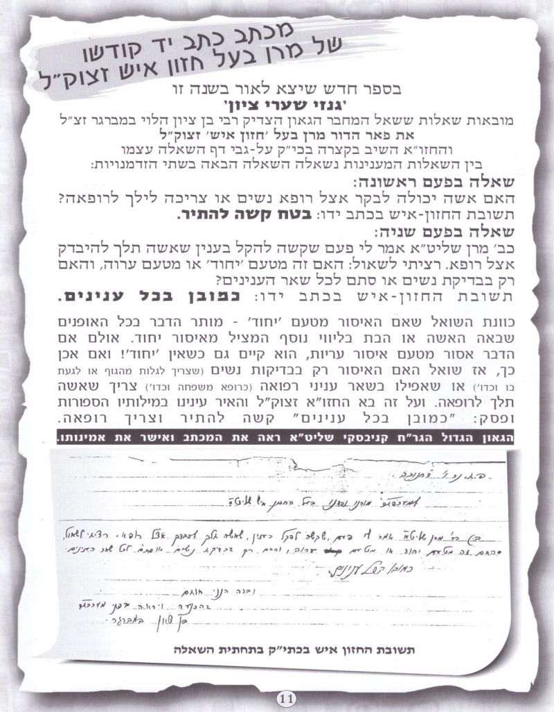
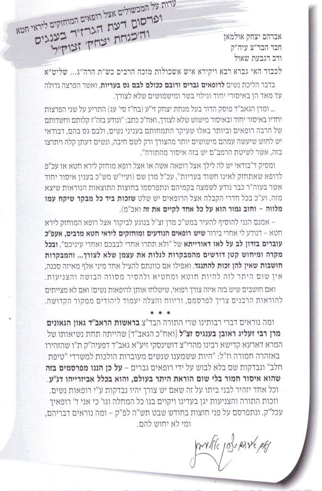
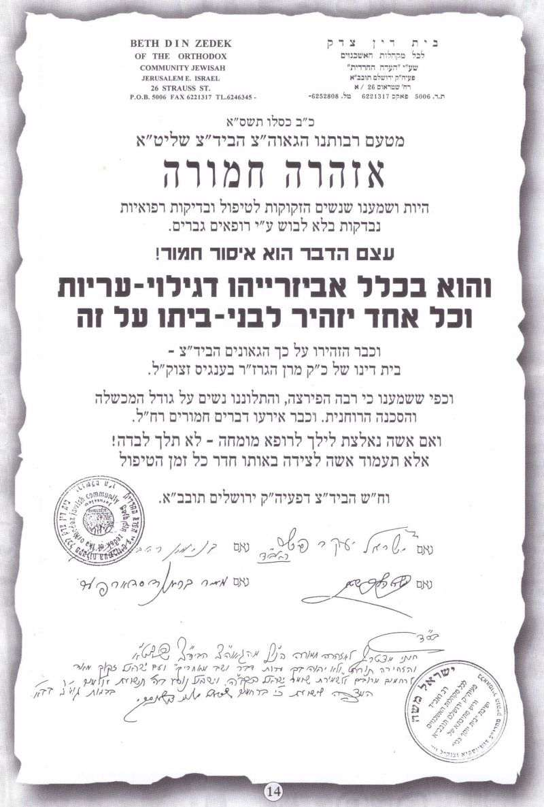
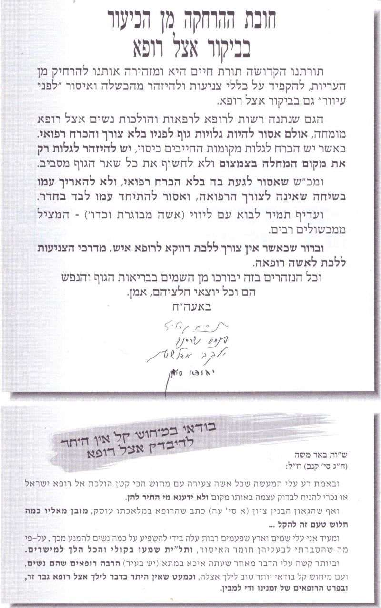
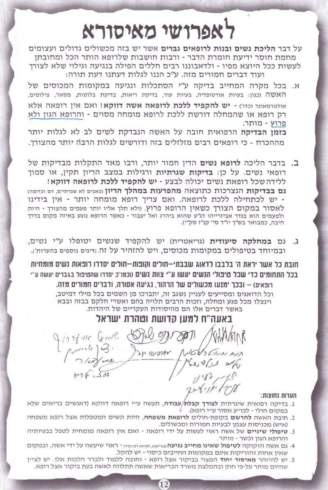
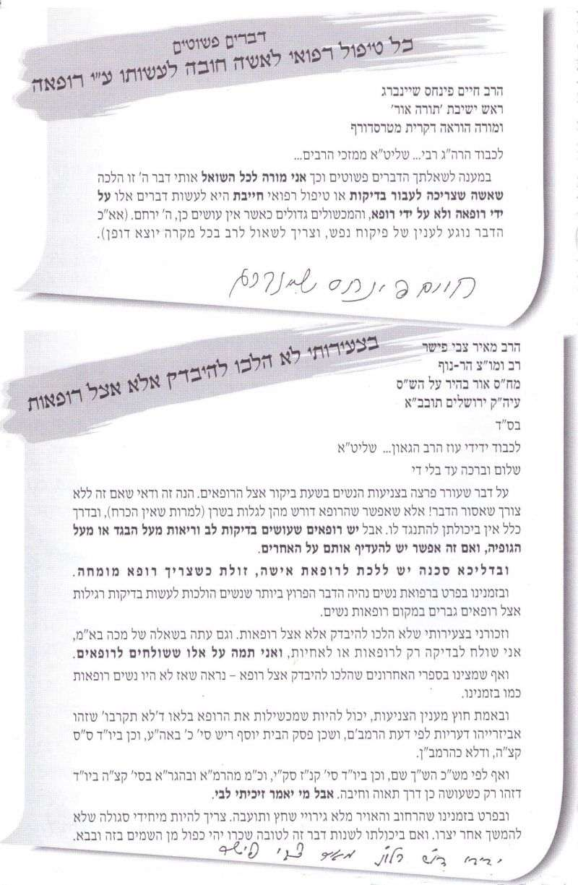
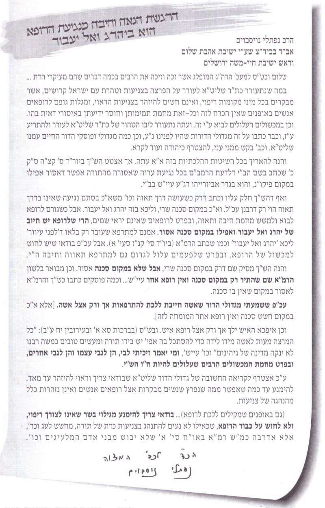
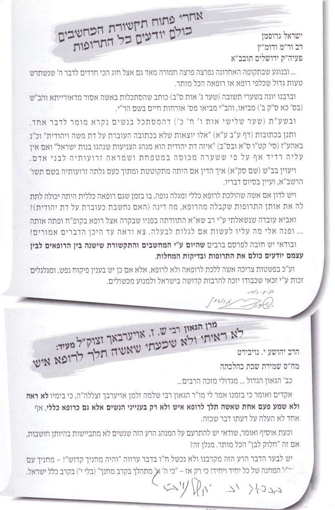

הקדמה
אודה ה' בכל לבב בסוד ישרים ועדה, שהביאני עד הלום לעמוד בפתח קונטרס זה הנקרא בשם
הטוב שברופאים, מחמת ההמשך הידוע של המימרא וכמבואר בגמ' קידושין (פב.), ופירש הרמב"ן (תורת האדם ענין סכנה) שבא לגנות דרכן של הרופאים בפשיעות וזדונות שלהם, ואכמ"ל. שמחה ועצבות מעורבים יחד על הוצאת קונטרס זה. מחד גיסא, שמחה גדולה היא לעסוק בתורה, תורת חיים, ובפרט בעניני צניעות וקדושת המחנה. אך מאידך גיסא, עצוב הדבר שצריך לעורר על דברים אלו בדורנו, ומי יתן והיה לימוד זה בבחינת "דרוש וקבל שכר" ולא הלכה למעשה. אך לדאבון לב, לא כן המצב, אלא כל פרט ופרט שנכתב בקונטרס, הינו הלכה למעשה כפשוטו, לאלפים ולרבבות בארץ ובעולם.
חלק מהחומר הנמצא בקונטרס שלפנינו, נכתב בספרי גן נעול על הלכות צניעות, ומחמת המצב העגום, החלטתי שטוב שעה אחת קודם, ושנכון להוציא קונטרס נפרד רק בעניין זה, ולחלקו חינם לזיכוי הרבים. והיה אם אפילו אשה אחת תימנע עצמה מלילך לרופא כשאין היתר בדבר, והיה זה שכרי. וכבר כתב בשו"ת משנה הלכות (ח"ט ס"ס רסח) לאחר שהאריך בנידונו, שאפי' אם רק דבר אחד יקבלו, היה כדאי כל האריכות, ע"ש. והוא הדין בנ"ד.
וזאת אבקש מהקורא, לקרוא את ההקדמה הנקראת
תמונת מצב, בלא לדלג כלל, כי מבלי לקוראה, יהיה חסרון ניכר להבנת ההלכות שבקונטרס. ועוד שלאחר הקריאה, תתברר תמונת המצב העגומה, ובסכנה הגדולה בהליכת נשים לרופא.
וזאת למודעי, כיון שמדובר בנושא רגיש, לכן הוא מיועד לנשואים בלבד, ולא לרווקים כלל. זולת הסע' האחרון, גבי הליכת איש לרופאה, שאף (ובפרט) רווקים חייבים לדעת את הגדרים בזה. אך אין בזה הוראת היתר שיקראו כן בחוברת הנוכחית. אלא ישאלו את מי שכבר למד את הפרטים. והגר"י רצאבי הורה שהקונטרס אכן מיועד גם לבנות אפילו רווקות, שצריכות לדעת את הסכנות האורבות להן בהליכתן לרופאים. והדבר ברור שלא באתי לאסור לאשה מלילך לרופא כלל, אלא רק שידעו את הגדרים בזה, מתי אכן ישנו היתר בדבר.
ובשער בת רבים אודיעה נאמנה, שמו"ר
הגאון הרב יצחק רצאבי שליט"א עבר על ההלכות שבקונטרס, ופעמים הורה לי לשנות או לסגנן באופן שונה, ועשיתי כמצוותו.
הכותב וחותם לכבוד התורה ולומדיה
יעקב לוי ס"ט
שנת ובן דוד בא קל כנשר (תשע"ה)
הסכמות
הסכמת הגאון הגדול הרב יצחק רצאבי שליט"א
ראש מוסדות פעולת צדיק - בעל שו"ת עולת יצחק וש"ע המקוצר ועוד.
יום חמישי יא' אייר התשע"ה בשכ"ו
חזיתי איש מהיר במלאכתו מלאכת שמים, הוא ניהו ידי"נ מרביץ תורה ברבים בעירו תל אביב ת"ו ש"ת הרה"ג
יעקב לוי שליט"א זוכה ומזכה את הציבור בשיעוריו ודרשותיו, ורבים השיב מעוון, וכבר חיבר והוציא לאור ספר גדול וחשוב בשם
גן נעול על הלכות יחוד, וכעת הולך מחיל אל חיל ומדפיס קונטרס שהוא קיצור מתוך ספרו על הלכות צניעות בשם
הטוב שברופאים ובו מברר הדק היטב מספרים וסופרים על פי הש"ס והפוסקים אשר מפיהם אנו חיים עד גדולי זמנינו, כדי לתקן את אחת
הפרצות העצומות שבמחנה קדשנו, כי בעוה"ר הצליח מעשה שטן ויש הפקרות גדולה ונוראה בענייני רפואת הנשים, כאילו הותרה הרצועה לגמרי בהסתכלות הרופאים ונגיעתם וכו' כי דורנו יתום ומיותם, ונחוץ לבער הרע הזה מקרבנו, ולהשמיע על כך קול זעקה גדולה ומרה, מדוע נעשו בנות ישראל אפילו היותר כשרות וצנועות הפקר לתאוותיהם, עד שהרופאים בינם לבין עצמם לועגים על תמימותן ופתיותן וקלות דעתן עד כדי כך לנצל אותן ככל אוות נפשם וככל העולה על רוחם בלא שום התנגדות. ואף כשיש עם הרופאים מזכירות ומיילדות ורופאות, היודעות ומכירות במעשיהם המכוערים, הן מחרישות לבל יבולע לפרנסתם ולמשכורתן, אויה לנו לאן הגענו.
והגורמים הממונים ואפילו רבנים, כנראה ידיהם כבולות ומוגבלות, ואין מנוס אלא שהציבור החרד לדבר ה' עצמו, יתעורר ויפעל, הן במישור הכללי, והן במישור הפרטי. וצריכים הרבנים לעשות תקנות וסייגים שיחזיקו, כי לא די למחות, אלא לעמוד על המשמר בהתמדה ובלא להרפות. ולענ"ד לא נעשה מספיק עד היום.
הלכך לפעלא טבא אמינא יישר, וחפץ ה' בידו יצלח לחלקם ביעקב ולהפיצו בישראל, והמקב"ה יסייענו על מעשה רצונו, ויעזרנו לגדור כל פרצותינו בקרוב אכי"ר.
הצב"י יצחק רצאבי יצ"ו
הסכמת הגאון הגדול - הרב שמואל אליעזר שטרן שליט"א
דומ"צ בביד"צ מרן הגר"ש ואזנר זצ"ל - ראש ישיבת חוג חת"ס ורב מערב בני ברק
יב' אייר תשע"ה
תחזקנה ידיו של כבוד האברך החשוב והנעלה, המופלג בתויר"ש, הרב יעקב לוי הי"ו,
אשר שוקד בעוז לחזק את חומת הצניעות, להתריע על מכשולות חמורים.
ביקרא דאורייתא
שמואל אליעזר שטרן
הסכמת הגאון הגדול - הרב נתן בן סניור שליט"א
ראש ישיבת בנין ציון ר"מ ואב"ד דשכונת אור החיים בני ברק
בס"ד ד' לחדש זיו י"ט למב"י התשע"ה לס' קדושים תהיו.
התורני הנעלה מאד הרה"ג
יעקב לוי שליט"א בעמ"ס
גן-נעול תל- אביב
שלום וישע רב.
יקרת קונטרסך הגיעני במועדו ולהיות שיעבודי לישיבתינו הקדושה בפתיחת הזמן ואמירת השיעורים לפני בחורי החמד, ומסירת השיחות לאברכים החשובים, נתאחר המכתב. הנה ענין היות נשות ישראל קדושים הולכות אצל רופאים, ויש מבנ"י הולכים אצל רופאות, הם הלכות העומדים ברומו של עולם והם יסוד וגדר הקדושה,
מה גם כשיש רופאים המתנהגים בקלות דעת ובחוסר צניעות ומגיעים הדברים לאביזרייהו דג"ע רח"ל, דדינם יהרג ואל יעבור. (עיין יו"ד קנז' בב"י שיטת הרמב"ם והש"ך וב"ש באהע"ז ס' כא' וע"ע להגרנ"ק שליט"א בחוט שני אהע"ז סי' כא' סעי' ז').
ורבות מנשות ישראל אינם יודעות פרטי הדינים והולכים לרופאים או שולחים בנותיהם אפילו במקום שאין בו סרך סכנה (והדברים אמורים גם במקום שאין איסור יחוד, שהוא דבר האסור בפ"ע בכל ענין). ורב פעמים גם אפשר לבקש רופאה לטפל בהם,
ויש בדברים אלו הסרת מסוה הבושה והצניעות מבנות ישראל הכשרות שהצטיינו בצניעותם כל הדורות, ומסרו עצמן במסי"נ על הדבר כידוע, וכמשרז"ל בעבור תהיה יראתו על פניכם זו הבושה לבלתי תחטאו, דחסרון הבושה הוא חסרון ביר"ש.
ובאיש ההולך אצל אשה לרפואה כל שיש לו אפשרות לילך אצל רופא אע"פ שלא הרהר בדבר, עובר איסור ונקרא רשע כמארז"ל ב"ב נז: דאי איכא דרכא אחרינא רשע, ופרשב"ם אע"פ שעצם עיניו שלא היה לו לקרב אלא להרחיק מן העבירה עכ"ל. ובאם הולך ובא לידי הרהור עובר על ד"ת של ונשמרת מכל דבר רע.
ע"כ יפה עשה הרב המחבר שדן בסוגיות אלו וכו"א יוכל לעיין במקורות ולתת אל לבו לבל יכשל הוא וב"ב בדברים אלו והדבר ירבה קדושה בישראל, לקיים מצות והתקדישתם והיתם קדושים, ובשכר חיזוק בדברי קדושה יבטל השי"ת מעל עמו ישראל כל גזירות קו"ר, ויזכה המחבר לאוי"ט להרבות תורה וקדושה מוסיף והולך, והשי"ת יגדור פרצותינו וישיבנו לציון ברינה בב"א.
הכו"ח לחיבת הקדש
נתן בלאמו"ר חיים נר"ו בן סניור
חופק"ק אור החיים ב"ב
הסכמת הגאון הגדול - הרב יהודה סילמן שליט"א
רב דקהל חסידים רמת אלחנן- בני ברק - אב"ד בבד"צ של מרן הגר"נ קרליץ שליט"א
כח אייר תשע"ה
הנה הביא לפני הרב
יעקב לוי שליט"א חוברת אשר קרא שמה
"הטוב שברופאים", וראיתי כי עבודה חשובה עשה בנושא ביקור נערות ונשים אצל רופאים, שרבים בזה מכשולות חמורים מאד באיסורי יחוד ונגיעות
הנגרמים
מהטעות הנפוצה שלצורך רפואה או לרופאים הכל מותר ח"ו.
ובאמת יש לשמור בזה ביתר קפדנות ועוז על ההרחקות הנחוצות, ועל הנשים להשתדל ללכת לרופאות אלא
באופן שאין עצה אחרת, ואחרי שאלת חכם. וגם שם הותר רק הנדרש לבדיקה או טיפול זה.
והנה הספר מאיר עינים בחומרת האיסור ובביאור כל פרטי השאלות הרבות באר היטב,
ואין ספק שיש בו תועלת גדולה, וכתב בשפה ברורה השוה לכל נפש.
והנני להצטרף לברכות הרבנים הגאונים שהספר הזה יצטרף לספרים החשובים שכתב בעבר בעבודה הקדושה לתת כח ותעצומות ליראים לדבר ה' להתמודד עם קשיים, ולגדול ולעלות בדרך העולה בית ה'.
ובזה בעה"ח
יהודא סילמן
תמונת מצב
תמונת מצב
בשנת התשס"ג יצא לאור קונטרס מכתבי הרבנים (בנשיאות הגר"ש הלוי ואזנר והגר"נ קרליץ) בענין ביקור נשים אצל רופא, וכך כתבו בהקדמה (עמ' 4): חיים אנו בדור ירוד מאוד מבחינה רוחנית. הרוח החילונית מנשבת בעוז, בגאוה ובשחצנות וחודרת לתוכנו בכל תחומי החיים ובוקעת בקיעים עמוקים. איסורי תורה רבים וחמורים, הרגשי צניעות פשוטים המקובלים מדורות, נרמסים בלעג וקלס לעינינו ולעיני בננו ובנותינו.
במקרים רבים אף זוכים אותם רומסים ציניים - בעלי ידע רפואי זה או אחר - ליחס של הכנעה ויראת כבוד מצדנו. רופאים, פסיכולוגים, תזונאים ויועצים חילוניים, מהלכים בתוכנו כתרנגולים מנופחים בגאוה, ומורים לנו את הדרך אשר נלך בה.
בקופות חולים, במרפאות, בבתי חולים, מצויים בהמוניהם רופאים, רופאות ולקוחות חילונים המחדירים בעורקנו - על ידי הנהגתם הפסולה – חיי תאוה, הפקרות, וזלזול בכל האיסורים.
הבורות השולטת בכל פינה, מונחית אך ורק ע"י התפיסה החילונית, שהיא מלמדת אותנו כיצד להתנהג בעניני צניעות. ולצערנו כתוצאה מכך אנו מגדלים דור, שתורת הצניעות כבר אינה ידועה כלל אפילו לא לנשואים ולנשואות.
מחיר הבורות הנ"ל כבד עד מאוד. על גילוי עריות נחרב בית המקדש, ומאז ועד עתה עוון זה מחריב בתים רבים בישראל. ואפילו אם לא הגיעו הדברים לידי כרת ומיתות בית דין, עדיין אוי לנו מהפגמים העמוקים בנפש הנגרמים מהריסת רגשי הצניעות של בנות ישראל העומדות חשופות כנגד כל בעל "חלוק לבן" בכל עת ובכל שעה אשר יחפוץ בכך.
וכבר ביכה מרן החזו"א במכתבו המרגש נגד שירות לאומי (קובץ אגרות קיג) וז"ל "מה נורא הכאב ומה אכזרית המכה לאכוף את בנותנו האמונות עלי צניעות המפוארה לצאת חוץ למחיצתן וכו' לשמוע את הלעג על הצניעות החביבה וכו'
ויכבלו אותה לעמוד בפני גבר רופא" וכו', עכ"ל.
החזו"א אמנם אמר דבריו על החילונים הכופים זאת על בנות ישראל הצנועות, אבל היום, בשל רגש הצניעות השחוק והמושפל, עושות זאת בנות ישראל, מורות ותלמידותיהן, מתוך בורות וכהות חושים, ומתוך יראת הכבוד והרוממות לכל רופא בעל תואר אקדמאי זה או אחר. ע"כ העתקתי מקצת דברים מהקונטרס הנ"ל. והנה היסוד העולה שהחרדים לדבר ה' מושפעים מרוח ההפקרות, כן ראיתי שכתב הגר"ש הלוי ואזנר זצ"ל בהסכמה לספר אום אני חומה וז"ל "והרחוקים מיהדות, מכניסים דרכים לא דרכים גם לבתי היראים", עכ"ל.
באנציקלופדיה רפואית הלכתית (ח"ג ערך יחוד אות ג) מבואר שהנוהג בעולם העתיק ובימי הבניים, היו הנשים נבדקות בדרך כלל על ידי רופאות, ורק במקרים נדירים נקראו רופאים לטפל בנשים. גם האיסלם והנצרות התנגדו לבדיקות נשים על ידי רופאים גברים, ע"ש. ולא שאנו צריכים ללמוד מהם ח"ו, אלא עלינו לשאול את עצמנו וכי ח"ו גרועים אנו מאומות העולם, שהם חסו על כבודן של נשותיהם, ואילו אנו מפקירים את נשותנו ובנותינו בידי אנשים זרים, שרובם חשודים על עריות, רק מפני שהם מלובשים בחלוק לבן. ובש"ע המקוצר (ס' רב סוף הערה נב) כתב שמקרוב נודע שיש מקומות בארה"ב שהתקינו חלוקים מיוחדים לבדיקות נשים עם רוכסן בכמה מקומות ואינן מגלות מגופן רק מה שנחוץ לבדיקה, ויש להעתיק זאת גם לכאן, ע"ש.
וכבר נשאל הגר"ש הלוי ואזנר זצ"ל בענין ביקור אשה אצל רופא בקובץ בשבילי הרפואה (קובץ א עמ' מא) וכתב בתוך דבריו וז"ל
"ואין ספק כלל שהנושא הזה הוא מהדברים שמצוה גדולה לעורר עליו ולפקח עוורים", עכ"ל. ובשו"ת שבט הלוי (ח"ג ס' קפו) כתב וז"ל
"שיש מקום גדול ומצוה גמורה לעורר ולהרעיש בזה", עכ"ל. והגרמ"מ קארפ בספרו משמרת הטהרה (פ"ח עמ' מח) הביא משמיה החזו"א, ושכן שמע מהגרי"ש אלישיב זצ"ל, ושם מבואר בזה"ל
"והרבה יש להתריע על מה שהנשים הולכות ליבדק אצל רופא על כל חשש מישוש וכו'", עכ"ל. ומוכח שהשתיקה אינה יפה בנידון חמור זה. ועל כן ראיתי לנכון לעורר גבי הליכת נשים לרופאים, ולהאריך קצת בתמונת המצב בדורנו, להביא מדברי הפוסקים וכן ממעשים שקרו, כדי להבהיר את המצב העגום של דורנו. ולבסוף לכתוב את ההלכות בנידון כיצד יש לנהוג הלכה למעשה.
והדבר ברור שלא באתי לאסור הליכת נשים לרופא כלל, וכל שכן במקום סכנה. מכל מקום כל כוונתי היא לעורר את הציבור בנושא רגיש זה, שישנם גדרים והלכות מתי אכן מותר ללכת לרופא ומתי אסור, ושאין הדבר בגדר "הותרה".
הנה עיקר טעם ההיתר הוא משום דלא הוי נגיעה של חיבה והרופא בעבידתיה טריד. ואע"פ שהפוסקים כבר דנו בזה, ויש מתירים בדבר, ועיין בשו"ת שבט הלוי (ח"ג ס' קפו) שכתב שיש פעמים שיש מצוה וחיוב לילך לרופאי נשים וכו', ע"ש ויתבארו הדינים בקונטרס שלפנינו. הנה מלבד דלא ברירא לן האי היתירא וכמבואר בתשובת החזו"א שהובאה בספר גנזי שערי ציון להגאון רבי בן ציון הלוי במברג זצ"ל, ששאל במכתב למרן החזו"א גבי הליכת אשה לרופא שענה בלשון "בטח קשה להתיר" (הובא שם צילום כת"י של החזו"א על שולי המכתב, והגר"ח קניבסקי אישר את אמינותו). וע"ע בשו"ת באר משה (ח"ג ס' קנב) שלא ידע מי התיר לנשים לילך לרופא על כל מיחוש קטן, והטעם של עבידתיה טריד מובן מאליו כמה חלוש טעם זה להקל וכו', ובפרט ברופאים של זמנינו ודי למבין, ע"ש. לכן יש לעורר על הא דחזינן דהותרה הרצועה לגמרי, וס"ל להנך נשים ולבעליהם (אפי' בני תורה) שהדבר בגדר של "הותרה" ולא "דחויה". ועיין בהסכמה לקונטרס זה מהגר"י סילמן שליט"א, שכתב בתוך דבריו בזה"ל "ורבים בזה מכשולות חמורים מאוד באיסורי יחוד ונגיעות הנגרמים
מהטעות הנפוצה שלצורך רפואה או לרופאים הכל מותר ח"ו", עכ"ל.
וזאת למודעי, אע"פ שהדברים שאעתיק לקמיה קצת עזים המה, מ"מ הלכתי בעקבות מו"ר הגר"י רצאבי שליט"א (ש"ע המקוצר ס' רב הערה נב), שלאחר שהביא מקצת הדברים דלקמיה, סיים בזה"ל "עד כאן העזתי פני אולי יתוקן על ידי זה העניין, ואני את נפשי הצלתי", עכ"ל. ועוד ששאלתי להגאון הרב נתן בן סניור שליט"א האם יש לימנע מלפרסם דברים שכאלו, וענה לי דפשיטא דיש לכתוב כדברים הללו ולא לחשוש כלל. ותחילה אקדים את דברי הגאון רבי אהרון קוטלר (משנת רבי אהרון ח"ג עמ' קנז) וז"ל
"ומקום פה עמדי לעורר על עניין מכאיב ומבהיל שטועים בו רבים, כי למרות מה שנתבאר לעיל בגודל ענין הפצת קיום מצוה זו בכל ישראל (קדושים תהיו), יש רבים שנמנעים מלדבר בזה מטעמי צניעות. שומו שמים!!! בדור פרוץ וירוד בכל הענינים, בהלבשה במרחצאות ובריקודים וכו' בריש גלי ולא יתבוששו, ולדבר בעניני צניעות זה נגד הצניעות!!? היש לך הטעיית היצר גדולה מזו!! חיוב מוחלט הוא לדבר בזה בפרהסיא, בין מהבימה ובין בשיעורים לחבורות ועם יחידים ובכל מיני הסברה", עכ"ל. והעולה מדבריו שמתקיים בנו עולם הפוך ראיתי, שלעורר בעניין הצניעות הוי חוסר צניעות. וכיו"ב גבי התפיסה המוטעת בענייני עריות, עיין בשו"ת באר משה (ח"ד ס' קמז אות יט) שכתב על אחד שבא להתאונן בפני אדמו"ר שבנו השתגע, וענה לו האדמו"ר בזה"ל "אם היה בנך מרקד עם חזירים ונושך ואוכל הבתולות, אז היה משוגע. אבל עתה שהוא מרקד עם בתולות ואוכל חזיר, אינו אלא בעל עבירה ורשע ולא שוטה ומשוגע", עכ"ל. ולכן אכוון מעשי לשם שמים, ואעתיק דברים שרבים הנמנעים מלדבר עליהם אע"פ שהמכשלה חמורה ומצויה. וידעתי גם ידעתי שישנם ב' הנהגות בזה, ואכן יש הסוברים שיפה השתיקה ואין לפרסם דברים כאלו בציבור, מ"מ מצד שני יש הסוברים שבדור פרוץ, שבנות ישראל נעשו הפקר, אכן יש להתריע אפי' מעל במה זו. והרבנים המסכימים על קונטרס זה, ראו גם ראו אף את הפרק הנוכחי הנקרא תמונת מצב, ופוק חזי מה כתבו בגוף ההסכמה. וזה החלי בעזרת צורי וגואלי.
הנה כיום רובא דרובא של הרופאים, הן רופאי משפחה, וכ"ש רופאי נשים הם פרוצים טובא, הרחוקים מתורה ומצוות, ואיסור הרהור גבייהו מאן דכר שמיה. וכן ראיתי שכתב בפשטות בשו"ת דברי יציב (ח"ז ליקוטים ס' קכב אות א) שהרופאים בזמנינו רובם ככולם פרוצים בעריות, ע"ש. ואף בשו"ת משנה הלכות (ח"ז ס' רלב) הודה ש
רופאי זמננו רובם ככולם הם מושחתים בטבעם כולם יותר מחשודים על גלוי עריות. ועוד כתב שהם עלולים על כל מיני פסלנות ורשע, ע"ש. ועיין בלשון השאלה באום אני חומה (ח"מ ס' רמד) וז"ל "על דבר הרופא בעירכם אשר בכל פעם שבאים אליו נשים להיבדק על ענינים חיצונים ככאב אזנים וכיו"ב, מרבה במשמוש הידים וכיו"ב" וכו', עכ"ל. ואף בשו"ת שבט הלוי (ח"ג ס' קפו) גבי הרופאים פורקי עול שעושים משמושים לצורך "ושלא לצורך", וכו' ורופאי אליל אלה חשודים על העריות ולבם גס בנשים ופירצה קוראת לגנב וכו', ע"ש. וגבי רופא החובש כיפה, דברים של טעם כתב בספר אחותי כלה (קונטרס באתי לגני עמ' קסח) דאפי' אם נאמר שלא ידע שהדבר אסור, מ"מ מסתמא ידע שהדבר מכוער ומסתמא מכיר במציאות ההרהורים, ואפ"ה בחר במקצוע זה מכל מקצועות הרפואה, ויש בזה עדות נאמנה על כוונתו הזדונית, ואין להסתפק אם לעקל אם לעקלקלות, ע"ש. ובשו"ת משנה הלכות (ח"ז ס' רלב) ג"כ כתב בתוך דבריו על
רופאים הנקראים שומרי תורה והם רשעים גמורים, והלא הבנין ציון כתב שירא אלקים ימנע עצמו מלילד נשי ישראל, ואע"פ שהבנין ציון לא כתב איסור, מ"מ התם מיירי אם נזדמן לו לידה אמרינן בעבידתיה טריד, אבל מי שעוסק בזה דרך קבע והוי אומנות שלו, איסור גמור הוא, והיחתה אדם אש בחיקו ובגדיו לא תשרפנה, ע"ש. ועיין להגר"י רצאבי שליט"א בש"ע המקוצר (ס' רב הערה נב) שכתב שיש רופא "דתי" שדורש שהוא עצמו יפשיט את המכנסיים. שומו שמים, ע"ש בדבריו. והגרמ"מ קארפ בספרו משמרת הטהרה (פ"ח עמ' מט) הביא משמיה החזו"א, ושכן שמע מהגרי"ש אלישיב זצ"ל על החומרא בהליכת אשה לרופא, "וכל שכן בדורות האחרונים שרבו הרופאים הפרוצים דלאו בעבידתייהו טרידי", ע"ש.
ובעל המשנה הלכות בספרו בית רחל (נתיב ח) עורר בזה, וכתב שהתפרסם מחקר בעיתון באמריקה, אשר חלק גדול מהרופאים, לכל הפחות 25% והרבה יותר מודיעים שיש להם קירוב בשר עם החולים, וברשעותם שלהם טוענים שאין רואים בזה שום חסרון, ואדרבא טוב הוא לכמה מהנשים. והני נשים כשרות שהולכות לרופא בית ומתרגלות אליו והרופא נעשה ידיד שלה, ומתחילה באונס וסופה מי יודע, ונופלת בפח. וכמה מעשיות שמענו וגם ראינו שהרופאים החריבו בתים ומשפחות קדושות וכשרות. וזה לפני שבועיים נכנס תלמיד מתלמידי הכולל, שכמעט יצא מדעתו, שאשתו סיפרה שהיתה אצל הרופא, ואחר הבדיקות, חיבקה הרופא ונישקה, והיא כמעט התעלפה מפחד, וכשחזרה לביתה וסיפרה לבעלה, הלה התקשר לרופא ושאל על מה זה ועל מה זה, השיב הרופא שזה טוב לאשה. והבעל צעק עליו וכו'. וכל זה היה אצל רופא דתי, ע"ש.
ובפקודת מו"ר הגר"י רצאבי שליט"א עיינתי באנצקלופדיה רפואית הלכתית גבי נ"ד, ומצאתי שם (ערך יחוד אות ג) שנגעו בזה, וכתבו דאע"פ שבאופן עקרוני אין איסור לאשה לילך לרופא, מ"מ קיימים חששות הלכתיים כגון פריצות וזנות ממש, איסור קריבה לעריות, כשיעשה הרופא מישושים שלא לצורך וכו', ע"ש. ובהמשך הביא שמאז ומעולם היו פגיעות במטופלות וכו', וע"ש במחקרים מבהילים שהעתיק גבי רופאים ופסיכולוגים ברחבי העולם, והוסיף שפסיכולוגים ורופאי נשים ורופאי משפחה הם המועדים ביותר למעשים אלו.
בקונטרס מכתבי הרבנים (ועד הרבנים בנשיאות הגר"ש הלוי ואזנר והגר"נ קרליץ) הביאו מכתבי רבנים כדלהלן (והבאתי את מכתבי המקור לקמיה):
בשם הרה"ג אברהם יצחק אולמן שליט"א נכתב, שבעוונותינו הרבים כבר נודע לשמצה בקמיהם ונתפרסמו בחוצות התוצאות הנוראות שיצאו מזה וכו' ונודע לו שיש רופאים הנודעים ומוחזקים ליראי חטא ברבים, ואע"פ כן עוברים בזדון לב על לאו דאורייתא ולא תתורו, כי בכל מקרה קטן דורשים מהאשה לגלות עצמה וכו'.
ובשם הרה"ג ישראל גרוסמן כתב בזה"ל "ועובדא שנשאלתי על ידי רב, שאשת איש התוודתה בפניו שביקרה אצל רופא בקופת חולים ופיתה אותה ובא עליה רח"ל, אשה חרדית. ופנה אלי מה לעשות" וכו', עכ"ל.
והרה"ג יהושע נויבירט זצ"ל (מח"ס שמירת שבת כהלכתה), כתב בזה"ל "בזמנו מו"ר הגרש"ז אויערבאך זצוק"ל אמר לי כי בימיו לא ראה ולא שמע פעם אחת שאשה תלך לרופא איש, ולא רק בעניני נשים אלא גם כרופא כללי, אף אחד לא העלה על דעתו דבר שכזה. וכעת אוסיף ואומר שודאי יש להתרעם על המנהג הרע הזה שנשים לא מתביישות בהיותן חושבות אם זה "חלוק לבן" הכל מותר. מנלן. יש לבער הדבר הרע הזה מקרבנו" וכו', עכ"ל.
ובשם הרה"ג ישראל גנס שליט"א הביא ששמע מהגרש"א זצ"ל להחמיר בפרט אצל הרופאים שאינם יראי שמים, ושמע על דברים חמורים שאירעו וכו', ע"ש.
והגר"י רצאבי שליט"א בש"ע המקוצר (ס' רב הערה נב) כתב בשם הרה"ג יוסף ליברמן שליט"א שכיום בעווה"ר אירעו אצל רופאי נשים מקרים חמורים רח"ל וכו', ע"ש. וכן כתב בשם הרה"ג צבי ריבלין רב דנוה צבי שכתב בזה"ל "הנני יכול להעיד נאמנה על אשה שהלכה להיטפל אצל איש אשר עוסק ברפלקסולוגיה ובעיסוי, ועשה מעשים אשר לא יעשו", עכ"ל. ובשו"ת באר משה (ח"ד ס' קיח אות יד) כתב שכבר שמענו דברים מבוהלים בענין זה גבי הנשים המניחות עצמם לפני הרופא שיבדוק באותו מקום, ע"ש.
והגר"י רצאבי שליט"א כתב (שם סע' ט) שאע"פ שיש מתירים לילך לרופא וכו' מ"מ מכוער הדבר ומביא להרהורי עבירה, ומה גם בזמנינו שהפריצות נוראה ר"ל, ורוב הרופאים מסתכלים וממשמשים הרבה יותר מן הצורך מפני שאינם יראי שמים, ולא עוד אלא שחלקם דורשים מן הנשים לגלות את המקומות הצנועים חינם גם כשאפשר לבדוק מעל הבגד. והנשים מחוסר ידיעה עושות מיד כל מה שהרופא דורש ואינן חושדות שיש כאן זימה ותועבה, וכבר נגרמו מזה מכשולים רבים ועצומים וכו', ע"ש.
ובשו"ת מנחת יצחק (ח"ז ס' עג) פלפל בזה בנידון הליכת נשים לרופא, ואע"פ שהביא מהרבה פוסקים להקל, כתב בתוך דבריו, שכל ההיתר בנוי על הא שאין הרופא והאשה מתכוונים לשם תאוה, אך נודע בזמן הזה קלותם וחשדותם של הרבה רופאים, וביותר באלו שהתמחותם בעניני נשים וליבם גס בהם, בודאי יש לחוש שיעשה עמהם מישושים יותר מן הצורך והן לשם חיבה. ונשים דעתן קלה, וע"ש מה שהוסיף בזה. ובתחילת תשובתו כתב שמהביקורים אצל הרופאים בכל מיחוש, הביא לתוצאות מבהילות ונוראות וכו', ע"ש.
וכיו"ב כתב בשו"ת תשובות והנהגות (ח"א ס' קמ) שמצוי שהרופאים ממשמשים באשה שלא לצורך ונהנין בכך, ומצוי שמאריכים בבדיקות שלא לצורך ומגזימים שתבוא ותחזור וכו' ונכשלין באיסור קריבה אל עריות ובאיסורים חמורים וכו', ע"ש.
והגר"ע יוסף זצ"ל בספרו טהרת הבית (ח"ב עמ' רכא) כתב וז"ל "ודע דאף שהסכימו האחרונים לדברי הש"ך שהטעם שנהגו הרופאים למשש הדופק מפני שבעבידתיה טריד וכו', אולם פשוט שזהו דוקא במקום כאב וחולי ובמקום שאין שם אשה רופאה הבקיאה בדבר ובדלית ברירה התירו וכו'. אבל כשאין הדבר נחוץ כ"כ אלא מיחוש שאפשר להתגבר עליו, אין להקל בזה כלל, ובודאי שע"י כך היא מורידה מעליה מסווה הבושה ומעטה הצניעות וכו'. לפיכך נשים שהן בהריון ההולכות להיבדק פעם בפעם בתקופת הריונן אצל רופא גבר להווכח בהתפתחות העובר, מנהג מכוער הוא ואין רוח חכמים נוחה מהן. והרי יוכלו להיבדק אצל רופאות ואפילו בשכר, ולא יבדקו אצל רופא גבר ואפי' בחינם, ומצוה לפרסם הדברים ולהשפיע על בנות ישראל להימנע מכך וכו', וכ"כ בשיעורי שבט הלוי שכל שיש רופאה אפילו בשכר, אין ללכת אצל רופא אפילו בחינם, ורק במקרים מסוימים וצורך גדול יש ללכת לקבל טיפול מתאים, והדברים מסורים ללב", עכ"ל. ואף הגר"י רצאבי שליט"א שכתב תחילה בש"ע המקוצר (ח"ה ס' קעד הערה יב) גבי בדיקת רופא "שעדיף" ע"י אשה וכו', כבר חזר בו בחלק ו (ס' רב סע' ט) והעלה שצריכה לדרוש שהדבר יעשה ע"י רופאה אפי' אם תצטרך לשלם שכר על כך, והסביר (הערה מח) דמש"כ בחלק ה' בלשון "עדיף", מפני שעדיין לא ידע את גודל המכשלה, ע"ש.
וע"ע בספר אחותי כלה (קונטרס באתי לגני עמ' קסח) שהביא בשם הגאון רבי אברהם יצחק אולמן (הנזכר לעיל) שהראב"ד הגאון רבי ראובן זעליג בנגיס ובנשיאות מהרי"ץ דושינסקי, שהזהירו באזהרה חמורה לגבי נשים ההולכות להיבדק אצל רופאים שהוא איסור חמור בלי שום הוראת היתר בעולם והוא בכלל אביזרייהו דג"ע, ע"ש.
ובספר אחותי כלה הנ"ל הוסיף דמה שמורגל בפי הנשים, שרופא מתנהג בעדינות יותר מן הרופאה, אדרבא, היא הנותנת, כיצד יתכן שגבר, שבדרך כלל הוא גס יותר מן הנקבה נהפך פתאום לעדין כ"כ, אלא מכיון שיש יצר הרע וחיבה, לכן הנגיעה עדינה יותר. והעיד שם ששמע מאחד העובדים בבית חולים המוגדר כיותר דתי בירושלים, שגילה לפניו עד כמה הרופאים והעובדים פרוצים הם, ועד כמה משתמשים בחולות התמימות לספק תאוותיהן, ואוי שכך עלתה בימינו שבנות עם הקודש מובלות כצאן לטבח לפני חבורת פושעים זו, עכת"ד.
ובספר דרך בת עמי (ס' רכא עמ' תרנז הערה ט) כתב שכיום האשה על דבר קטן הולכת לרופא, ובזה פוגמת את כבודה, ונהירין לכל שבילי מוחו דכל יצר מחשבות לבו רק רע כל היום, הלכך תדרוש רפואתה מידי רופאה. ולמגינת הלב, רובן מחשיבות אותו באשר הוא מלומד ומכבדתו יותר מאשר מכבדת תלמיד חכם, וכל היוצא מפיו יעשה. ומעולם לא המרה אדם פיו גם כשברור שלא צריך לעשות דברו. ובאשר הוא שטוף בזימה ותועבה, ברוב פעמים מצוה עליה להסיר בגדיה בחינם, ואין בה תעוזה לשאלו מדוע והאם נחוץ הדבר ואפי' שיש לה רק כאב בצוואר. ובהמשך כתב דמלבד הזנת עיניו הטמאות מגופה, עוד היו מכשולות לרוב, אם לא במעשה אזי בהרהור דבר רע, ע"ש.
ובקונטרס מכתבי הרבנים הנ"ל הביאו שם עדויות מזעזעות. תלמידת סמינר נגשה לרופא בעקבות פצעון קטנטן בכתף, ובמקום שתדרש למתוח מעט את פתח הצואר, נדרשה להוריד את החולצה ואת הגופיה, ומיד עשתה כמצווה עליה מרוב תמימותה. ומקרה נוסף, שפעם אחת היתה צריכה אשה להבדק בדיקה שגרתית שאחר הלידה. באמצע הבדיקה נכנס רופא אחר ושוחח שיחת רעים עם הראשון כרבע שעה בעוד הנבדקת ממתינה בגילוי גוף לסיום הבדיקה וכו'. ועדות נוספת מבעל שהתלוה עם אשתו לרופא משפחה עקב שיעול, הבעל התפלא על דרישת הרופא לחשוף לגמרי את גבה של אשתו, דבר שהתקשתה לעשותו לבדה והרופא סייע בידה. הבעל שאל מדוע כשאצלי עשו את אותה בדיקה בדיוק לא נדרשתי לפשוט את החולצה וכו', הרופא השיב "זו שאלה של נוחות" ופטר אותו לשלום. עדות נוספת על רופא אחראי על חדר לידה, שהתעקש לבדוק בעצמו כמה פעמים את התקדמות הלידה למרות שהיולדת הצעירה הודיעה לו כי המיילדת הראשית כבר בדקה אותה. לטענתו השיב בציניות "אני לא סומך על אף אחד". וע"ע בחוברת אסיא (חוברת סא ניסן השתנ"ח עמ' 199-200), מה שעוררה בזה אחת הרופאות, והיה זה לפני שיצא חוק צנעת הפרט.
וכעת מצאתי בטהרת יו"ט (חלק טו עמ' קמד) פרסום ביד"צ למקהלות האשכנזים לעדה החרדית, שיצאו חוצץ בנידון הזרעה מלאכותית, וחוששים שאשה מזנה ותולה בשפופרת וכו' והמשיכו וז"ל "מכל שכן אם יעשו על ידי רופאים גברים, ומלבד שאינם נאמנים שהלא רבים מהם פרוצים ומופקרים וחיישינן לכל דבר שבטומאה וכמעשים שהיו שאפילו בכאן אצל שני רופאים שהם בעצמם זנו, וכן יש מעשים כאלו ברופאים בוורשא (ועיין בשו"ת מחכמי פולין) מכש"כ בזה"ז שנעשו דברים אלו הפקר, ויתלו בשפופרת וד"ל", עכ"ל. וחתומים על זה רבני הביד"צ העדה החרדית, הגאון הרב פנחס עפשטיין, הגאון הרב ישראל יצחק הלוי רייזעמאן, הגאון הרב דוד הלוי יונגרייז.
ונקודה חשובה יש לציין, שכיום מצוי שרופא מומחה, מתלווה אליו רופא בתקופת התמחות, כלומר שנכנס עמו לבדיקות כדי ללמוד את רזי המקצוע. ובנידון כגון דא, שהאשה נצרכת להיבדק אצל רופא (כשיש היתר בדבר), נראה פשוט וברור שעליה לדרוש שרופא המתלמד ימתין בחוץ, ואין לו שום היתר ליכנס ולהסתכל (ואף לפי החק יכולה לדרוש כן). ועוד יש לציין שאחרי שנעשו מעשים חמורים ע"י רופאי נשים, יצא חוק מטעם משרד הבריאות, וחקוק על שלטים במרפאות הציבוריות, שכל הבא לרופא רשאי להכניס אתו לחדר אדם נוסף כפי רצונו. ולכן יש לאשה לנצל חוק זה כאשר נכנסת לרופא (אם יש לה היתר). וכבר עורר בזה הרה"ג יוסף ליברמן, והובא בש"ע המקוצר (שם).
וגבי החוק הנ"ל שיצא לטובת הנשים מחמת המקרים הנוראים שקרו, הגר"ש ואזנר זצ"ל ביקש לפרסם את החוק הנ"ל, והו"ד בקונטרס מכתבי הרבנים (עמ' 5). החוק על פי זכויות האדם 1996 (ספר החוקים 1591, כג' אייר תשנ"ו עמ' 327-336) שאי שמירה על צנעת הפרט מהווה עבירה פלילית. וחובה על המטפל לשמור על כבודו ופרטיותו של המטופל בעיקר בתחום רפואת הנשים (כולל סגירת וילונות והסתרת הנבדקת בזמן הבדיקה, ומניעת אי נוחות בחשיפה ממושכת וכד').
ודבר מצוי הוא, ומעשים שבכל יום, שאשה שהגיע שעתה ללדת, ונמצאת תחת השגחה במחלקת יולדות, ומדי פעם נצרכת לעבור בדיקת "פתיחה". יש לדעת שכאשר ההריון תקין ואין חשש מיוחד, אזי לא רק רופא יכול לבצע בדיקה פשוטה זו אלא אף המיילדות הנמצאות שם. ולכן על היולדת (או בעלה) לדרוש שמיילדת תעשה בדיקה זו, ובפרט בעת הזו שצריכה רחמי שמים מרובים בשעת לידה. ואל ישעו לדברי הבל של הרופאים שעליהן לבצע את הבדיקה הלזו, וכמו שהבאתי לעיל עדות על רופא שניגש לבדוק את האשה, וכשהודיעו לו שהיא כבר נבדקה, ענה שהוא לא סומך על אף אחד. וח"ו להאמין לדברי הבל כאלו, ויש לעמוד על המשמר שהאשה תבדק ע"י מיילדת בלבד, וכנ"ל. והנסיון מורה שאם הבעל מתעקש על כך, ידו תהיה על העליונה. אך כל זה מיירי שאין שום חשש או סיבוך, דאם אכן יש חשש מסויים, יש להתיר בדיקת רופא ע"פ ההלכות שיובאו לקמיה בהמשך הקונטרס. ועובדא ידענא באשה שהתאשפזה במחלקת נשים הנמצאת בקומה עליונה, והיה שם רופא אחראי. וכשנצרכה לבדיקה פנימית, התעקש בעלה שהדבר יעשה ע"י רופאה בלבד. וצוות המחלקה התנגד ושכעת המשמרת של הרופא וכו' וכו' טענות ממינים שונים. ולבסוף כשראו שהבעל מתעקש, הזמינו רופאה מהקומה הראשונה והיא ביצעה את הבדיקה. ושו"ר בספר דרך בת עמי (ס' רכא עמ' תרנז הערה ט) שהביא עובדא ששמע מתלמיד שסיפר אודות כלתו, שרצה הרופא לבדוק לה הדופק על ידי המכשיר וציוה עליה להסיר את הבגדים העליונים. והאשה שאלה וכי בשביל בדיקה זו צריך התערטלות, הרי אפשר להכניס הכלי תחת החולצה, והוסיפה שיתן לה את המכשיר והיא תכניס אותו למקומו והוא יקשיב, וכך היה. והוסיף המחבר שיש לומר לנשים שיזקפו ראשן וידברו בדרך ארץ וישאלו האם באמת נחוץ הדבר שהוא דורש וכו', ע"ש. ולענ"ד אם ישאלו הנשים לרופא, הוא ישקר במצח נחושה בלא להניד עפעף, ויטען שחובה לעשות כן, וכמעשים שקרו. אלא עליה לימנע מלעשות כן כל שעל פי שכלה הישר היא מבינה שהדבר מיותר לחלוטין.
ולאחר זמן, כשהתחלתי לעורר על נושא זה, התקשר בעל שאשתו בלידתה הראשונה (שעדיין אינם יודעים את התהליך שעליהם לעבור) נמצאת במחלקת יולדות, והרופא ביקש לבדוק בדיקת "פתיחה", ושאל כדת מה לעשות. עניתי לו שיבקש שרופאה או מיילדת תבצע את הבדיקה. הרופא (שהיה צעיר כבן שלושים) עשה עצמו נפגע. והמיילדת, שכנראה כאב לה על כבודו של הרופא, הכינה עצמה לבדיקה בעוד הוילון פתוח לכיוונו של הרופא ששהה בחדר ולא יצא. האשה התעקשה על סגירת הוילון, והמיילדת לאחר שסגרה את הוילון בדקה אותה בצורה אגרסיבית וכואבת, עד שהאשה החלה לבכות. והרופא הפטיר כלאחר יד, זה מה שקורה כשרופא לא בודק. ולא הסתפק בזה, אלא כשנשאל מהאשה ומהבעל שאלות על מצבה, החל לענות בזלזול ובציניות. כמובן שאמרתי לבעל לרשום את שמות הרופא והמיילדת ולהתלונן עליהם. וכל זה התרחש בבית חולים הקורא לעצמו חרדי.
וכתב בשו"ת באר משה (ח"ד ס' קיח אות יד) שמוכרחים לזעוק על הנשים שלנו במה שנתפסו מפטפוטי מילי בעלמא של הרופאים דזמנינו, שב' פעמים בשנה מחוייבות להבדק באותו מקום אם לא נמצא שום מחלה שם, וכצאן לטבח יובלו, והולכות ב' פעמים בשנה לקיים מצות הרופאים. ולא ידענא מי התיר להן דבר זה לילך לרופא זכר בלא שום אונס מיחוש רק בשביל בדיקה בעלמא, וכדי בזיון וקצף, ע"ש.
ובשו"ת שבט הלוי (ח"ד ס' קסז) כתב עשרת הדברות בענין הנהגת צניעות שבהליכת נשים לרופאים, וז"ל:
א. שלא להרבות בביקורי רופאי נשים בכלל, כי יש בזה חששות טובא מנגיעת עריות שלא לצורך וכו' כאשר בארתי בעניי בשו"ת שבט הלוי ח"ג ס' קפו.
ב. במקום הצורך לבחור אם אפשר באשה רופאת נשים.
ג. ואם אי אפשר באשה, וגם שהאיש הרופא מומחה יותר, אין בידינו לאסור במקום צורך.
ד. לא לבקר כלל אצל רופא מוחזק בפריצות וחשוד מפורסם על העריות.
ה. בכל אופן לא ללכת רק בזמן הביקורים הקבועים לרבים דשכיחי רבים וזה ממעט החשש וגם אז בעבודתיה טריד.
ו. במקום דצריך ללכת באופנים הנזכרים, ראוי שלא ללכת לבד אלא בלוית אשה כשרה שתחכה לה.
ז. דעתי יותר נוטה שאין זה מהנכון כ"כ שילוה אותה בעלה וימתין לה בחדר ההמתנה לשבת שם עם נשים פרוצות כרגיל במקומות אלו ותקנתו בזה קלקלתו.
ח. אע"פ שקשה להעמיד לגמרי דת על תלה לענין איסור יחוד בנדון זה עליה להשתדל שלא תסגר דלת חדר הטיפול, ועכ"פ שלא לסגור במפתח.
ט. מלבד חששות של יחוד, הן הרגילות שרופאי נשים מיעצות להנשים בענין מניעת הריון ועוד דברים המנגדות לקדושת תורתינו הקדושה, ע"כ יש ללמוד להנשים שלא לקבל מהם רק כאשר יורו להם מורי הוראות מובהקים שטהרה ויראת ה' נר לרגלם.
י. שלא להאריך בשיחה עם הרופא בשעת הטפול ולא אח"כ אלא רק במה שנוגע להצורך ביותר. ע"כ משו"ת שבט הלוי.
ובכל הנ"ל יש לעורר את לב הבעלים שישגיחו וילמדו את נשותיהן שלא יתנו לרופאים לנצל את תמימותן הרבה, ושילכו לרופאה ולא לרופא, וכבר פסק הרמב"ם (סוף הל' סוטה) בזה"ל "וכל מי שאינו מקפיד על אשתו ועל בניו ובני ביתו ומזהירן ופוקד דרכיהן תמיד עד שידע שהן שלמים מכל חטא ומעון, הרי זה חוטא, שנאמר וידעת כי שלום אהלך ופקדת נוך ולא תחטא", עכ"ל. ועיין מה שעורר בזה הגר"י רצאבי שליט"א בש"ע המקוצר (ס' רב הערה נב ד"ה האם) עובדא מרב אחד שאמר לאשה ששאלה בהלכות טהרה ובעלה יושב באהלה של תורה, שתלך להיבדק אצל רופאה כי נראה שהדם אינו אלא ממכה, והשיבה הפתייה לעומתו, אין צורך אני הולכת "לרופא שלי". וע"ש (ד"ה ונחוץ) מש"כ להוסיף בזה. וכבר הזהיר בפלא יועץ (ערך עריות) שמצוה על כל האנשים להזהיר הנשים ובנות ביתו שתהיינה צנועות בפני כל בני אדם, ע"ש.
וידעתי בני ידעתי, שיקומו אנשים שחלקם אפי' בני תורה ויאמרו שהפרזתי על המידה, ובמציאות אין הדבר נורא כ"כ ומנהג העולם להקל בזה בכל גונא וכו' וכו', טענות שונות מעצת היצר. לכן כדי לעורר את לב הבעלים שלא להפקיר נשותיהם לפני הרופאים שרובם חשודים על עריות, אמרתי להעתיק מש"כ בשו"ת משנה הלכות (חי"ד ס' קי), כדי שיראו כיצד יש להתייחס לזה מנקודת מבט של דעת תורה. ובטוחני שהבעלים יראו זאת באור אחר. וז"ל המשנה הלכות "ופעם שמעתי שבא אברך אחד לפני כ"ק אדמו"ר מקלויזענבורג זצ"ל ושאל היות כי יש לו רופא איש שרוצה לטפל עם לידת אשתו בעד אלפיים דאללאר, ויש לו אשה שמבקשת אלפיים ושלש מאות, איזה מהם יקח. והשיב לו כ"ק האדמו"ר זצוקלה"ה,
תגיד לי אם מישהו בא ויאמר לאשתך שתעמוד ערומה כמה פעמים בפני איש או שתשלם ותיפטר וכו', כמה היית משלם שלא תעמוד אשתך ערומה בפני איש ולא ימשמש בה, אמר לו תבין מעצמך, שהרי רופא אינו טוב משאר איש ועוד גרוע הוא" כו', עכ"ל. הנה כל המעיין במשל של האדמו"ר זצ"ל, יאחזמו רעד, שהרי כל בר דעת ישלם כסף רב ובלבד שאשתו לא תשכב ערומה לפני איש מעלמא והוא ימשמש בה, אך כשזה מגיע לרופא, אדרבא הוא מוכן לפעמים לשלם לו כסף על כך. ושו"ר לבעל המשנה הלכות בספרו בית רחל (נתיב ח) שכתב וז"ל "והגע בעצמך, אשה כשרה וצנועה בכל דרכיה בבית ובחוץ נכנסת לבית הרופא ובודק וממשמש במקום התורפה או בשאר מקומות המכוסים, והוא איסור גמור שהרי הרופא אצלה עכשיו כשאר אדם זר. וכמה ממון היה מפזר בעלה שאשתו לא תפשוט בפני זר, וכמה היתה האשה מסרבת ומוסרת נפשה ולפעמים עד למיתה ח"ו שלא יכניס איש זר ידיו במקומות המכוסים ויסתכל בה, ועתה היא ברצונה הטוב הולכת אל איש הזר הנקרא רופא ומשלמת לו ממון והוא עושה לה מעשים האלו. אלא שכיון שכבר התרגלה אצלו, אינה מתביישת ואינה מצנעת עצמה. ולפעמים מבעלה בושה יותר ממה שמתביישת מהרופא שלה, שהוא נעשה לה לידיד. ופשוט דהרגילות מביא כמה פעמים הנאה, כי דרך של הני רופאים למשמש בהן באופן כזה,
והני רופאים רובם רשעים נינהו ומנצלים את חולשת טבע האשה שדעתן קלות ואין אפוטרופוס לעריות. והרי אמרו ז"ל (כתובות נא: סוטה ירושלמי ד) תחילתו באונס וסופו ברצון, וכ"ש שתחילתו ברצון אלא שלא לשם איסור", עכ"ל. (ומש"כ שהרופא כאיש זר אצלה, כוונתו שם שהולכת אליו לביקורת ללא צורך. מ"מ איכא למשמע מדבריו לנ"ד, היינו כשאפשר ע"י רופאה אפי' בממון וכנ"ל בשם האדמו"ר מקלויזענבורג).
ועוד כתב הגר"י רצאבי שליט"א בש"ע המקוצר (שם) לאחר שהביא מקצת הדברים דלעיל, וז"ל "האם באופנים כאלו יש מי שהתיר. והרי הוא טרוד אז גם ביצרו ולא רק בעבודתו.
האם בנות שרה רבקה רחל ולאה הכשרות והצנועות נעשו בדורנו הפקר גמור לתאוותיהם הבזויות והבהמיות של עוכרי ישראל. עד כדי כך קלות דעת ותמימות, אפילו אצל נשים חשובות מלומדות וחכמניות, ובעליהן עוסקים בתורה יומם ולילה. ומי יודע אם לא מצלמים אותן בסתר. אוי לאותה בושה אוי לאותה כלימה", עכ"ל.
וכמה יש לזעוק על הדבר שראיתי בעיני וגם שמעתי באזני, שבמשך הלידה הרופאים מטיילים בין חדרי הלידה, ונכנסים לחדרים בלא שנתבקשו כלל, ובעוד הלידה הולכת למישרין ואין שום סכנה או צורך בנוכחות רופא, ונעמדים מול היולדת בלא מחיצה כלל רק כדי לשאול אם הכל בסדר. ומלבד שהאשה נמצאת באותה שעה גלויה לפניו כביום היוולדה (בשעת תהליך הלידה ולא לפני כן שהיא אכן מכוסה), זאת ועוד החוסר נוחות שמרגישה האשה באותה שעה הוא מזעזע, אלא שמרוב חולשתה אינה יכולה לטעון דבר וחצי דבר, שהרי הוא הרופא. ואף אם ישנה טענה שהדבר נצרך שהרי הדבר תחת אחריותם, הרי שיכולים לעשות כן מאחורי הוילון בנקל. וכבר שח באזני אחד מן האברכים, שבשעה הלזו (שאשתו גלויה וכנ"ל), נכנס רופא כדי להכניס נתונים למחשב, כאילו שלא יכל לעשות כן אחרי הלידה או לפני כן, ואוי לאזניים שכך שומעות. וכל זה מדובר בבית יולדות הנקרא חרדי.
ופוק חזי להמבואר בגמ' (כתובות י:) גבי בדיקת בתולות, דלאו אורח ארעא לזלזולי בבנות ישראל, ופירשו תלמידי רבנו יונה (הובא בשיטה מקובצת כתובות שם) וז"ל "וזה היה זלזול שאף על פי שהיו עומדות במלבושיהן, היו מתביישות והיו צריכות לבא לבי"ד ולעלות על פי החבית ולפסק את רגליהן", עכ"ל. הרי אפי' שהיו במלבושיהן, ולפני צדיקים וקדושים, אפ"ה היו מתביישות לפסק רגליהן. ואידך זיל גמור.
כשבוע ימים לאחר שסיימתי לכתוב את כל הנזכר גבי הליכה לרופאים ובפרט פרוצים, נשאלתי בעובדא דלקמיה. אשת איש שהוצרכה לעשות צילום רנטגן באגן ובגב התחתון, הלכה למכון צילום בעיר בני ברק, ובאותו יום עבד שם רופא. האשה התקשרה אלי לשאול כדת מה לעשות, היות והיא אחרי לידה וסובלת מכאבים. ביקשתי ממנה לשאול את הרופא האם עליה להסיר את בגדיה בעת הצילום, והרופא ענה שהיא חייבת, ולא עוד אלא ענה שצריכה להוריד הכל. אמרתי לה שתחזור ותשאל האם זה הכרחי, ותשובתו היתה חיובית. עניתי לה, שתבוא ביום שלמחרת לצילום, שאז עובדת רופאה. לבסוף התברר שהרופאה אכן היתה נוכחת במקום אע"פ שאינה במשמרת עבודתה, והרופאה אמרה לה שאם היא תמתין לסוף התור, היא תצלם אותה. לאחר ההמתנה של זמן מרובה, הרופאה ביצעה בה את הצילום כאשר האשה לבושה בביגוד מלא. וכששאלה את הרופאה כיצד עושה כן, ענתה שאין צורך להוריד בגדים כלל. וכשנשאלה הרופאה והלא הרופא ענה שחייבים להוריד בגדים, ענתה שהוא רגיל לעשות צילומים בלי בגדים (אע"פ שאין כל צורך בכך), עד כאן המעשה שבא לידי. והוי כסיוע משמיא לדברינו לעיל, והמבין יבין.
ועד שהקונטרס ירד למכבש הדפוס, נשאלתי שוב מבחורה שהרופא מתעקש ודורש במפגיע שתפשוט את חולצתה לגמרי כדי לבדוק את ראותיה, ואף לאחר שסירבה לעשות כן, הלה לא הרפה וטען שהוא רופא ועליו לבודקה. הורתי לה לסרב בכל תוקף. עד שלבסוף הרופא הפטיר שזה לא כ"כ משנה ובדק אותה מעל חולצתה. והוי עדות נוספת לכל האמור לעיל. וכבר העיר בזה הגר"י רצאבי שליט"א בש"ע המקוצר (שם) שיש שעל בדיקת ריאות פשוטה שאין צריך עבורה אפי' לפשוט החולצה, והרופא כדי למלא תאוותו, דורש ממנה לגלות גם את וכו', ע"ש.
ועובדא נוספת ששמעתי מאחד שסיפר באזני, שאשתו הוצרכה לבדיקת מעקב הריון. וכשהלכו לביה"ח הגיע רופא. ובעת שקיים את בדיקת האולטרא-סאונד החיצונית, הניח הרופא החצוף והפרוץ את ידו על גופה בצורה שאינה משתמעת לשני פנים, וכל זה בפני בעלה. הבעל לא נשאר חייב והורה לו באופן מידי להסיר את ידו מעל אשתו, והרופא ההמום עשה כמצווה עליו. ישמע חכם ויוסיף לקח. וכמה צדקו דבריו של בעל המשנה הלכות בספרו בית רחל (נתיב ט) שאם על הרופאים שבזמן חז"ל אמרו הטוב שברופאים לגיהנום, (קידושין פב.) מה נאמר על רופאי זמנינו שהם רובם ככולם מושחתים, ע"ש.
וידע הקורא נאמנה, שבעוד הקונטרס עבר הגהות והוכן לדפוס, כמעט כל ששמע אודותיו, ביקש לשוחח עימי ולספר לי מקרה שהיה עמו ועם רעייתו או קרובתו. אך לא ראיתי צורך להאריך בסיפורים נוספים כדי שלא להלאות את הקוראים. וכמדומה שכבר יצאנו ידי חובה במה שכתבנו לעיל כדי לעורר את הלב. ודי בזה. ובמעט שהספקתי לעורר בזה בע"פ, כבר נקטו השומעים במשנה זהירות. וכגון אברך ששוחחתי עמו, ושבוע לאחר מכן אשתו נזקקה לצילום ריאות (בבני ברק), והטכנאי הורה לה להסיר את כל בגדיה העליונים. ובעלה הורה לה לסרב בעקבות השיחה עמי, ומיד הרופא הסכים בפשטות לצלם אותה עם חולצתה. והנה דאפי' שאפשר לצלם עם חולצה, מעיקרא מבקשים לפשוט הבגדים. והאברך הודה שאם לא היה משוחח עמי ומתעורר ליתן לבו לדבר, אשתו היתה עושה כמצווה עליה.
לקראת סיום
* וזאת למודעי, שלאחר שכתבתי את כל הנ"ל והגשתי את החומר קמיה הגר"י רצאבי שליט"א, הורה לי לפנות למספר רבנים לשאול על פשרו של דבר. ותחילה פניתי לאחד מרבני בית החולים בארץ המוגדר כבית חולים חרדי. ולשאלתי מדוע בדיקה הנקראת בדיקת "פתיחה" שעוברת כל אשה המגיעה לחדר לידה, מתבצעת ע"י רופא בעוד שכל מיילדת יכולה לעשותה. ענה הרב שהוא אכן רצה שהדבר אכן יתבצע ע"י מיילדת, ואכן יש בתי חולים שמיילדות עושות כן, אך כאן הרופא הבכיר של מחלקת יולדות אינו מסכים, כיון שהוא טוען שרק רופא יכול לזהות בעיות. הדגשתי שכוונתי על הריון בריא ותקין ועל בדיקת פתיחה המתבצעת בתדירות כדי לראות כיצד הלידה מתקדמת, והתשובה נשארה אותה תשובה, היינו שהרופא הבכיר טוען שרופא צריך לבצעה (וה"ה רופאה, לאפוקי מיילדת), וכנ"ל. ועוד הסביר הרב הנ"ל, שבעבר רופאים אכן נכשלו במעשים (לאו דוקא באותו בית החולים), ויצאה הוראה מהרבנים לילך לרופאה בדוקא, אלא שאז היה ביקוש גדול לרופאות, וקופות החולים העלו את משכורתן של הרופאות כדי שיעברו לעבוד בקופה, והבית חולים נשאר עם רופאות מועטות. וההוראה שלו היא שאשה מבקשת רופאה, שיתנו לה אם אפשר, ואע"פ שכולן צריכות רופאה, אי אפשר לעשות כן, לכן מי שמבקשת, אם יתאפשר, יתנו לה. ולבסוף הוסיף סברא מדיליה, דכיון שהרופאי נשים עסוקים בזה כל הזמן, לבם גס בהן, ותו לא חייישינן להרהור או תקלה, עכת"ד.
וחזינן כמה קלוש ותלוש טעם ההיתר בנידון זה. שאע"פ שרב בית החולים חפץ שהדבר אכן יתבצע ע"י מיילדות, ומעיד שיש מקומות שכך עושים, אותו רופא בכיר כופה דעתו בהסבר מטופש שרק רופא יכול לגלות בעיות, אע"פ שמדובר בהריון בריא ותקין לחלוטין, ובעיות מאן דכר שמיה. ואפי' אם ההסבר היה נכון מבחינה רפואית, מ"מ נסתר הוא מבחינה מציאותית. ופוק חזי האם הרופאים הבודקים פתיחה אכן מנסים או מגלים בעיות מסויימות. והמציאות מורה שהרופא בודק את גודל הפתיחה ואת מחיקת הצוואר ותו לא. ועוד ניחא בבדיקה ראשונית, שהרופא "חושש מבעיות", אך בשאר פעמים שהיולדת נבדקת לראות האם עת לידתה קרב, ונבדקת שוב ושוב, אזי בודאות יכולה הבדיקה להתבצע ע"י מיילדת, שהרי הרופא כבר בדק בפעם הראשונה ולא "גילה בעיות". ולמה באופן זה אין הוראה שמיילדות יבדקו בדוקא. ובפרט שרב בית החולים העיד שרופאים נכשלו בעבר, אע"פ שבזה אין כל חידוש, שכן כבר מבואר לעיל בתמונת מצב על המכשולים הרבים שהתבצעו ע"י רופאים. ועוד שדברים שבכל יום שישנה גם רופאה, ובכל זאת הרופא מבצע את הבדיקה הלזו, אא"כ היולדת מבקשת רופאה. אך אם היא אינה משכילה לבקש רופאה, אין שום הוראה שעל הרופא לימנע מלבודקה, וכמו שהעיד רב בית החולים הנ"ל.
וגבי הסברא הלזו, היינו שהרופא מרוב עיסוקו בדבר הלזה, לבו גס בהן ואינו מהרהר וכו', שמעתי פעם נוספת מרב נוסף שהגר"י רצאבי הפנה אותי אליו. ויש לציין שהרב של בית החולים שאמר לי סברא זו תחילה, נמצא סותר עצמו בנשימה אחת. דהא הוא עצמו העיד שרופאים נכשלו בעבר, ומוכח דלא מהני האי סברא. והנה אפי' אי נימא שסברא זה נכונה, עדיין אין זה מתיר לאשה ללכת ליבדק אצל רופא כל שאפשר ע"י רופאה או מיילדת אפי' בשכר וכמבואר לקמיה בחלק ההלכות (סע' ה), אלא סברא זו סה"כ מועילה שלא נאסור לילך אליו לגמרי אפי' היכא דליכא רופאה. וא"כ חזרה השאלה למקומה, דאפי' אי נימא דמרוב שלבו גס בהן תו לא מהרהר, עדיין אסור כיון שאפשר ע"י רופאה או מיילדת, וכנ"ל.
אך בעיקר סברא זו, מלבד מש"כ שסברא זו נסתרת מהמציאות, שהרי הרבה רופאי נשים נכשלים ועושים משמושים יותר מן הצורך, וכן מבואר בהפוסקים שהבאתי לעיל שרופאי נשים חשודים טפי משאר רופאים, ע"ש. וכן מבואר במכתבי הרבנים דלקמן, בכרוז הנקרא לאפרושי מאיסורא, שרופאי נשים חמיר טפי, וחתומים עלה גדולי ישראל, ע"ש. ומוכח דאיפכא מסתברא. וכן מבואר בדברי הגר"ש הלוי ואזנר זצ"ל בקובץ בשבילי הרפואה (קובץ א עמ' מא) שלב הרופאים גס בהן ובאות לידי יחוד וכמה מעשים אשר לא יעשו, ע"ש. ובשו"ת שבט הלוי (ח"ג ס' קפו) כתב הגר"ש הלוי ואזנר שהם חשודים על עריות ולבם גס בנשים ופרצה קוראת לגנב, ע"ש. וכבר התבטא האדמו"ר מקלויזענבורג בעל הדברי יציב שרופא אינו טוב משאר איש ועוד גרוע הוא, והבאתיו לעיל. ובפרט מש"כ בשו"ת משנה הלכות (ח"ז ס' רלב) להסביר שהבנין ציון שכתב שירא אלקים ימנע עצמו מלילד נשי ישראל, ואע"פ שהבנין ציון לא כתב איסור, מ"מ התם מיירי אם נזדמן לו לידה אמרינן בעבידתיה טריד, אבל מי שעוסק בזה דרך קבע והוי אומנות שלו, איסור גמור הוא, והיחתה אדם אש בחיקו ובגדיו לא תשרפנה, ע"ש. והכא מיירי ברופאים העוסקים בזה באופן קבע, והוי איסור גמור. ועוד שפעמים רבות באים רופאים צעירים כבני שלשים וכיו"ב, ובפרט שהם בתחילת דרכם בענינים הללו, והלה נצרך לבדוק אשה צעירה במקום התורף, וכי נימא דגס בה ולא יהרהר. אלא פשוט הדבר שאין לסמוך על סברת הכרס ולהקל ראש בדברים הללו, ובפרט שכבר ציינתי דאפי' אם הסברא היתה נכונה, עדיין אין זה מתיר כיון דאפשר ע"י רופאה ומיילדת וכנ"ל. ולכן יש לכל אשה לקיים את דברי הפלא יועץ (ערך עריות) שצריכה ליזהר שלא יכשלו בה וכו', ותחשוד את כל אדם כליסטים לענין זה, כי אין אפוטרופוס לעריות, ואכמ"ל.
דברים אחרונים
כל שנשאר לנו הוא הוא לקום ולתקן את ההנהגה הנפסדת של בתי החולים למיניהם, וכל שכן את עצמינו, ולצאת מהתמימות שנשתרשה בנו במשך שנים, ולתקן את הטעות הנפוצה אפילו בקרב בני תורה שמשעה שנכנסים בשער בית חולים, הכל מותר כל עוד החלוק הוא לבן. ומלב כואב אבקש, שילמדו היטב את הילכות ביקור נשים אצל רופא, ללמוד וללמד לשמור ולעשות. ומי יתן ובזכות קונטרס זה, יתעוררו עסקנים חרדים, ויעמידו את הדת על תילה, ע"י שישתדלו להקים מחלקה שנמצאות שם רופאות בלבד, או עכ"פ לגדור גדרות היכן שהרופאים מצויים, כדי שלא יהיה הדבר הפקר כמו שמצוי כיום. והשי"ת יגדור פרצותינו, אכי"ר.
"כללו של דבר: השם אורחותיו ומעגלותיו, לא יכשל לעולם.
ואשר לא ישים אל לבו, יפול ברשת היצר הרע כי חזק הוא ממנו"
(ערוך השלחן ס' כא סע' ז).
מכתבי הרבנים
ובו יתבאר גילוי דעתם של גדולי הדורות לגבי הליכת נשים לרופאים
מתוך קונטרס מכתבי הרבנים שנת התשס"ג
בנשיאות הגר"ש הלוי ואזנר והגר"נ קרליץ
(באדיבות הרב יוסף סופר שליט"א)








קול קורא, סיון התשע"א (באדיבות הרב יוסף סופר והרב עמר שחר)
ביקור נשים אצל רופא
כבר התריעו בעבר גדולי הפוסקים שהליכת נשים ובנות לרופאים גברים אינה מותרת בכל מצב, ואף עלולה לגרום מכשולים גדולים. הנבדקת חושבת שמחובתה לעשות ככל היוצא מפי הרופא ומותר לו הכל, ולדאבוננו "רבים חללים הפילה" באיסור נגיעה וגילוי שלא לצורך, ודברים חמורים מזה, רח"ל.
על כן הננו לגלות דעתנו דעת תורה שע"פ ההלכה המבוארת (יו"ד ס' קצה ס"ק כ ובנו"כ ובספרי השו"ת) שבכל מקרה רפואי המחייב בדיקה של הסתכלות או נגיעה במקומות החייבים כיסוי (כצילומים ואולטרסאונד, אורתופדיה, הריון ולידה וכד') יש ללכת לאשה רופאה! ורק במקרים מיוחדים מותר ללכת לרופא איש, ובתנאים באים:
1. באופן הצריך מומחיות ואין רופאה מתאימה, (במיחוש ובדיקה שגרתית אין היתר).
2. שהרופא הגון ולא פרוץ.
3. הנבדקת לא תגלה מהגוף יותר מהנצרך לבדיקה, ונשמרים כללי הצניעות.
4. מתלווה לנבדקת אשה נוספת או בעלה.
5. שאין איסור יחוד. הדלת איננה סגורה לגמרי, ויש נכנסים ויוצאים.
והננו פונים בזה בקריאה לקופות החולים, מרפאות ובתי חולים שיקפידו לסדר רופאות נשים מומחיות בכל התחומים ובמיוחד בצילום, אולטרסאונד וחדרי לידה, וישפרו בכל את דרכי הטיפול לציבור שומרי תורה והמצוות.
ובזכות שמירת קדושת ישראל וטהרתו נזכה לגאולה שלמה וקרובה במהרה.
וע"ז באנו על החתום
חיים מאיר הלוי ואזנר
שלמה בן שמעון
עזריאל אוירבך
שמעון בעדני
עמרם הופמן
אליעזר הלוי דינר
בן ציון מוצפי
מנחם מנדל פוקס
שלמה משה עמאר
שמואל אוירבך
ראובן אלבז
הלכות ביקור אשה אצל רופא, וביקור איש אצל רופאה
ובו יתבאר פרטי ההלכות והגדרים גבי הליכת לרופא,
וכיצד עליה להתנהג בזמן הבדיקה.
א. דין הליכת נשים לרופא.
אע"פ שמעיקר הדין התירו הפוסקים (1) לאשה ללכת להתרפא (2) אצל רופא (3) זכר (4) באופנים מסויימים שיתבארו בסעיפים הבאים, ואפילו באופן שהרופא יצטרך (5) לגעת (6) במקומות מכוסים שבה (7), מכל מקום כיון שבזמן הזה רבו הפרוצים וירדה לה הבושה, וכבר קרו מקרים בלתי טהורים (8), לכן אפילו כשיש היתר הלכתי לאשה ללכת לרופא (9), יש להשתדל בכל עוז ותעצומות לימנע מכך (10), ובלבד שאינו מסכן את החולה (11).
1. ועיקר טעם ההיתר הוא משום דהוי נגיעה שאינה לחיבה ותאוה, דאז לא הוי איסור דאורייתא אלא דרבנן וכמבואר בהש"ך (יו"ד ס' קנז ס"ק י), ובנוסף דהרופא טרוד בעבידתיה, לכן שרי במקום חולי. וכיו"ב כתב הגאון חיד"א בספרו כסא דוד (ח"ב דרוש כה עמ' תנד) דהטעם הוא דבעבידתיה טריד וצורך רפואה ואינו דרך תאוה, ע"ש. וכן ראיתי שכתב בדרכי תשובה (ס' קנז ס"ק ח) דכיון שאין הרופא והאשה מכוונים לשם תאוה וזנות, רק לצורך רפואה, והרופא באומנותו עוסק, אין בזה שום חשש, ע"ש. והביאו גם בשו"ת מנחת יצחק (ח"ז ס' עג), ע"ש. וכיו"ב כתב הפרדס רימונים (ס' קצה שפתי חכם ס"ק כ), ע"ש היטב בלשונו. ובשו"ת זרע אמת (ס' קטז) ג"כ כתב דכל שאינו עושה אלא דרך רפואה שרי אפי' מדרבנן, דבעבידתיה טריד, ע"ש בתוך דבריו. וכ"כ בשו"ת בנין ציון (ס' עה). וכן ראיתי בשו"ת הרדב"ז (ח"ד ס' אלף עו (ב)) שהביא משמיה הרב כפתור ופרח שהתיר לבעל למשש דופק של אשתו אפי' בחולי שאין בו סכנה ואפי' שיש רופא אחר שאינו בקי וטעמא משום דבעבידתיה טריד וליכא פריצותא דלא אסרה תורה אלא קורבה המביאה לידי ג"ע וכו', ע"ש. ובערוך השלחן (ס' קצה סע' כו) כתב שדבר פשוט להיתר שרופא מומחה בודק בכל בית הסתרים וכו' משום שעוסק במלאכתו, ע"ש. וכ"כ בשו"ת אג"מ (יו"ד ח"ג ס' נד אות א), ע"ש. וע"ע בשו"ת מחנה חיים (ח"ב אה"ע ס' יח). ומצאתי גם להגר"מ גרוס באום אני חומה (ה"ש אות לז) שהסביר דכיון שנוגע שלא לחיבה והוי איסור דרבנן, במקום חולי היכא דבעבידתיה טריד, שרי. ע"ש.
וכיון דאילו הן טעמי ההיתר, היינו שהנגיעה אינה לחיבה, והרופא טריד בעבידתיה, קל להבין כמה קשה לסמוך על זה ברופאים של ימינו שרובם ככולם פרוצים וחשודים על עריות, ומיירי בעיקר ברופאי נשים, ואפי' חובשי כיפות. ועיין לעיל בהקדמה (תמונת מצב) שהארכתי בזה. וכיון דמיירי בפורקי עול וחשודים על עריות, פשיטא כביעתא בכותחא שהרבה פעמים מכוונים להנאתם בנגיעות, הן לצורך והן שלא לצורך. ועוד י"א שבפרוצים לא אמרינן בעבידתיה טריד, כמבואר בשו"ת תשובות והנהגות (ח"א ס' קמ), ע"ש. וכבר כתב הגרי"י קניבסקי זצ"ל באורחות רבנו (ח"ד עמ' קצד) שאפי' במקום סכנה קשה להמציא היתר בפרט שישנן רופאות נשים, ע"ש. ומדנקט "בפרט", ש"מ אפי' היכא דליכא רופאות נשים, קשה להתיר אפי' במקום סכנה. והגרמ"מ קארפ בספרו משמרת הטהרה (פ"ח עמ' מט) הביא משמיה החזו"א, דבדורינו רבו הרופאים הפרוצים דלאו בעבידתייהו טרידי, ע"ש שהוסיף שכן שמע מהגרי"ש אלישיב זצ"ל. והוסיף במשמרת הטהרה (ס' קצה ביאור הלכה אות נא) שעיקר ההיתר של עבידתייהו טריד, צריך עיון גדול אם שייך כשהרפואה היא ברחם עצמו, ולא מחשש סכנה אלא לצורך הפריה וכו', ע"ש.
ועוד עיין בספר הצניעות והישועה (פרק כה אות כו) לאחר שביאר שבזמנם היו חיים בצניעות גמורה, לכן אם נזדמן לרופא לרפאות אשה, והרופא היה ירא שמים, ולא דיבר עם האשה שום דיבור שאינו הכרחי, וכ"ש שהאשה היתה מתביישת, ומגלה טפי המוכרח ומכסה כל סביבו ככל האפשר, ואף היא לא דיברה עם הרופא דיבור שאינו הכרחי, והיה הרופא ממש טריד רק בעבידתיה, ולאחר שעשה לצורך רפואתה, תיכף נפרדו זה מזו בלי שום התקרבות דעות, ולאחר כל הנ"ל שפיר סמכו על הסייעתא דשמיא וכו', והמשיך (שם אות כז-כח) שבזמנינו ירוד ירדנו מאוד והפריצות גברה וכו', ולא התירו הפוסקים לרפא אשה באופן של ימינו וכו', ע"ש.
ומעתה יש לשאול על מה סומכין בימינו רובא דעלמא שאשה הולכת לרופא זכר בעוד שההיתרים הנ"ל עומדים על כרעי התרנגולת. והנה היכא דמוכח מילתא דלא מכוין לנגיעת חיבה או להנאת עצמו, שפיר דמי למימר דשרי מהאי טעמא דהנגיעה אסורה מדרבנן. וטריד בעבידתיה, וכגון בבדיקות במקומות מגולים כגון אזנים וכד'. וכן כגון שרופא מיילד תופר את מקום התורפה אחרי לידה כשיש לה חתך. שבאותה עת אותו מקום מלוכלך בדם, ומסתמא דבהאי שעתא אינו מכוין להנאה ואכן טריד בעבידתיה. מיהו בהרבה אופנים אחרים, אכן חשודים הם על עריות ומכוונים להנאת עצמם, ויש לעיין ע"מ סומכים להתיר בזה.
וראיתי שכבר נגע בזה בשו"ת מנחת יצחק (ח"ז ס' עג) שכתב דאף שמנהג הנשים לילך לרופאים ויש על מי לסמוך, אבל כמה גודל האחריות להנצל מאביזרייהו דג"ע, שהרי יסודו של ההיתר בנוי שאין הרופא והאשה מכוונים לתאוה, והרופא עסוק וכו', ונודע שבזמן הזה קלותם וחשדותם של הרבה רופאים וביותר אלו שעיקר התמחותם בעניני נשים ולבם גס בהם, ובודאי יש לחוש שיעשה עמהם מישושים יותר מהצורך, ורק לשם חיבה, ונשים דעתן קלות יתרצו בזה וכו', ע"ש בדבריו.
לפיכך נראה לפרש דאה"נ גבי הרופא עצמו, אין לו שום היתר ליגע באשה כשמכוין להנאתו. אך גבי האשה ההולכת אצל הרופא, והיא שוכבת כקרקע עולם ואינה נהנית מהבדיקה, גבי דידה ליכא איסורא דאורייתא, ואפשר שבמקום חולי לא גזרו רבנן.
אלא דאכתי יש לעיין מדוע מותר לאשה לילך לרופאים בבדיקות במקומות הצנועים, בעוד דבהרבה בדיקות הוי פסיק רישיה (או אפי' קרוב לפ"ר, עיין בסע' הבא הערה 15) שהרופאים יעברו על לאו דלא תקרב מחמת שמכוונים להנאתם, והרי מצד האשה איכא לאו דלפני עיור לא תתן מכשול. וכבר כתב הרמב"ם בפירוש המשניות (תרומות פ"ו ה"ג) וז"ל "והמתעה אותו או מכשילו או מצוה עליו או המסייעו לדבר עבירה בשום פנים ממיני הסיוע ואפי' בדיבורו הקל, הוא נענש מהשם יתברך כפי שעשה באותו הסיוע או ההכנה, אבל אינו חייב בשום מלקות וכו' אבל הוא עובר על הכתוב שאמר ולפני עור לא תתן מכשול אם הוא היה סיבה לעבור העבירה, או עובר על הכתוב אל תשת ידך עם רשע אם סייע לאותו עובר", עכ"ל. ובנ"ד שהאשה באה לרופא ומסבירה לו בפיה את מכאוביה ומפשיטה בגדיה ונשכבת לפניו, הרי היא מזמינה אותו לעבור עבירה מדאורייתא אחרי שידוע שהם מכוונים להנאתם וממילא לא יועיל למימר בהו דהוי טרידי באומנותיה, והרי אף הנשים מוזהרות על לאו דלא תתן מכשול (זולת בלאו שאינו שוה בכל, שיש פוטרין אותן) ועיין להרב שדי חמד (מערכת ו כלל כו ס"ק יא). ואפי' אם הנשים שוגגות, דאינן יודעות את פרטי הדינים, אפ"ה עוברות על לפני עיור בשוגג וכמבואר בשדי חמד (שם אות יב). וכעת ראיתי להרב זאב בוגרד בספרו פרי אליעזר (סע' י אות ו) שכתב שהאשה עוברת על לאו דלפני עיור, ע"ש. וכ"כ הרה"ג נפתלי נויסבוים שליט"א הו"ד בקונטרס מכתבי הרבנים להליכת אשה לרופא, ע"ש. וכ"כ באום אני חומה (ה"ש אות מו). וכן מבואר במכתב שהובא בקונטרס מכתבי הרבנים (עמ' 13) דאיכא בזה לפני עיור, וחתומים עלה הגר"נ קרליץ, הגר"י אדלשטיין, הגר"י סילמן, ע"ש. והמכתב הובא לעיל בהקדמה (מכתבי הרבנים).
ולכאורה יש צד ליישב לפי מש"כ הש"ך (יו"ד ס' קנא ס"ק ו) דבישראל מומר, אי לא קאי בתרי עברי דנהרא, אין איסור להכשילו, והובאו דבריו בשדי חמד (שם אות ג ד"ה ובעיקר דין זה, וד"ה והנה), ועיין בשו"ת יבי"א (ח"ב או"ח ס' טו). ובנ"ד אפשר לפרש דכיון שיכול למלא תאוותיו בנשים אחרות הבאות אליו, אזי גבי האשה הנוכחית נחשב דלא קאי בתרי עברי דנהרא. אלא דזה אינו, דהסברא נותנת דגבי כל אשה ואשה שלפניו איכא איסור חדש דלא תקרבו לגלות ערוה, ומיקרי קאי אתרי עברי דנהרא. ואין הפנאי מסכים לחפש בזה. וכעת ראיתי להרב יד מלאכי (מערכת ל אות שסג) דכתב הא דאסרינן לפני עיור בקאי בתרי עברי דנהרא, לאו דוקא בכה"ג שאינו יכול ליטלו מעצמו בשום אופן כלל, אלא כל שאין האיסור מזומן לפניו והוא מביאו לביתו ומזמין לפניו האיסור, הוי כדקאי בתרי עברי דנהרא, וכ"כ הפר"ח והרב משפטי שמואל ובספר דרך הקודש וכו', ע"ש.
ונראה ליישב לפי מש"כ השדי חמד (שם אות י) דיש פוסקים הסוברים דדוקא כשבודאות יעבור הלה איסור, אזי הוי לפני עור, אבל בספק, לית לן בה. ועוד כתב דכל שיש לתלות שיעשה בהיתר, תלינן, ע"ש באריכות. אלא דזה אינו מעלה ארוכה, דכתב שם די"א דבעינן רוב להיתרא, ואף החולקים מצריכים עכ"פ ספק שאינו רוב. אבל בנ"ד שהרופא מוחזק לכך, מאן יימר לן דשרי. ושו"ר בהשדי חמד בסוף דבריו שהביא משם שו"ת עין יצחק, שנשאל באחד שרוצה להשתתף עם ישראל החשוד לחלל שבת לעשות מסחרו בשבת, ורוצה להתנות עמו שלא יהא העסק בשבת אם יוכל לסמוך על זה או שיש בזה לפני עיור כיון שחשוד בדבר, והסיק שאם יתנה עמו שלא לעסוק בשבת, ואם יעסוק לא יטול שכר, אין לחוש וכו', ע"ש. ומוכח דאם הוא חשוד על כך, אין לתלות בהיתר, אלא צריך להתנות עמו וגם שאם יעסוק לא יהנה ע"י נטילת שכר. וה"ה בנ"ד כיון שמוחזק בפריצות וחשוד על כך, תו לא מהני למימר דיעשה בהיתר, וצ"ע. וכעת ראיתי להגרי"ש אלישיב זצ"ל, הו"ד בספר אשרי האיש (יו"ד ח"א פי"א סע' ב) שאם אב מבקש מבנו לקנות לו סגריות, דאין בזה לפני עיור כי בשעה שמביא לו, יכול להתשמש בסיגריה אחת לשבוע, ע"ש. ובפשטות מיירי אפי' כשהבן יודע שאביו מעשן יותר, אפ"ה כל דאיכא למיתלי, תלינן. והכא נמי בנ"ד. דיש צד לתלות שאכן הרופא יטרד בעבודתיה ולא יכוין בהאי שעתא להנאתו, וממילא לית לן בה מצד לפני עיור לא תתן מכשול. אלא דלפי האמור זה אינו ברור כ"כ. ושמא הגרי"ש אלישיב היקל בכה"ג מצד כיבוד הורים, ואינו עניין לנ"ד, וצ"ע.
והנה לא כתבתי את כל הדברים הנזכרים אלא כדי למצוא פתח להבין כיצד מקילים הפוסקים לאשה ללכת לרופא זכר, בעוד רובם פרוצים ומכוונים להנאתם, ולא הוי טרידי בעבידתייהו. לכן כתבתי דמצד האשה לא הוי איסורא דאורייתא דלא תקרבו כיון דהיא אינה נהנת ואינה פועלת אלא רק מצד לפני עיור יש לדון, וכנ"ל. איברא דראיתי בשעורי שבט הלוי (ס' קצה על הש"ך ס"ק כ) גבי מש"כ הש"ך שנהגו שרופאים ישראלים ממששים וכו' אפי' שישנם רופאים עכו"ם (דמשמע שיש עדיפות לרופא גוי מאשר ישראל), והקשה השבט הלוי בזה"ל "צע"ק דאי נימא דאיכא איסורא א"כ לגבי האשה עצמה מאי נפ"מ אם הרופא ישראל או גוי, דגם היא מצווה על קריבות", עכ"ל. ומשמע מלשונו דאם ישנו איסור ללכת לרופא, אזי אם האשה הולכת ונשכבת אצלו, היא עצמה עוברת על איסור קריבות, היינו לא תקרבו לגלות ערוה, וא"כ אין נפ"מ אם הרופא ישראל או גוי. ולפי היסוד הלזה עולה, דכיון דהאידנא הרופאים פרוצים טובא ולא טרידי ומכוונים להנאתם בבדיקות התורפה, אין את ההיתר ללכת אליו, ואף על האשה רובץ איסור של לא תקרבו לגלות ערוה ולא רק מצד לפני עיור לא תתן מכשול. אך אפשר שכבר הרגיש בחילוק דהכא האשה אינה נהנית ואין זה בכלל לאו דלא תקרב, ולכן פתח הערתו כלשון צריך עיון "קטן". (אע"פ שאפשר לפרש שכתב רק צע"ק, כיון די"ל דהש"ך אתא לאשמועינן היתירא גבי הרופא ולא גבי האשה, לכן אמר אע"פ שלרופא גופא אין הכרח ליגע כיון שיש עכו"ם, אפ"ה נהגו היתר וכו'). אלא שכעת ראיתי לנכון לפרש את דברי שבט הלוי הנ"ל לפי מש"כ בשו"ת ברית אברהם (אה"ע ס' נד אות ב) שכתב שאף במעשה חידודין, שהאשה אינה נהנית כלל אפ"ה היא עוברת על לאו דלא תקרבו. ולפ"ז כל זמן שהאשה הולכת ונשכבת לפני הרופא, הוי בכלל לאו דלא תקרבו אף גבי דידה.
וכעת מצאתי שכדברי שבט הלוי הנ"ל, הקשה ג"כ הגר"נ קרליץ בחוט שני (ס' קצה אות טז), דכתב דמשמע מלשון הש"ך דאיכא עדיפות בעכו"ם, והקשה בזה"ל "וצריך עיון דהאיסור שעל האשה להיכן הלך, דהא האשה נמי מצווה על זה", עכ"ל. ומשמע כנ"ל בדברי שבט הלוי, דהאשה עוברת על לאו דלא תקרבו, ואינו ענין של לפני עיור. אך הנה בהמשך דבריו כתב שהרופאים פרוצים וי"ל דעוברים על איסור, ואף על האשה יש איסור, משום שאסורה להכניס עצמה לזה. ועוד שקרוב הדבר שאם הרופא מתנהג בחיבה אף האשה נכשלת, ע"ש. ונראה כוונתו שאז אף היא נהנית מהמגע, ועוברת בלא תקרבו. ומשמע דמש"כ לעיל מיניה "שאסורה להכניס עצמה לזה" אינו מצד לא תקרבו לגלות ערוה אלא מצד אחר, והיינו בגונא שהיא לא נהנית, אפ"ה אין לה להכניס עצמה לזה, ואפשר שכוונתו שאסור לה להכניס עצמה לזה שעל ידה הרופא נכשל באיסור, והו לאו דלפני עיור.
והנה אחרי כל מש"כ בחוט שני הנ"ל, היינו שהרופאים פרוצים ועוברים על איסור, ואם מתנהג בחיבה אף האשה נכשלת, הוסיף ומ"מ נהגו להתיר אף בזה, ומ"מ בודאי יש להעדיף רופאה. ואם הרופא מתנהג בפריצות אסור ללכת אליו ואם בעלה ילך עמה אפשר שהרופא יתנהג יותר טוב וכו', ע"ש. ולכאורה דבריו סותרים. אלא די"ל דתחילה מיירי שהרופא פרוץ אך מתנהג שלא בפריצות כלפי חוץ, ובזה כתב דנהגו להתיר. אך אם מתנהג בפריצות במעשיו, אסור לה ללכת אליו.
אלא דעדיין קשה, דאי מיירי ברופאים פרוצים ושאנו אומרים דעוברים איסור, ואף על האשה יש איסור ועוד אפי' היכא דגם היא נכשלת וכגון כשמתנהג בחיבה, כיצד נהגו להתיר בזה, ועוד שיש רק "עדיפות" לרופאה. ושו"ר שבחוט שני על הל' צניעות (ס' כא עמ' סד) כתב בלשון שונה ממש"כ בחלק יו"ד הנ"ל, דלאחר שכתב שאם מתנהג בחיבה אף האשה נכשלת, הוסיף וז"ל "ועל כן במקום שאין פקוח נפש צריכים להקפיד ללכת דוקא לרופאה", עכ"ל. ואתיא שפיר. אלא שחלק יו"ד על הל' נדה נכתב מאוחר יותר ממש"כ כאן בהל' צניעות, וצ"ע.
והגרמ"מ קארפ בספרו משמרת הטהרה (ח"ב עמ' מט) הביא משמיה החזו"א, ושכן שמע מהגרי"ש אלישיב זצ"ל, שאשה ההולכת אצל הרופא בשביל מיחוש בעלמא או כדי לסדר ווסתה, האיסור הוא על הבודק ועל הנבדקת, ע"ש. ויל"ע אי כוונתו שהאיסור על הנבדקת מצד לפני עיור או מצד לא תקרבו. ומסתימות דבריו נראה דהוי מצד לא תקרבו, דאל"כ היה לו לבאר דהאיסור של הנבדקת הוי מצד אחר. ויש לפלפל.
והעולה מכל האמור דאכתי לא מצאנו היתר מבוסס על מה סומכים האידנא להניח לרופאים פרוצים וחשודים לעשות בדיקות אפי' במקומות המוצנעים. דלפי שבט הלוי הוי בכלל לאו דלא תקרבו, ולפי מה שכתבתי בעניותי הוי מצד לאו דלפני עיור ושכן כתבו כמה פוסקים, ואף בזה קשה להתיר לפי המבואר לעיל.
2. הכא מיירי בבדיקה לצורך רפואה, אבל בדיקות שאינן לרפואה כגון מעקב הריון וכיו"ב, יתבאר לקמן (סע' יא).
3. ויש לעיין האם שפיר דמי לאיש להיות רופא המתעסק עם נשים. הנה בעל המשנה הלכות בהסכמתו לספר אחותי כלה כתב לחקור האם מותר לאיש להיות רופא לאנשים ונשים, או רופא דוקא לאנשים, ורופאה לנשים. ויצא להביא ראיה מהגמ' תענית (כא:) גבי אבא אומנא, ומהכא מוכח דכבר בזמנם היו הנשים הולכות לרופא. אלא שאבא אומנא הקפיד שלא לראות את האשה וכמבואר שם שהיה עושה להן מלבוש מיוחד וכו'. וסיים דאשרי מי שמונע עצמו וכו', ע"ש.
והנה התם מיירי ברופא כללי, ועיסוקו הן לאנשים והן לנשים. ובשו"ת אז נדברו (ח"י ס' לג) כתב גבי רופא שיניים, דלא יודע כיצד רופא חרדי יכול לטפל בנשים בשביל ממון, אבל נתברר שאף נשותיהן של רבנים מפורסמים נוהגות היתר בזה. והוסיף דמהגמ' קידושין (פב.) מוכח דמותר לאיש להיות עסקיו עם הנשים, ובכל זאת מיד אמרינן בגמ' שלא ילמד אדם את בנו אומנות נשים, ושסורו רע וכו'. ועוד שרופא שיניים התעסקותו בגוף האשה התעסקות שדורשת דיבור והתעסקות אתן באופן קבוע, ולעיל מיניה כתב שהרופא נוגע בפנים ובראש האשה, ע"ש. ובעל אז נדברו בספרו מקור בהלכה (ס' יז בירור הלכה אות ה) כתב שאין למחות ברופאים שמרפאים נשים אפי' בנגיעת בשר ואפי' כשאין סכנה כגון בתיקון שיניים, דיש להם ע"מ לסמוך, מ"מ אין היתר זה לכ"ע וכו', ע"ש.
ומצאתי להגרי"י קניבסקי זצ"ל באורחות רבנו (ח"ד שונות אות טז עמ' קצד) שנשאל באיזה עסק עדיף להכניס עצמו האם לרבנות, ואז יצטרך גם לסדר קידושין לאנשים שאינם שומרים טהרה וכו', או רפואה. ע"כ תוכן השאלה. ואמרתי להעתיק תשובתו (את החלק הנוגע לנ"ד), וז"ל "ולענ"ד אחרי כל הנ"ל, רבנות עדיפא יותר ויותר. כי להיות רופא קשה מאוד מאוד לשמור את התורה וכמעט שאי אפשר כלל וכלל בזמנינו. כי ראשית בבא אשה חולה הלא צריכים להסתכל וליגע ולמשש אפי' במקומות המכוסים וזה איסור דאורייתא כש"כ כשהיא אשת איש ונכרית (ואפילו במקום סכנה קשה להמצא היתר בפרט כשנמצאים רופאות נשים) וגם אי אפשר להמלט מהרהור ר"ל שהוא ג"כ מדאורייתא, וגם איסור יחוד הוא מדאורייתא מלבד כמה איסורי דרבנן הרבה" וכו', עכ"ל לנ"ד (ושם הוסיף סיבות נוספות למה עדיף לימנע מלהיות רופא). אלמא אפי' ברופא כללי ס"ל דלא אריך למיעבד הכי וללמוד רפואה המצריכה אותו לטפל בנשים.
ומאידך גיסא מצאתי בנשמת אברהם (מהד"ב יו"ד ס' קצה סע' יז) שהעיד שאמר לו הגרש"ז אויערבאך זצ"ל (גבי רופא, אח או טכנאי) שמותר לגבר לכתחילה ללמוד מקצוע זה מכוין שזה נוגע לפיקוח נפש. אולם ברור שכל אדם יצטרך להחליט לעצמו אם הוא יכול לעמוד בפני יצרו ובאמת לעבוד לשם שמים. והוסיף הנשמת אברהם בשם הגר"י נויבירט (מח"ס שמירת שבת כהלכתה) שטוב יעשה אם אפשר שישא אשה לפני שהוא מתחיל את הלימודים או את העבודה במקצוע כזה כדי שיהא פת בסלו, ע"ש. ומקום יש בראש לומר דהגרש"ז אויערבאך זצ"ל דיבר על זמנם שהפריצות לא היתה נוראה כבימינו, שכיום נפרצו כל הגדרים והגבולות, והנשים הולכות חשופות לגמרי באופו מבהיל, ובפרט בימות הקיץ. ושמא אם היה רואה את המציאות של ימינו, לא היה מורה לאיש דשרי לכתחילה ללמוד רפואה וכו', ויל"ע.
והנה כל המחלוקת בין הגרי"י קניבסקי זצ"ל להגרש"ז אויערבאך זצ"ל לא מיירי אלא ברופא כללי לאנשים ונשים. אך מה שמצוי היום רופא נשים, שכל עיסוקו אך ורק בנשים, וע"פ רוב עוסק בבדיקות במקומות מכוסים וצנועים, בכה"ג חמיר טפי, ועיין בקונטרס באתי לגני (עמ' קסח) שכתב שהוא פוחד לא פחות מרופא נשים חובש כיפה, שאף אם לא ידע שאסור הדבר, מסתמא ידע שזה מכוער, ומסתמא מכיר במציאות ההרהורים, ואפ"ה בחר במקצוע זה יותר מכל מקצועות הרפואה, ויש בזה עדות נאמנה על כוונתו הזדונית, ואין להסתפק אם לעקל או לעקלקלות, ע"ש.
ונראה דלענין הלכה יש לשאול שאלת חכם, וכמש"כ הגר"מ גרוס שליט"א באום אני חומה (ה"ש אות נ). וע"ע בשו"ת נצח יוסף (ס' ו) מש"כ בזה.
4. ויש לעיין האם רופא שהגיע אליו אשה לטיפול, ויש באפשרותו להעביר טיפולה לרופאה, האם חייב לעשות כן. וראיתי בשו"ת ציץ אליעזר (חי"ט ס' לב) שנשאל בכגון דא, וענה דאין הרופא חייב לעשות כן כיון דלא מן הכל אדם זוכה להתרפאות, וכן נפסק בש"ע (יו"ד ס' שלו סע' א) שחיוב הרופא לרפאות הוא אפי' שיש לו מי שירפאנו שלא מן הכל אדם זוכה להתרפאות וכו', וסיים בזה"ל "לפי האמור יתכן שלא רק שאין על הרופא חיוב להעביר את החולה לרופאה או לרופא חילוני, אלא שגם איננו רשאי לעשות זאת", עכ"ל. ודבריו נפלאו ממני, ובפרט מה שסיים שיתכן שאסור לו לעשות כן. דמלבד דצ"ע על דבריו מניין לו דהוי בגדר איסור עד שכתב דיתכן שאיננו רשאי לעשות כן. זאת ועוד כל ראיותיו שהביא, נראה דאינן שייכות לנ"ד, דאפשר דהתם מיירי באיש חולה שבא לפניו, בהא אין לו סיבה להעבירו לרופא אחר מהאי טעמא דלא מן הכל אדם זוכה וכו', אבל הכא רוצה להעביר טיפולה לרופאה כדי לברוח מן הנסיון ושלא יצטרך ליגע בה או להסתכל בה, ואפי' היכא שמכיר בעצמו שלא יהרהר, מ"מ מותר לו לחשוד בעצמו ולהרחיק עצמו טפי ולהעביר טיפולה לרופאה. לכן נראה דפשיטא כביעתא בכותחא שאם יכול להעביר טיפולה לרופאה היודעת את מקצוע הרפואה כמותו, דעליו לעשות כן (ואפשר דאפי' חייב לעשות כן כדי לברוח מן הנסיון, וצ"ע). ואם הרופאה אינה יודעת את מקצוע הרפואה כמותו, בהא אפשר דאינו פשוט להעביר טיפולה לרופאה אא"כ מיירי בחולי פשוט, והכל לפי העניין. ועיין בשו"ת בנין ציון (ס' עה).
5. כדעת הש"ך (יו"ד ס' קצה ס"ק כ) והסכים לו בכו"פ (שם) שדברי הש"ך ברורים, וכן נוהגים שאשה שיש לה מכה בבטנה וכל מקום תורפה שרופאים רואים אותה וכו', ע"ש. וכן הסכימו לו הסד"ט (שם ס"ק כד) ועוד אחרונים. ואף שהתורת השלמים (שם ס"ק טו) חלק על הש"ך, מ"מ דוקא גבי בעל ואשתו נדה פליג, דחמיר טפי, ומשמע דברופא למשש אשת איש דעלמא מודה דשרי. ושו"ר שכן כתב בשו"ת משנה הלכות (ח"ז ס' רלב), ע"ש. וכן העלו פוסקי דורנו דשרי מעיקר הדין לילך לרופא, אך הוסיפו בזה תנאים מסויימים וכמו שיתבאר בסעיפים שלפנינו.
6. וגם לראות את המקומות המכוסים. פשוט. וכן הוא בכו"פ (ס' קצה ס"ק כ).
7. פשוט. וכ"כ בכו"פ (ס' קצה ס"ק כ) וכל הנך פוסקים שיובאו בסעיפים הבאים.
8. עיין באריכות מש"כ לעיל בהקדמה (תמונת מצב) שהבאתי מעשים שקרו, ע"ש ואוקי באתרין.
9. המבוארים בסעיפים שלפנינו. ובחלקם שייך להשתדל לימנע, עיין בהערה הבאה.
10. ואפילו כשיש טרחא מרובה להשיג רופאה, דשרי בכה"ג לילך לרופא כדלקמן (סע' ז), בהא יש להשתדל לימנע מלילך אל הרופא ואכן לטרוח טובא. וה"ה בהפסד ממון, וכגון שצריכים לשלם ממון בגדר של הוצאה מרובה לרופאה בעוד שהרופא בחינם, דשרי בכה"ג לילך לרופא כדלקמן (סע' ה), מ"מ שייך לו להשתדל להוציא מעות מרובים על כך.
ובפרט לפי מש"כ לעיל (הערה 1) דההיתר ללכת לרופאים של ימינו, בבדיקות במקומות מוצנעים עומד על כרעי התרנגולת, וכולי האי ואולי. דע"פ רוב מכוונים להנאת עצמם זולת היכא דהמציאות מורה שאינו מכוין להנאת עצמו וטריד בעבידתיה. ובסתם בדיקות במקומות מוצנעים כגון בהוד יופיה של אשה וכד', אין ההיתר ברור כלל ועיקר, ונראה פשוט וברור דכל היכא דאפשר להחמיר, יחמיר בזה.
והיכא שהרופא בודק עם כפפות או על גבי הבגדים, כתב בשו"ת אז נדברו (ח"י ס' לג) דאפשר שאין להחמיר כלל, ע"ש. ולענ"ד אף זה אינו ברור שאין להחמיר, דלפי מאי דקיי"ל שאף נגיעה על גבי בגד אסורה. ונראה שהרופאים הפרוצים אף בכה"ג מכוונים הרבה פעמים להנאת עצמם, ובפרט במקומות הצנועים. ואפי' אי נימא דמכלל איסור נגיעה נפקא, מ"מ מכלל ראיה במקומות מכוסים לא נפקא, ואכמ"ל.
ודע, דאע"פ שכתב הש"ך (ס' קצה ס"ק כ) שהמנהג פשוט שהרופאים ממשמשים וכו', וכ"כ הכו"פ (שם ס"ק כ). צ"ל דבזמנם כנראה היו רופאים שהוחזקו לכשרים טפי מבזמנינו. ואע"פ שבשו"ת משנה הלכות (ח"ז ס' רלב ד"ה ולמדנו) הביא משמיה החת"ס שגם רופאים שמלפנים לא היו צדיקים, ושכ"כ התפארת ישראל על רופאי זמנינו ששבקו להימנותיה דלכל חולי קורין פק"נ אם יתענה וכו', ע"ש. מ"מ המציאות מורה שבימינו נפרצו כל הגדרים והגבולות, וכמבואר היטב במש"כ לעיל בהקדמה (תמונת מצב), ע"ש באריכות.
ועוד יש לציין דנראה שהמנהג הלז שכתב הש"ך, לא התפשט כ"כ בכל המקומות, או שעם הזמן מצאו חכמי הדור לגדור בזה גדר. דהנה בקונטרס מכתבי הרבנים (בנשיאות הגר"ש הלוי ואזנר והגר"נ קרליץ) הביאו מש"כ הרה"ג יהושע נויבירט זצ"ל (מח"ס שמירת שבת כהלכתה) שכתב וז"ל "בזמנו מו"ר הגרש"ז אויערבאך זצוק"ל אמר לי כי בימיו לא ראה ולא שמע פעם אחת שאשה תלך לרופא איש. ולא רק בעניני נשים אלא גם רופא כללי אף אחד לא העלה על דעתו דבר שכזה", עכ"ל. וכן בקהילת בני תימן לא היה עד דורינו כלל שאיש יילד אשה, והובאו הדברים בש"ע המקוצר (ס' רב הערה מט), ע"ש. וזה דלא כמש"כ בפשטות בשו"ת משנה הלכות (ח"ז ס' רלב) שכן המנהג מאז ומקדם וכו', ע"ש. ושמא אפשר שהמשנה הלכות דיבר על מקומו בחו"ל.
11. פשוט. ועיין בשו"ת מנחת יצחק (ח"ז ס' עג) ובשו"ת שבט הלוי (ח"ד ס' קסז). ועיין בשו"ת משנה הלכות (ח"ז ס' רלב) שכתב בתוך דבריו ומי הוא אשר יקבל על עצמו ענין פקוח נפש של נשי ישראל לאסור להן להתרפא מהרופאים מה שהתירו רבותינו וכו', ע"ש. והתם מיירי ברופאים פרוצים טובא, ואפ"ה כתב שאין בכוחנו לאסור משום דלא מכל אדם זוכה להתרפאות וכו', ע"ש. וה"ה בנ"ד, דכיון דמיירי היכא דאיכא היתירא לילך לרופא, אזי אפי' אם רוצים להחמיר, מ"מ אין ליכנס אפי' לספק סכנה בשביל זה, אלא כל שיש אפי' ספק סכנה, שרי לה להתרפא מרופא זכר. וכבר כתב המסילת ישרים (פרק יד) שהפרישות בדינים הוא להחמיר בהם תמיד לחוש לדעת יחיד במחלוקת אם טעמו נראה אפי' שאין הלכה כמותו, ובתנאי שלא יהיה חומרו קולו, ע"ש. ועיין בשו"ת אז נדברו (ח"י ס' לג).
ב. דוקא כשהרופא לא יכוין להנאתו.
הדבר ברור שכל ההיתר לאשה להיבדק אצל רופא הוא דוקא היכן ששייך לומר שהרופא (12) טרוד (13) ואינו מכוין להנאתו כשנוגע בה (14). אבל כשמדובר בסוג בדיקות שעל פי רוב (15) הרופא יכוין גם (16) להנאתו (17), אין שום היתר (18) לאשה להיבדק על ידו (19). ולכן ישנם בדיקות שעל פי רוב אין בהם שום היתר לאשה להיבדק על ידי רופא (20). וכשיש חשש פקוח נפש [באופן שהרופא יכוין להנאתו], עיין בהערה אם יש לה חיוב של יהרג ואל יעבור (21).
12. ומהריט"ץ תיקן תפילה לרופא, וז"ל "זכה את מחשבתי וטהר את הרהורי שלא אחשוב על אשה ולא אתור אחר עיני", עכ"ל. והביאו באום אני חומה (ח"מ ס' רלח אות ב). ועוד ציין האא"ח (ה"ש אות נ) שישנם תפילות מיוחדות לרופא, שהובאו בקובץ אסיא (ח"א עמ' רנב-רנו).
13. ובגדרי עבידתיה טריד ישנם חילוקים רבים, עיין בספרי גן נעול על הל' צניעות בהקדמה (יסודות בצניעות).
14. פשוט וכמבואר בסע' הקודם (הערה 1).
15. הנה יש לעיין כשיש ספק בדבר האם הרופא יכוין להנאתו, אי שרי לאשה ללכת אצלו היכא דליכא רופאה, או דלמא חיישינן טפי שיכוין להנאתו והאשה תעבור על לפני עיור, וממילא אסור לה ללכת אצלו אפי' בדליכא רופאה. והדבר מצוי בהרבה בדיקות, ובפרט במקומות המכוסים דיש ספק שמא יכוין גם להנאתו, והוי ספק דאורייתא. ולכאורה יש לאסור אפי' בדליכא רופאה. ושמא אפשר לומר כיון דהוי רק ספק, מישרא שרי משום חולי. ואע"פ דהוי ספק דאורייתא, מ"מ לפי הרמב"ם (הל' ט"מ פ"ט הי"ב, הל' אבות הטומאה ריש פרק טז) דס"ל דספק דאורייתא אינו אסור אלא מדרבנן, אתיא שפיר דלא גזרו על האי ספק במקום חולי, כל שיש צד שלא יכוין להנאתו.
אלא שכבר כתבתי בסע' הקודם (הערה 1) גבי לאו דלפני עיור משמיה הרב שדי חמד, די"א דדוקא היכא דאיכא רוב להיתר, לא הוי לפני עיור, ואף החולקים מצריכים עכ"פ ספק שאינו שקול, ע"ש מה שהוספתי בזה. ובנ"ד תליא באיזה רופא מיירי ובסוג ומקום הבדיקה, דאם יש חשש גדול שיכוין להנאתו, כבר אסור לאשה לילך אצלו משום שאם יכוין להנאתו, הוי לאו דלפני עיור, וכנ"ל. ורוב הרופאים שאינם שומרי מצות, פרוצים וחשודים על עריות וכדלקמן (סע' יד הערה 96), ואכמ"ל.
וכעת ראיתי בעזר מקודש (ס' כ סע' א) שכתב בתוך דבריו כשהרופא נוטה אצלו שלא יעצור כח לכבוש היצר מנטות לתאוה רגע, פשיטא ששייך בו איסור, ע"ש. אלמא אפי' בנטיה שלא יעצור כח תאוותו, אסור, ולאו דוקא בודאי. והנה ברופאים פרוצים כבימינו, עצירת כח התאוה מאן דכר שמיה גבייהו, וע"פ רוב מעיקרא ניחא להו בהנאה זו, והכל לפי העניין.
16. נקטתי "גם" להנאתו, לומר דאפי' אם מכוין לרפואה, אך גם להנאתו באותה פעולה, ג"כ אסור, דסוף סוף עובר על לאו דלא תקרבו, והאשה עוברת אלפני עיור. ופלא מש"כ באום אני חומה (ח"מ ס' רעד) דיש לצדד דשרי בכה"ג שמכוין גם להצלה וגם להנאה, דאל"כ בכל בדיקה יש לחשוש שיכוין גם להנאתו, והוי ספק דאורייתא, אלא צ"ל דהתירו אף בכה"ג, ע"ש. ולענ"ד זה אינו, וכבר כתב בדרכי תשובה (ס' קנז ס"ק ח) דההיתר לרופא הוא משום שאין הרופא והאשה מכוונים לשם תאוה וזנות "רק לצורך רפואה", ע"ש. אלמא ההיתר הוא דוקא שמכוין "רק" לרפואה ולא "גם" לרפואה. אלא כל שמערב הנאה בנגיעתו, אין היתר בדבר. וכן אפשר לדקדק מעוד פוסקים. וכעת ראיתי שכן יש לדייק מדברי הגרי"י קניבסקי זצ"ל במכתב שהובא באורחות רבנו (ח"ד שונות אות טז עמ' קצד) שנשאל באיזה עסק עדיף להכניס עצמו האם לרבנות, ואז יצטרך גם לסדר קידושין לאנשים שאינם שומרים טהרה וכו', או רפואה. ובתוך תשובתו כתב שרבנות עדיף, כי להיות רופא קשה מאוד מאוד לשמור את התורה וכמעט שאי אפשר כלל וכלל בזמנינו. כי ראשית בבא אשה חולה הלא צריכים להסתכל וליגע ולמשש אפי' במקומות המכוסים וכו', וגם אי אפשר להמלט מהרהור ר"ל שהוא ג"כ מדאורייתא וכו, ע"ש. ומשמע דאפי' היכא שכוונתו לרפואה, כיון דאי אפשר להימלט מהרהור, והוי איסור דאורייתא. וכן נראה דס"ל להגר"י רצאבי בש"ע המקוצר (ס' רב הערה נב ד"ה האם), דכל שמכוין להנאתו, אע"פ שמכוין גם לרפואה, אין להתיר, ע"ש. ומה שהקשה האום אני חומה דאם אסור בכה"ג אזי בכל בדיקה יש לאסור משום דהוי ספק דאורייתא שמא יכוין "גם" להנאתו, י"ל שבספק לא אסרו משום חולי, אך אם ידוע שיכוין גם להנאה, אפי' שכוונתו לרפואה, אין להתיר כלל. ונראה דאפי' בספק, אם הדעת נוטה שיכוין להנאתו, ג"כ נראה דיש לאסור וכמבואר לעיל (הערה 15).
17. ומלבד דמיירי בסוג בדיקות הגורמות להרהור, זאת ועוד הרופאים עצמם רובם ככולם פרוצים וחשודים על עריות וכמבואר בהקדמה (תמונת מצב). ובפרט די"א דלא אמרינן בעבידתיה טריד בפרוצים, כמ"ש בשו"ת תשובות והנהגות (ח"א ס' קמ).
18. היינו אפי' כשאין רופאה, ועיין בסע' הבא. וה"ה כל שאר ההיתרים לילך לרופא המבוארים בסעיפים שלפנינו, וכגון שהרופא בחינם והרופאה בשכר בהוצאות גדולות (סע' ה), או שהרופא מומחה יותר (סע' ו), או כשיש טרחה מרובה (סע' ז), מיירי דוקא היכא דתלינן דטריד, אך בנ"ד אין שום היתר בדבר.
19. פשוט. וכן מבואר באריכות בסע' הקודם (הערה 1), ע"ש. ועיין בהערה הבאה.
20. ומצוי הדבר כשאשה מגיעה לפני לידה לבית היולדות, עליה לעבור בדיקה הנקראת בדיקת "פתיחה" באותו מקום. וכאשר ההריון הולך למישרין ואין חשש או סיבוך, אזי בדיקה זו יכולה להתבצע בנקל ע"י המיילדות הנמצאות במקום, ולכן בכה"ג אין שום היתר לאשה להיבדק ע"י הרופאים הנמצאים שם. ועיין במשמרת הטהרה (ס' קצה ביאור הלכה אות נא) שכתב שעיקר ההיתר של עבידתייהו טריד, צריך עיון גדול אם שייך כשהרפואה היא ברחם עצמו, ולא מחשש סכנה אלא לצורך הפריה וכו', ע"ש. ודע, דנראה דאפי' כשאין מיילדות או רופאה, אינו פשוט להתיר דבר זה כלל אחרי שנראה ודאי שיכוין להנאתו, והכל לפי העניין. ועיין לעיל בהקדמה (תמונת מצב) מש"כ בזה גבי רופא פרוץ שבא לבדוק בעצמו, ואע"פ שאמרו לו שהאשה נבדקה לפני דקות מועטות, הפטיר הפרוץ שאינו סומך על אף אחד. והדבר מוכיח על כוונתו הזדונית. לכן על הבעל או האשה לעמוד בפרץ ולדרוש בכל תוקף שהבדיקה תתבצע אך ורק ע"י רופאה או מיילדת. והפירצה בזה מצויה מחוסר ידע אפי' של בני תורה שחושבים לתומם שהרופא טריד וממילא אין שום חשש, ומפקירים נשותיהם לפני רופאים פרוצים וחשודים על עריות. ואינם יודעים שכשיש מיילדת, אין היתר להיבדק אצלו, ונראה דאפי' בדליכא מיילדת, אי אפשר להתיר בגונא דהוי פסיק רישיה (או אפי' קרוב לפ"ר, עיין לעיל הערה 15) שיהנה. ומצווה לפרסם הדברים. ואכמ"ל.
אשה הנצרכת בדיקה בהוד יופיה, ע"פ רוב הוי פסיק רישיה שהרופא יכוין להנאתו, וממילא אסור לה לילך אליו אפי' כשאין רופאה, דהא הרופא עובר בלאו דאורייתא, וממילא היא עוברת בלפני עיור לא תתן מכשול, וי"א שעוברת גם על לאו דלא תקרבו, וכמבואר בסע' הקודם (הערה 1). ובפרט אם האשה נאה, דמלבד די"א דבאשה נאה לא מהני עבידתיה טריד וכמש"כ הגאון מרוז'ין בשו"ת שלמת יוסף (ס' ג), אלא אפי' להסוברים דמהני, הנה בבדיקה מסוג זה, נראה דלכ"ע כשהיא נאה הוי פ"ר שיהנה או יהרהר, וממילא אין צד להתיר בזה אפי' בדליכא רופאה.
וגבי אשה הסובלת מכאבי גב וצריכה עיסוי רפואי (מאסאג'), נראה דג"כ הדבר ודאי שיכוין להנאתו. וע"ע בחוט שני (ס' כא עמ' ע) שכתב דדבר זה ודאי מביא להרהור, ע"ש. ולפ"ז אפי' בדליכא רופאה, אסור לה לעשות כן ע"י רופא. ובפרט שאפשר גם לעשות עיסוי וגם להרהר, ואפשר לקיים שניהם, וליכא למימר דטריד, וכמש"כ בחוט שני (שם שעה"צ אות קפב) גבי אשה, ע"ש. ובפרט אם האשה נאה די"א דלא מהוי עבידתיה טריד וכנ"ל. ואפי' הסוברים דשייך טריד אפי' באשה נאה, מ"מ בעיסוי כזה הוי פסיק רישיה שיהרהר כשהיא נאה.
ויש לעיין בטיפול של לחיצה בכף הרגל (רפלקסולוגיה), האם אמרינן דהוי פסיק רישיה (או אפי' קרוב לפ"ר, עיין לעיל הערה 15) להרהור ואין היתר אפי' בדליכא רופאה או דילמא לא אמרינן דהוי פסיק רישיה. ואפי' אי נימא דלא הוי פסיק רישיה (או קרוב לפ"ר), אכתי יש לעיין האם נידון כמקומות המגולים היכא דנהגו הנשים ללכת יחפות, וממילא שרי לה ללכת אליו אפי' בדאיכא רופאה זולת מידת הצניעות, או שמא יש לדון כמקום המכוסה ואסור לה ללכת לרופא אלא בדליכא רופאה, וכמבואר בסע' הבא. ולענ"ד בשום אופן אין לדון כן כמקום המגולה, ואדרבא ע"פ רוב הוי פסיק רישיה שיכוין להנאתו, ובפרט שהיא שוכבת לנגד עיניו, ואין להתיר לה אפי' בדליכא רופאה. ולכן אפי' אם אכן היה צד קלוש לתלות שלא יכוין להנאתו, יש לדונו כמקום מכוסה, ואסור לה ללכת אליו אא"כ אין רופאה. אלא שכאמור יותר נראה בפשטות דהוי פסיק רישיה (או קרוב לפ"ר, עיין לעיל הערה 15) שיהרהר, ואין להתיר אפי' בדליכא רופאה, אא"כ יש אומדנא דמוכח שלא יהרהר וכגון שהיא זקנה מאוד וכיו"ב, שאז יש להתיר היכא דאין רופאה.
21. באום אני חומה (ח"מ ס' רמד אות א) נשאל גבי רופא, שהנשים באות אליו על ענינים חיצוניים ככאב אזניים, הוא מרבה במשמוש הידים, וענה דברור דאסור להתרפאות אצלו דהוי קריבה לעריות, וכו', ואף אם הרפואה פקוח נפש יש בזה עקולי ופשורי אם להקל וכו', ע"ש. אלמא לא ברירא ליה כולי האי אם להקל בזה אפי' בפק"נ.
וראיתי להגר"נ קרליץ בחוט שני (ס' כא עמ' סג-סד) שכתב וז"ל "ואם הרופא מתנהג בפריצות, אסור לילך אליו ואפילו בפקוח נפש", עכ"ל. אלמא הוי בכלל יהרג ואל יעבור. והנה המשיך שם בזה"ל "ובדידן השאלה מצויה יותר שיש רופאים פרוצים וי"ל דעוברים על איסור, ואף על האשה יש איסור משום שאסורה להכניס עצמה לזה, ועוד שקרוב הדבר שאם מתנהג בדרך חיבה אף האשה נכשלת בזה. ועל כן במקום שאין פקוח נפש, צריכים להקפיד ללכת דוקא לרופאה", עכ"ל. ולכאורה סותר עצמו. דהא מיירי הכא ברופא שמתנהג בחיבה וכו', ואפ"ה כתב שרק היכא דליכא פק"נ, תלך דוקא לרופאה. ומשמע דאם יש פק"נ מותר לה לילך אליו. אלא דזה אינו. דאין כוונתו דמיירי הכא ברופא שמתנהג בחיבה ופריצות, דבזה כבר גילה דעתו לעיל שאפי' בפק"נ אסור לה לילך אליו. אלא תחילה כתב שכן דרך הרופאים הפרוצים וכו' ושאף האשה יש לה איסור וכו', וכיון שכן המציאות, לכן מעיקרא בכל רופא אפי' שלא ידוע שעושה לחיבה ופריצות, היכא דליכא פק"נ, תלך לרופאה דוקא. ואה"נ בכה"ג כשיש פק"נ, מותר לה לילך לרופא כיון דלא מיירי ברופא שמתנהג בפריצות או בחיבה. עכ"פ עולה לפי דבריו דהיכא דהרופא מתנהג בפריצות, הוי בכלל יהרג ואל יעבור וכנ"ל.
ולכאורה דין זה תליא בפלוגתא על איזה איסור האשה עוברת כשהיא הולכת לרופא. אי נימא דהיא ג"כ עוברת על לאו דלא תקרבו (אם נהנית, וי"א אפי' שאינה נהנית, עיין לעיל סע' א הערה 1), אזי אכן יש צד דהוי בכלל אביזרייהו דג"ע. אך אי נימא דהיא עוברת רק על לפני עיור, לא מצינו דחייבת ליהרג על זה. והנה החוט שני נקט שאם הרופא מתנהג בפריצות, אסור לה לילך אליו אפי' בפק"נ, וצ"ל דס"ל דאף היא עוברת על לא תקרבו. אך מהמשך דבריו מוכח לא כך, שהסביר שאף לאשה יש איסור שאין לה להכניס עצמה לכך, ושקרוב הדבר שאם יעשה בחיבה אף היא נכשלת. ונראה כוונתו, דאם היא לא נהנית, אזי יש לה איסור של לפני עיור, דלא היה לה להכניס עצמה לכך. ואם היא נהנית, אף היא נכשלת בלא תקרבו. ולפ"ז אינו מובן אמאי נקט בפשיטות שאם הרופא מתנהג בפריצות, אסור לה לילך אליו אפי' בפק"נ. הרי אם לא נהנית, הוי איסורא דלפני עיור בלבד. ושמא י"ל דכיון דהוי לפני עיור בהא דמכשילה את האיש בעניני אביזרייהו, הוי לדידה ג"כ בכלל אביזרייהו דג"ע. וצ"ע בזה.
וכעת ראיתי להגאון הרב נפתלי נויסבוים, הובא לעיל במכתבי הרבנים, שכתב שאם הרופא ממשש לתאוה, יש לו חיוב של יהרג ואל יעבור ואפי' במקום סכנה אסור, אמנם למתרפא שעובר רק בלאו דלפני עיור, אין חיוב יהרג ואל יעבור וכמבואר בהרמ"א (יו"ד ס' קנז סע' א) וכו', ע"ש.
ג. דוקא כשאין רופאה. חילוק בין מקומות מגולים ומכוסים.
ההיתר (22) לאשה ללכת לרופא (23) הוא דוקא כשאין באפשרותה (24) ללכת לרופאה. וכשאפשר לה על ידי רופאה, אסור (25) לה ללכת לרופא (26). וכל זה דוקא בבדיקות במקומות המוצנעים (27) והמכוסים (28). אך בבדיקות במקומות המגולים, מעיקר הדין מותר לה ללכת לרופא אע"פ שיכולה ללכת לרופאה (29). אך גם בזה מצד מידת חסידות, עדיף שתלך לרופאה (30). וכן דרך הנשים הכשרות לימנע מללכת לרופא אפילו בבדיקות במקומות המגולות (31).
22. הכא מיירי היכא דאיכא היתירא דבעבידתיה טריד, ואינו מכוין בנגיעה להנאתו. אך עיין לעיל (סע' א הערה 1 ובהקדמה תמונת מצב) מש"כ שכיום הרופאים חשודים על עריות טובא, וישנם בדיקות שבודאי הרופא מכוין להנאתו, ולפי האמור שם אין בזה שום היתר, ותלוי באיזו בדיקה מדובר.
23. חלק מהפוסקים שכתבו שכאשר ישנה אפשרות ללכת לרופאה, אזי אסור ללכת לרופא, לא כתבו כן אלא במקומות המכוסים אך בגלויים כתבו דהוי עדיפות בעלמא. וחלק מהפוסקים לא חילקו בזה, ולפי דבריהם אפי' במקומות המגולים אין היתר לילך לרופא היכא דאיכא רופאה.
24. וכגון שהיא צריכה טיפול רופא באופן מידי או בזמן קרוב, ואצל הרופאה צריכה להמתין זמן מרובה מאוד כדלקמן (סע' ז) וכ"ש שאם אין רופאה כלל המטפלת באותה מחלה שהאשה לקתה בה. וע"ע בסעיפים הבאים שיתבארו הגדרים בזה, וכגון שהרופא בחינם והרופאה בשכר באופן של הוצאה מרובה כדלקמן (סע' ה).
25. ולא אכחד דישנם פוסקים המתירים לאשה לילך לרופא אפי' היכא דאיכא רופאה, זולת מצד הצניעות. ומשמע אפי' בבדיקה במקומות המכוסים וכדלקמיה. מ"מ לא כתבתי דעה זו בגוף ההלכה למעלה, כדי שלא יסמכו על זה להלכה בדור פרוץ וברופאים פרוצים טובא, מהטעמים שיובאו לקמן (הערה 29), ובפרט שכל ההיתר לילך לרופא אינו ברור כ"כ ברופאים של ימינו וכמבואר לעיל (סע' א הערה 1). ואף הגר"י רצאבי שכתב תחילה בלשון "עדיף" לילך לרופאה, לאחר שנודע לו את גודל המכשלה, חזר בו ופסק שחייבת לילך לרופאה בבדיקה במקומות המכוסים וכמבואר בהערה הבאה. ובפרט לפי מש"כ הגרי"י קניבסקי זצ"ל באורחות רבנו (ח"ד שונות אות טז עמ' קצד) שלהיות רופא קשה מאוד מאוד לשמור את התורה וכמעט שאי אפשר כלל וכלל בזמנינו. כי ראשית בבא אשה חולה הלא צריכים להסתכל וליגע ולמשש אפי' במקומות המכוסים וזה איסור דאורייתא כש"כ כשהיא אשת איש ונכרית (ואפילו במקום סכנה קשה להמצא היתר בפרט כשנמצאים רופאות נשים) וגם אי אפשר להמלט מהרהור ר"ל שהוא ג"כ מדאורייתא וכו', ע"ש. ושם נשאל מאיש החפץ לשמור את התורה, ואפ"ה ענה לו הגרי"י קניבסקי שכמעט שאי אפשר בלא הרהור. וכ"ש האידנא, דמיירי ברופאים הפרוצים מעיקרא, ודו"ק. מ"מ בבדיקה במקומות המגולים, שפיר דמי לסמוך על היתר זה, וכמבואר בגוף ההלכה, ועיין לקמן (הערה 29 ד"ה מיהו כל זה).
בשו"ת תשובות והנהגות (ח"א ס' קמ) לאחר שכתב שהרופאים כיום מוחזקים בפריצות מלבד כמה יחידי סגולה ולכן צריך לברר על הרופא אם מתנהג כראוי ועוסק רק כפי הצורך לרפואתה "ואם אפשר ברופאת נשים אשה שתהיה מומחית כמותו בודאי עדיף שהיא תטפל בנשים", עכ"ל. אלמא אפי' אם אפשר למצוא רופאה מומחית כמו הרופא, אכתי הוי רק בגדר עדיפות. ובקונטרס מכתבי הרבנים גבי הליכת אשה לרופא, הובא (עמ' 13) כרוז שבו כתוב בזה"ל "וברור שכאשר אין צורך ללכת דוקא לרופא איש, מדרכי הצניעות ללכת לאשה רופאה", עכ"ל. וחתומים מטה הגר"נ קרליץ, הגר"י אדלשטיין, הגר"י סילמן, ע"ש. והמכתב הובא בהקדמה לעיל (מכתבי הרבנים). ועיין לעיל (סע' א הערה 1) מש"כ הגר"נ קרליץ בחוט שני. ושמא יש לדחוק בדבריהם, דמיירי בבדיקה במקומות המגולים, אך בבדיקה במקומות המכוסים מודו דחיובא רמיא עליה לבחור ברופאה כשאפשר בכך, ולא רק עדיפות בעלמא. והנה אע"פ שהגר"י סילמן ג"כ חתום על הכרוז הנ"ל, מ"מ בהסכמה לקונטרס זה כתב בזה"ל "על הנשים להשתדל ללכת לרופאות אלא באופן שאין עצה אחרת ואחרי שאלת חכם", עכ"ל.
מיהו ראיתי בקובץ פעמי יעקב (קובץ כח עמ' כז והלאה) שכתב הרה"ג מאיר ברנדסופר (מו"צ העדה החרדית ומח"ס קנה בושם) מאמר שלם בגדר הליכת נשים לנשים לרופא, ולאחר שהעלה להתיר מטעמא דהנגיעה אינה לחיבה, וכ"ש ברופא דטריד וכו', הוסיף דאע"פ דשרי, מ"מ בודאי צריכות ליזהר ולהשתדל לימנע אם אפשר ע"י רופאות, ואע"פ שאין בזה איסור, מ"מ בודאי לא ממקור קדוש יהלכון וכו', ע"ש. והתם מיירי אפי' בבדיקות במקום התורף. והגר"י זילברשטיין שליט"א בתורת היולדת (פ"ח סע' ב) פסק בזה"ל "כאשר יש ליולדת אפשרות לבחור ברופא או ברופאה, מדיני הצניעות יש להעדיף רופאה" וכו', עכ"ל. אלמא הוי העדפה בעלמא. (אך מה שציין במקורות ס"ק ג לשו"ת שבט הלוי ח"ג ס' קפו, שם אין זכר לזה. ובדעת שבט הלוי בנ"ד, עיין לקמן בהערה הבאה). אלמא אפי' בבדיקות במקומות המכוסים, מותר לה מעיקר הדין לילך לרופא אפי' היכא דאיכא רופאה.
וצ"ל לשיטתם, דכיון דמיירי בגונא דלא מכוין להנאתו, והוי נגיעה דרבנן, והרופא טריד בעבידתיה, לכן במקום חולי לא גזרו וכמבואר לעיל (סע' א הערה 1). וכיון דהותר, הותר אפי' היכא דאיכא רופא, זולת מצד הצניעות.
והא דאמרינן דאיכא מידת צניעות בזה, הנה בשו"ת משנה הלכות (ח"ז ס' רלב) ס"ל דאי מיירי בבדיקות לרפואה, אזי אפי' עדיפות מצד צניעות ליכא, ויכולה לילך לרופא. דהנה הקשה (ד"ה איברא) אמאי הפוסקים לא כתבו שכל ההיתר ללכת לרופא הוא דוקא היכא דליכא רופאה, דלמעט התיפלה עדיף, וכתב ליישב ע"פ הירושלמי דלא מכל אדם זוכין להתרפאות, ע"ש במשנה הלכות. ולפ"ז נראה דאם חפצה ללכת לרופא, לית לן בה אפי' היכא דאיכא רופאה, ובזה ניחא אמאי הפוסקים לא כתבו כן, דהא לא מכל אדם זוכין להתרפאות. אלא שבהמשך דבריו (ד"ה ולמדנו) צמצם מעט דבריו וכתב שאם היא חולה, אין להבחין וכל שנראה שהוא רופא יותר טוב, מותר לה ללכת אליו ומצוה נמי איכא שהוא בכלל ונשמרתם, ע"ש. אלמא אפי' לרפואה דאמרינן לא מכל אדם זוכין להתרפאות, אפ"ה דוקא אם חושבת שהוא יותר טוב, וקמ"ל דלא צריך לדעת בודאות שהוא יותר טוב אלא כל שחושבת כך, שרי מצד הטעם דלא מכל אדם זוכין להתרפאות. אבל אם יודעת שהרופא והרופאה שוים באומנותם, אפשר שמודה שמצד צניעות עדיף שתלך לרופאה. אלא דלפ"ז הדרא קושיא לדוכתיה מה שהקשה תחילה למה הפוסקים לא כתבו כן, דהא למעט בתיפלה עדיף, ועוד קשה קצת, שבהמשך דבריו (בקול קורא שם) לאחר שקרא לבנות ישראל לילך לרופאה וכו', הוסיף שכל זה נוגע לבדיקות שאינן לרפואה, אבל לעניני רפאות ובריאות הגוף אין דברים הללו נאמרים כלל, ומצוה על כל אשה לשמור על בריאותה ולרפאות עצמה מכל רופא שתזכה להתרפא ממנו, ע"ש. ומשמע שאין אפי' עדיפות לילך לרופאה אלא למי שתרצה לילך, שרי. ויל"ע.
ושו"ר לאחר זמן שהניף ידו שנית במשנה הלכות (חי"ד ס' קי) ושם כתב במפורש שאף שיש היתר לאיש ללכת לרופאה וכן איפכא, מיהו יש להזהיר דפשוט שאם לאיש יש רופא שיודע האומנות כמו הרופאה, אזי שהאיש ילך לרופא והאשה לרופאה, וע"ש מש"כ בזה. והנה התעלם ממה שהוא גופא הקשה בספרו הנ"ל (ח"ז ס' רלב) אמאי לא כתבו כן הפוסקים שההיתר לילך לרופא הוא דוקא בדליכא רופאה, דלמעט בתיפלה עדיף. ועכ"פ צ"ל דמש"כ כאן, אינו חיוב מדינא, דא"כ הרי סותר עצמו למש"כ לעיל בחלק ז' (ס' רלב), ואכתי צריך בירור.
ויל"ע לשיטה זו אמאי הוי רק מצד צניעות, ולא הוי בדבר של איכא דרכא אחרינא דמיקרי רשע (ב"ב נז:). והנה בחוט שני (ס' כא עמ' סד) כתב גבי איש ההולך לרופאה כשאפשר לו ללכת לרופא, אפשר דמיקרי רשע וכאיכא דרכא אחרינא, ע"ש. ויל"ע בנ"ד אמאי לא הוי בכלל זה. והנה י"ל דגבי האשה עצמה, כמעט ולא מצוי שתהנה מן הבדיקה ואז תעבור על לאו דלא תקרבו, דיצרה של אשה חלש משל איש וכמבואר בתשובת הרשב"א (ח"א ס' אלף קעח) ובהרמ"א בדרכי משה (יו"ד ס' שלה סע' י) ובהט"ז (שם ס"ק ה). לכן לא הוי בגדר איכא דרכא אחרינא, דרחוקה המכשלה. משא"כ גבי איש ההולך לרופאה דחמיר טפי, ומיקרי רשע אם יכול לילך לרופא, דיצרו גדול משל אשה, וכנ"ל. אלא דאכתי יל"ע מצד זה שיכולה להכשיל את הרופא בלאו דלפני עיור אם יכוין להנאתו. ודבר זה מצוי בפרט ברופאים פרוצים. וכן צ"ע להסוברים דאפי' אם לא נהנית עוברת על לאו דלא תקרבו וכדלעיל (סע' א הערה 1). ויש להתיישב בזה. ועיין לקמן (סע' יז הערה 136) גבי איש ההולך לרופאה כשיש רופא, האם מיקרי רשע.
26. לכאורה נראה שכן הדבר פשוט מסברא, דאם אפשר לעשות באופן של היתר מעיקרא, למה לן לסמוך על סברת טריד בעבידתיה, היינו אפי' דכשאינו נוגע להנאה וטריד, דאז שרי וכדברי הש"ך, מ"מ עדיף לעשות כן באופן דשרי מעיקרא. וסמך לדבר, כמו שמצינו גבי דבר שיש לו מתירין, שפירש רש"י (ביצה ג:) דאע"ג דמדאורייתא חד בתרי בטיל אחמור רבנן הואיל ויש לו מתירין למחר, לא יאכלנו באיסור ע"י ביטול, ע"ש. וה"נ תלך לבדיקה אצל רופאה ולא תבדק ע"י רופא שמתירים רק ע"י סברת טריד. ולפי סברא זו אין לחלק בין בדיקה במקומות המכוסים לבין בדיקה במקומות המגולים. ויש שחילקו בזה וכדלקמיה. והא דלא כתבו הפוסקים האחרונים, הש"ך וסיעתו שהתירו ללכת לרופא, דמיירי דוקא היכא דליכא רופאה, צ"ל או משום דהוי מילתא דפשיטא, או משום דלא היו מצויות כ"כ רופאות בזמנם.
אך לפי יסוד זה יש להקשות ממש"כ הש"ך (יו"ד ס' קצה ס"ק כ) דנהגו שרופא ישראל ממשש אשת איש אפי' כשיש רופאים עכו"ם, ע"ש. ומשמע דאע"פ שעכו"ם קיל טפי, אפ"ה נהגו ע"י רופא ישראל. ואפשר דה"ה בנ"ד, דאע"פ שאפשר שאפשר ע"י רופאה, אפשר להקל ע"י רופא. ושמא יש לחלק דהתם ע"י נכרי אכתי כיעור מיהא איכא, ומורידה מסווה הבושה מעליה, וכיון שאף ברופא נכרי לא הוי היתר גמור, וכמש"כ בשעורי שבט הלוי (ס' קצה על הש"ך שם) שהרי אף לאשה יש איסור קריבה ולהיכן האיסור הלך ברופא נכרי וכו'. וכיו"ב הקשה בחוט שני (שם). ובהא קמ"ל שכיון שכבר הותרה בדיקה ע"י רופא זכר, כבר הותר ושרי אפי' ע"י רופא ישראל. משא"כ ע"י אשה הוי היתר גמור, אפשר דמודה הש"ך דצריכה ללכת אליה ולא לרופא, וצ"ע.
ובקריינא דאגרתא (ח"ד עמ' שדמ אות יח) מבואר שכאשר היו שואלים להחזו"א האם אשה תלך לרופא זכר, היה נוהג לשלוח לרופאה, ע"ש. אך אינו ברור שעשה כן בתורת חיוב. וראיתי בקונטרס מכתבי הרבנים גבי הליכת נשים לרופא, שהובא שם מספר גנזי שערי ציון להרה"ג רבי בן ציון הלוי במברג זצ"ל, מכתב שבו תשובת החזו"א (מכת"י, ואישר מכתב זה הגר"ח קניבסקי) האם אשה יכולה לבקר אצל רופא או שצריכה ללכת לרופאה, וענה "בטח קשה להתיר", וע"ש שאלה נוספת. והנה אע"פ שענה בהאי לישנא, מ"מ לא פסק בסכינא חריפא דאסור אלא נקט שקשה להתיר. עכ"פ חזינן שכן דעתו נוטה שלא להתיר בזה היכא דיכולה ללכת לרופאה. והמכתב הובא בהקדמה לעיל (מכתבי הרבנים).
והגמ" קארפ בספרו משמרת הטהרה (פ"ח עמ' מח) הביא מכתב מהחזו"א, ושם מבואר שבזמנינו שמצוי רופאות נשים ואחיות מוסמכות לרוב, יש לילך אצל רופאה בדוקא אף אם הדבר כרוך בתשלום או בטירחא, וע"ש שהעיד שכן שמע מהגרי"ש אלישיב זצ"ל.
ובשו"ת מנחת יצחק (ח"ז ס' עג) לאחר שפלפל בנידון הליכת אשה לרופא, כתב בזה"ל "ובזה נראה לי למעשה היכא דאשה מוכרחת לילך לבקורת של רופא איש" וכו', עכ"ל. אלמא הנידון הוא דוקא כשמוכרחת לילך אליו, ומוכח דאם אין הכרח, וכגון שישנה רופאה, אין לה ללכת לרופא איש.
והנה הגר"ע יוסף זצ"ל בטהרת הבית (ח"ב עמ' רכב) פלפל בנ"ד, והעלה במסקנתו להתיר ללכת לאשה ללכת לרופא, ובסיכום (שם בהערה) כתב שהדבר פשוט שדוקא במקום כאב וחולי, ובמקום שאין רופאה הבקיאה בדבר ודלית ברירה התירו לאשה החולה וכו', ע"ש. אלמא כל ההיתר הוא בדליכא רופאה הבקיאה בדבר. והסכים לו בספר מעיין טהרה (פרק א סע' כד) להרה"ג דוד טהרני שליט"א. וכעת מצאתי בשו"ת מעין אומר (חי"ב פ"ב שאלה ה-א) שנשאל הגר"ע יוסף האם מותר לאשה ללכת לרופא ובאיזה תנאים, וענה שאם היא חולה שתלך לרופאה. ורק אם היא לא מוצאת אפשר להקל, ע"ש. וע"ש בשאלות הבאות נידונים נוספים גבי רפואות שונות שנשאל הגר"ע יוסף.
ובשעורי שבט הלוי (ס' קצה על הש"ך ס"ק כ), אע"פ שכתב תחילה שודאי "יש להדר" ללכת לרופאה אם אפשר, ע"ש. ומשמע דאפי' כשאפשר הוי רק בגדר הידור ולא חובה, מ"מ בהמשך כתב דאם אפשר ע"י רופאה בשכר ורופא בחינם, יש לה ללכת לרופאה. ואם אי אפשר ברופאה או שהרופא מומחה יותר אזי מותר לילך לרופא וכו', ע"ש. ומשמע שרק שאי אפשר ברופאה או שהרופא מומחה יותר מותר לילך לרופא, ומשמע דבלאו הכי אסור לה ללכת לרופא ואפי' שהוא בחינם והרופאה בשכר (ועיין שו"ת שבט הלוי ח"ד ס' קסז בעשרת הדברות אות ב-ג). ושו"ר שכן פסק הגר"מ גרוס באום אני חומה (ב"כ אות ג סע' א) והבין כן גם בדעת שבט הלוי הנ"ל, דדוקא היכא דאין רופאה שרי ללכת לרופא, ע"ש. ועיין בסמוך שבעל שבט הלוי חתם על כרוז, ושם מבואר שרק אם אין רופאה, יכולה לילך לרופא וכו', ע"ש.
ובשו"ת באר משה (ח"ד ס' קיח אות יד) כתב בתוך דבריו, דעתה שישנן רופאות, בודאי החובה מוטלת על כל בעל ובעל שיראה שאשתו תלך לרופאה ולא לרופא היכא דאפשר, ע"ש. וע"ע בבאר משה (ח"ג ס' קנב). וכן נראה שסובר בשו"ת רבבות אפרים (ח"ח עמ' תע) שאם יש סכנה יכולה ללכת לרופא. ובאין סכנה אך שייך רופאה, תלך לרופאה, ע"ש. וכן פסק הגר"י רצאבי שליט"א בש"ע המקוצר (ס' רב סע' ט) ושם (הערה מח) הודיע דמש"כ בחלק יו"ד (ס' קעד הערה יב) בלשון "עדיף" אם אפשר ע"י רופאה, כתב כן מפני שלא ידע עדיין את גודל המכשלה, ע"ש. (אלא דמה שפסק שחייבת לילך לרופאה ולא לרופא. מיירי במקומות המכוסים, אך במקומות מגולים נקט בלשון "ראוי לכתחילה" וכדלקמן הערה 29 ד"ה ואף הגר"י).
ובקונטרס מכתבי הרבנים (עמ' 17) הובא פסק של הגרח"פ שיינברג זצ"ל שכתב שהוא מורה לכל שואל שאשה הצריכה בדיקות או טיפול רפואי, חייבת לעשות כן ע"י רופאה ולא ע"י רופא אא"כ נוגע לפק"נ, וצריך לשאול רב בכל מקרה, ע"ש. והמכתב הובא בהקדמה לעיל (מכתבי הרבנים).
ובקונטרס הנ"ל (עמ' 16) הביא מכתב מהרה"ג נפתלי נויסבוים שליט"א (אב"ד ביד"צ שע"י ישיבת אהבת שלום וראש ישיבת חיי משה) שהעיד ששמע מגדולי הדור שאשה חייבת ללכת להתרפאות אך ורק אצל אשה (אא"כ יש חשש סכנה ואין רופא אחר מומחה לזה), ע"ש. וכן הביאו שם משמיה הרה"ג מאיר צבי פישר (רב ומו"צ הר נוף מח"ס אור בהיר) שאם אין סכנה, יש ללכת לרופאה אשה זולת כשצריך רופא מומחה, ע"ש. ועוד בקונטרס הנ"ל הביאו כן משמיה הרה"ג ישראל גרוסמן (רב ור"מ ודומ"צ) שבפשטות אשה צריכה ללכת לרופאה ולא לרופא אא"כ יש פק"נ וכו', ע"ש.
ובקונטרס הנ"ל הביאו כרוז הנקרא לאפרושי מאיסורא, ששם מבואר שכל בדיקה המצריכה בדיקה ע"י הסתכלות או נגיעה במקומות המכוסים, יש להקפיד ללכת לרופאה אשה דוקא ואם אין רופאה אלא רק רופא או שהמחלה דורשת רופא מומחה מסויים, והרופא הגון ולא פרוץ מותר, ע"ש. ומוכח דאע"פ שהרופא הגון, אפ"ה כ"ז שישנה רופאה, יש ללכת אליה בדוקא, ועל כרוז זה חתומים הגר"ש הלוי ואזנר, הגרח"פ שיינברג, הגר"ש אויערבאך, הגר"ע יוסף, הגר"ש בעדני, הגר"ע אויערבאך, ועוד. והמכתבים הנ"ל הובאו בהקדמה לעיל (מכתבי הרבנים).
ועיין בשו"ת משנה הלכות (חי"ד ס' קי) מש"כ בשם האדמו"ר מקלויזענבורג זצוק"ל גבי יולדת, שאם יש לה רופאה, ודאי שאין ליקח רופא, ע"ש. ועיין בשו"ת דברי יציב (ליקוטים ס' קכב).
27. ולאו דוקא במקום התורפה אלא כל שהדרך להיות מכוסה, כגון בטן, גב, שוק וכד', יש לה ללכת לרופאה בדוקא ולא תגלה גופה שלא לצורך בפני איש זר. דמלבד דלפי מאי דקיי"ל דאסור לה ללכת לרופא בכה"ג, זאת ועוד אף להמתירים מדינא כדלעיל (הערה 25), מודים שמצד צניעות אין לה לעשות כן. ולכן לא תוריד מעליה מסווה הבושה ותתרגל לדברים מכוערים, ותלך לרופאה ותו לא.
28. הנה נראה פשוט דישנם אופנים דאפי' כשהמקום המוצנע אכן מכוסה כהלכתו, אפ"ה אסור לה ללכת לרופא היכא דאיכא רופאה, וכגון שהרופא צריך לגעת בה דרך הבגד על השוק או בבטנה וכיו"ב. ואע"פ דמיירי היכא דתלינן דבעבידתיה טריד ולא יכוין להנאתו, מ"מ חיישינן שיתחיל לכוין להנאתו, ועוד שהיא מסירה את מסווה הצניעות מעל פניה, ועיין בהערה הבאה טעם הדבר. ודע, דישנם אופנים חמורים טפי דאפי' כשבודק על הבגדים יש צד שודאי יכוין להנאתו, וממילא אסור לה להיבדק אצלו אפי' היכא דליכא רופאה. עיין בסע' הקודם.
29. הנה הכא מיירי היכא דאמרינן דבעבידתיה טריד ויכוין לרפואה בלבד, ואפ"ה לעניין בדיקה במקומות המכוסים יש להורות כהאוסרים בזה, היינו שאסור לאשה לילך לרופא היכא דאיכא רופאה. אך בבדיקה במקומות המגולים, אפשר לסמוך על המתירים בזה. ולכאורה כיון דתלינן דטריד, מאי שנא מקומות מכוסים ממקומות מגולים.
הנה אף המתירים בנ"ד, מ"מ מודו שיש בזה עדיפות ללכת לרופאה מצד צניעות. ולכן נראה לנקוט לדינא כהאוסרים בזה מן הדין, ובפרט בדור ירוד, שהפרוץ מרובה על העומד, והמכשלה מצויה, וכבר כתב הרה"ג אברהם יצחק אולמן (חבר הבד"ץ בעיה"ק) שהובא בקונטרס מכתב הרבנים (עמ' 15) שנודע לו אחרי בירור שיש רופאים הנודעים ומוחזקים ליראי חטא מרבים, ואעפ"כ עוברים בזדון לב על לאו דאורייתא של לא תתורו וגו', ובכל מקרה ומיחוש קטן דורשים מהמבקרות לגלות עצמן שלא לצורך, והמבקרות חושבות שאין להן זכות להתנגד וכו', ע"ש. אלמא אע"ג דחזותו של הרופא מעידה עליו שירא חטא הוא, ומסתמא תלינן שלא יכוין להנאתו, אפ"ה מעיד הרה"ג הנ"ל שמכוונים להנאתם וכו'.
ועוד בנ"ד יש לחשוש דאע"פ שהרופא מתחיל בהיתר של עבידתיה טריד, מ"מ יש לחשוש שיתקפנו יצרו ויסיים באיסור, כלומר אפי' אם הרופא מוחזק שאינו מכוין להנאתו, אפשר שתוך כדי הבדיקה ימשמש טפי שלא לצורך ויהנה מכך, שהיצר יתגרה בו. היינו יהרהר או יכוין להנאתו כיון דמיירי במקומות מכוסים.
ועוד יש לחשוש, שבבדיקות במקום התורפה, אפי' היכא דאיכא היתירא דהרופא לא מכוין להנאתו ובעבידתיה טריד (אע"פ דכמעט ואינו מצוי כה"ג שלא יכוין להנאתו) מ"מ אם האשה נבדקת תהנה מהנגיעה, היא גופא עוברת על לאו דאורייתא דלא תקרבו, ואע"פ דלא עבדה מעשה, מ"מ הנאתה משוה לה מעשה וכמבואר בשו"ת מחנה חיים (ח"ב אה"ע ס' יח). ולא נפלאת סברא זו שישנה אפשרות שהאשה תהנה, דכיו"ב כתב בשו"ת משנה הלכות (ח"ז ס' רלב) גבי רופא בית שהולכות אליו בכל עת, ונוצרה אצלו ידידות יתירה עם הנשים, ודעתן קלה, ואם ימשמש במקום התורפה לא ימלט שפעם לא תהרהר או תהנה מהמשמוש והו"ל אבזרייהו דג"ע וכו', ע"ש. וה"נ בנ"ד פעמים הרבה יש לנשים רופא קבוע שהן רגילות ללכת אליו, ואפשר שיווצר ידידות בנייהו, ויכולה לבא לידי הרהור או הנאה. ונראה דאפי' ברופא זר יכולה לבא לידי הרהור או הנאה. ועיין בלשון הגר"נ קרליץ בחוט שני (יו"ד ס' קצה סע' יז אות טז) שאם הרופא מתנהג בדרך חיבה אף האשה נכשלת בזה, ע"ש. ונראה כוונתו שנכשלת כיון שנהנית מכך. וע"ע בקונטרס מכתבי הרבנים (עמ' 10) שכתב הרה"ג נפתלי נוסבוים (אב"ד ביד"צ שע"י ישיבת אהבת שלום) שכתב שהמתרפא עובר בלפני עיור לא תתן מכשול וכו', והוסיף בזה"ל "ובפרט שלפעמים עלול לגרום גם למתרפא תאוה וחיבה", עכ"ל. והמכתב הובא בהקדמה לעיל (מכתבי הרבנים). ובשו"ת מנחת יצחק (ח"ז ס' עג) כתב בתוך דבריו דנשים דעתן קלה ויתרצו במישושים וכו', ע"ש.
ועוד שהדבר גורם לבנות ישראל להסיר מסווה הבושה מעל פניהם, ומתרגלות לגלות עצמן לפני איש זר (עיין שו"ת משנה הלכות ח"ז ס' רלב).
מיהו כל זה בבדיקות במקומות המכוסים, אך בבדיקות במקומות המגולים כגון טיפולי שיניים או אזניים, וכן בעור הידיים וכיו"ב, מסתמא אין הרופא מכוין להנאתו ואמרינן דטריד בעבידתיה, לכן שפיר דמי למינקט כהדעה המקילה בזה, שמעיקר הדין שרי לה ללכת לרופא אפי' היכא דאיכא רופאה, זולת מידת הצניעות. ובפרט שאף האוסרים ללכת לרופא כשיש רופאה, לא דיברו אלא במקומות המכוסים, אך במקומות המגולים מודים דמדינא שרי. דהנה בקונטרס מכתבי הרבנים (עמ' 12) בכרוז הנקרא לאפרושי מאיסורא, דשם מבואר שיש להקפיד ללכת לרופאה דוקא, הדגישו דמיירי במקומות המכוסים של האשה, ע"ש. וש"מ שבמקומות המגולים, מדינא שרי לה לילך לרופא אפי' כשיכולה לילך לרופאה. ושו"ר שהוסיפו שם שבטיפולי שיניים "ראוי" לעשות ע"י רופאה (ואם אין רופאה מומחית, והרופא הגון וכשר, מותר), והוא כדאמרן. ועל כרוז זה חתומים הגר"ש הלוי ואזנר, הגרח"פ שיינברג, הגר"ע יוסף, הגר"ש אויערבאך, הגר"ש בעדני ועוד. והמכתב הובא בהקדמה לעיל (מכתבי הרבנים).
ואף הגר"י רצאבי שכתב שחייבת ללכת לרופאה כשיכולה בכך, לא כתב כן אלא גבי מקומות מכוסים, אך במקומות הגלויים כתב בש"ע המקוצר (ס' רב הערה מח) בזה"ל "וברור שאפילו במקומות הבלתי מכוסים ראוי לכתחילה שתטפל בה רופאה כגון בדיקות דם וטיפולי שיניים", עכ"ל. והרי הוא כמבואר. ואע"פ שהגר"מ גרוס שליט"א באום אני חומה (ב"כ אות ג) כתב שגם ברפואה חיצונית הדין נשאר כמו בדיקה במקומות מכוסים, ורצונו לומר שאם יש רופאה, אין לה ללכת לרופא, מ"מ לפי כל הנ"ל אפשר להקל מעיקר הדין, אלא שמצד הצניעות יש להעדיף רופאה אף בכה"ג, ואכמ"ל.
30. פשוט. דמלבד דהאום אני חומה (ב"כ אות ג) אוסר מדינא היכא דאיכא רופאה, אע"פ דמיירי במקומות המגולים, זאת ועוד, יש לה לנקוט במידת הצניעות ולא להסיר מסווה הבושה מעל פניה.
31. פשוט. וכן העיד הרה"ג יהושע נויבירט שאמר לו הגרש"ז אויערבאך שמימיו לא ראה ולא שמע פעם אחת שאשה תלך לרופא איש, ולא רק בעניני נשים אלא גם כרופא כללי. אף אחד לא העלה על דעתו דבר כזה, והבאתי מכתבו בהקדמה (מכתבי הרבנים), ע"ש.
ד. דוגמאות לסעיף הקודם.
העולה מהסעיף הקודם, שאשה הנצרכת לטיפולים במקומות המגולים, כגון: אף, אוזן, גרון, טיפול שיניים, בדיקת דם (32), טיפולי עור [במקומות המגולים] וכל כיו"ב, מותר לה מעיקר הדין להיבדק על ידי רופא אע"פ שיכולה ללכת לרופאה, זולת מצד מידת הצניעות שעדיף שתלך לרופאה. וכשנצרכת לבדיקות במקומות המכוסים, כגון: חזה, בטן, גב, שוק וכל כיו"ב, אסור לה ללכת להיבדק אצל רופא אם יכולה להיבדק אצל רופאה. ורק כשאין באפשרותה ללכת לרופאה, מותר ע"י רופא (33).
32. ויש לעיין גבי תרומת דם, האם מיקרי נגיעה שאינה הכרחית (אע"פ שיש בה תועלת למישהו אחר) שאז אין להתיר ע"י רופא אפי' כשאי אפשר ע"י רופאה וכדלקמן (סע' י), או דילמא יש בזה צורך לרפואת אחר, ויש להתיר בזה אפי' כשאפשר ע"י רופאה זולת מצד צניעות כיון דהוי מקום המגולה. והדעת נוטה דהוי צורך, ובפרט כיום שהרופא משתמש בכפפות בשעה שלוקח דם. ושו"ר בשו"ת מעין אומר (חי"ב פ"ב שאלה ה-ב) שנשאל הגר"ע יוסף זצ"ל מאדם שביקשו ממנו לתרום דם לחולה, והלוקחת היא אחות, האם מותר לו לתרום דם, וענה דאסור אלא יתרום ע"י גבר, ע"ש. ולכאורה מדלא ענה דאסור אא"כ אין גבר, משמע דאין שום היתר כלל היינו אפי' אם תתבטל תרומתו, אין לו להקל ע"י אחות. ויל"ע בזה. ושמא לדינא אפשר להתיר עכ"פ היכא דאי אפשר ע"י איש, ולהקל ע"י אחות (ובפרט אם היא עם כפפות דקיל טפי).
33. כל הסעיף פשוט הוא מהעולה מהסע' הקודם. ולא כתבתיו אלא כדי לפרט את הדברים.
ה. רופאה בתשלום ורופא בחינם.
אם ישנה אפשרות להיבדק על ידי רופאה בתשלום, אסור (34) לה ללכת להיבדק (35) על ידי רופא אפילו בחינם (36). אך אם הדבר כרוך בהוצאה גדולה (37), מותר (38) לה ללכת להיבדק (39) אצל רופא (40). וירא שמים יוציא הוצאות מרובות כדי שהאשה תיבדק אצל רופאה. ועיין בהערה (41).
34. כיון דזה נחשב כיכולה להיבדק ע"י רופאה, וקיי"ל דבכה"ג אסור לה ללכת לרופא וכמבואר בסעיף הקודם. ודע, דאת הכסף שצריכה לשלם לרופאה, אין לה לחשב מכספי מעשר, וכמבואר בהערה הבאה (ד"ה ונראה).
35. הכא מיירי בבדיקה במקומות המכוסים, דאז כשאפשר ע"י רופאה אסור לה להיבדק ע"י רופא, ובהא אמרינן דאפי' רופאה בשכר. אך בבדיקה במקומות מגולים, מדינא יכולה ללכת לרופא אפי' כשיש רופאה זולת מצד מידת חסידות שעדיף לה ללכת לרופאה, בהא פשיטא דאינה חייבת להוציא ממון וללכת לרופאה. מיהו מסתברא דאכתי איכא בזה מידת צניעות.
ונראה דלפי מש"כ הגר"מ גרוס באום אני חומה (ח"מ ס' ט), עולה דכל היכא דאינו מחוייב מן הדין אלא שרוצה להדר, מותר לו להוציא את הכסף ממעות מעשר, ע"ש. א"כ בנ"ד נראה שאם רוצה להדר בזה וללכת להיבדק אצל רופאה בשכר, אע"פ דמדינא מותר לה (כיון דזה במקומות מגולים) יכולה להוציא כן מכספי מעשר. אך בדיקות במקומות מכוסים, דמדינא אסור לה ללכת לרופא כיון דיכולה ללכת לרופא בשכר, אין לה להוציא את הכסף מכספי מעשר. אך אם הדבד כרוך בהוצאות מרובות, דאז אינה מחייבת לילך לרופאה, בהא יכולה להדר ולשלם מכספי מעשר.
36. כ"כ בשעורי שבט הלוי (ס' קצה סע' יז בדיקת רופאים) שאף כשיש רופא בחינם ורופאה בשכר יש ללכת לרופאה, ואם א"א באשה רופאה וכו' מותר ללכת לרופא, ע"ש. וכ"פ הגר"מ גרוס באום אני חומה (ב"כ אות ג סע' א) ע"פ שבט הלוי הנ"ל, וכ"פ הגר"י רצאבי בש"ע המקוצר (ס' רב סע' ט).
והגר"ע יוסף זצ"ל בטהרת הבית (ח"ב עמ' רכב בהערה) כתב בתוך דבריו שיש לנשים להיבדק אצל רופאה אפי' בשכר ולא אצל רופא אפי' בחינם, ע"ש. אך מזה עדיין אין ראיה לבדיקות הכרחיות, ואפשר דקאי על מעקב הריון, שאין בהן צורך כ"כ. מיהו מלבד דבהמשך דבריו הביא את דברי השבט הלוי הנ"ל, זאת ועוד ראיתי בשו"ת מעין אומר (חי"ב פ"ב ס' ה שאלה ה-א) שהמחבר הרה"ג יהודה נקי העיד שהפנו את אשתו לרופא לב מומחה להריון, ושאל להגר"ע יוסף בזה, אומר לו שיקח רופאה לב באופן פרטי, ע"ש. אלמא אפי' בבדיקות הכרחיות צריך לשלם לרופאה ולא לרופא בחינם. אך ראיתי במעין אומר (שם שאלה ה-י) שנשאל הגר"ע יוסף זצ"ל גבי ילדה בת ארבע עשרה שיש לה רשרוש בלב וצריכה בדיקת "אקו" אצל רופא, ובקופ"ח אין רופאה, האם צריכים ללכת לרופאה באופן פרטי, וענה שמותר אצל רופא, ע"ש. אלמא אין צריכים להוציא ממון כדי ללכת לרופאה. אלא שהמחבר כתב בהערות שראה כמה פעמים שהגר"ע יוסף התייחס לאפשרות הכספית של השואלים.
וכעת ראיתי שכן כתב הגרמ"מ קארפ בספרו משמרת הטהרה (פ"ח עמ' מח), ובמקורות ציין שכן עולה מהחזו"א במכתב, ושכן שמע מהגרי"ש אלישיב זצ"ל, ע"ש.
37. בתורת היולדת (פ"ח הערה ג) כתב שאם צריך להוציא הוצאות מרובות, מותר ללכת לרופא, ע"ש. ואינו מבואר מהו הגדר של הוצאות מרובות. ובאום אני חומה (ה"ש אות מד) כתב דליכא ביה שיעורא ותלוי כל אחד כפי יכולתו, ע"ש.
והאידנא רופאה פרטית לוקחת ע"פ רוב סכומים גבוהים מאוד, ואם היא מומחית, הדבר יכול להגיע לאלף שקלים לביקור. ומי שאינה מומחית, הסכומים נעים בין 200 ל- 500 שקלים. וגבי אברך כולל או אפי' העוסק לפרנסתו, נראה פשוט שהדבר נחשב להוצאה מרובה, מיהו הדבר תלוי בפרטים נוספים, כגון מספר נפשות, והאם אשתו עובדת, והאם הקופ"ח משתתפת בהחזר מסויים, והכל לפי העניין. אך מאידך יש להתחשב גם באיזו בדיקה מדובר, והאם צריך הרופא ליגע ולהסתכל באשתו במקומות המוצנעים טובא. שעליו לשקול היטב האם לא כדאי להוציא על זה ממון רב, ועיין לקמן (הערה 41) מש"כ בזה בשם האדמו"ר מקלויזעברג.
38. אע"פ שמותר לה לילך לרופא כיון דהוי הוצאות מרובות, מ"מ בהא יכולה להדר ולשלם מכספי מעשר, עיין לעיל (הערה 35).
ובגונא דהרופא דורש סכום נמוך, והרופאה דורשת סכום גבוה והוי בגדר הוצאות מרובות, אמר לי הגר"נ בן סניור שליט"א שעד שליש יכולה להוציא להידור מצוה, ואמרינן בגמ' ב"ק (ט:) דעד שליש משלו, מכאן ואילך משל הקב"ה, עכת"ד. ועיין הגדרים בזה במשנ"ב (ס' תרנו ס"ק ו. ושעה"צ ד"ה יותר משליש).
39. ההיתר ללכת לרופא כשהדבר כרוך בהוצאות מרובות, מיירי היכא דתלינן דטריד בעבידתיה, אך אם הוי פסיק רישיה (או רוב לפ"ר) שיהרהר או יהנה, אין שום היתר להיבדק אצלו, אלא צריכה להוציא ממון רב. ועיין לעיל (סע' ב ובהערה 18).
40. כ"פ באום אני חומה (ב"כ אות ג סע' א), והסביר (ה"ש אות מד) דבכה"ג שעליו להוציא הוצאה מרובה הוי כשעת הדחק, דלגביו הוי כאין רופאה, ע"ש. ועיין בהערה הבאה.
41. הנה לעיל (הערה 37) כתבתי שגדר הוצאה מרובה תליא בהרבה פרטים, ע"ש. והנה יש לזכור שבעניני ממון, היצר מטעה את האדם טובא (עיין משנ"ב ס' קנו ס"ק ב ושעה"צ אות ג), ועליו לשקול בפלס האם אכן הדבר מהווה הוצאה מרובה בשבילו. ופרט אם נצרכת אשתו להיבדק במקומות צנועים לפני רופא אפי' בגוונא דאיכא היתירא דטריד (דאי לא טריד, אסור אפי' כשאין רופאה כדלעיל סע' ב).
ולהמחיש את הדבר, אמרתי להעתיק את מש"כ בשו"ת משנה הלכות (חי"ד ס' קי) וז"ל "ופעם שמעתי שבא אברך אחד לפני כ"ק אדמו"ר מקלויזענברג זצ"ל ושאל היות כי יש לו רופא איש שרוצה לטפל בלידת אשתו בעד אלפיים דאללאר, ויש לו אשה שמבקשת אלפיים ושלוש מאות, איזה מהם יקח. והשיב לו כ"ק האדמו"ר זצוקלה"ה, תגיד לי, אם מישהו בא ויאמר לאשתך שתעמוד ערומה כמה פעמים בפני איש או שתשלם ותפטר וכו' כמה היית משלם שלא תעמוד ערומה בפני איש ולא ימשמש בה. אמר לו תבין עצמך, שהרי רופא אינו טוב משאר איש ועוד גרוע הוא. אם אין לך רופא אשה אז אין ברירה אבל היכא שיש ברירה ודאי שאין ליקח רופא איש, והבן", עכ"ל. ודי למבין, ואידך זיל גמור.
ו. רופא מומחה יותר.
גם כשיכולה האשה להיבדק על ידי רופאה (42), מכל מקום אם הרופא בקי (43) ומומחה יותר (44) מהרופאה (45), ובדיקה זו אכן מצריכה (46) רופא בקי ומומחה (47), מותר (48) לה להיבדק אצלו (49).
42. ובכה"ג כשיכולה להיבדק ע"י רופאה, קיי"ל דאסור לה ללכת רופא, וכמבואר לעיל (סע' ג), מ"מ בנ"ד שרינן לה משום שהרופא מומחה יותר, והבדיקה אכן מצריכה מומחה. ופשיטא דהכא מיירי באופן דיש לה היתר לילך לרופא, היינו דתלינן דטריד. אך בסוג בדיקות דהוי פסיק רישיה (או קרוב לפ"ר) שיהנה או יהרהר, אין שום היתר לילך אליו אפי' שהוא מומחה יותר, עיין לעיל (סע' ב הערה 18), ובפרט שבמכתבי הרבנים שהובא לעיל, בכרוז הנקרא לאפרושי מאיסורא, מבואר שאם צריך מומחה "והרופא הגון ואינו פרוץ, מותר", וחתומים עלה הרבה מגדולי הפוסקים, ע"ש. ולדבריהם עולה דלפי המציאות של ימינו רוב הרופאים אינם הגונים, שהם חשודים על עריות וכדלקמן (סע' יד הערה 96), וממילא אפי' היכא דבעינן מומחה, אין לילך אליו. ושמא יש לפרש כוונתם דמיירי ברופא שאינו הגון וחשדינן ליה שימשמש יותר מהצורך או יכוין להנאתו, ולפ"ז הכל תלוי באופן הבדיקה. ואם יש חשש פק"נ, עיין לעיל (סע' ב הערה 21).
43. ואם הוא אינו מומחה יותר, אך לאשה יש בו יותר אמון, כתב הגר"מ גרוס באום אני חומה (ב"כ אות ג סע' א) דמותר לה לילך אליו אע"פ שישנה רופאה, ע"ש. אך היתר זה מהווה פירצה גדולה בנ"ד, שכל אשה שכבר רגילה לרופא מסויים (ופעמים רגילה בו מחמת שהלכה אליו פעמים רבות שלא בהיתר וכגון שהיתה מצויה רופאה), תחשוב ותטען שיש לה בו יותר אמון, ותתיר לעצמה בהינף יד לילך לרופא. והגר"י רצאבי שליט"א שעבר על ההלכות שבקונטרס הנוכחי, הורה לי שאין להקל בזה, ובפרט בדורנו, דור ירוד ופרוץ.
44. ואשה הכורעת ללדת, ויש לה יותר יישוב הדעת כאשר המיילד הוא רופא, מותר לה להעדיפו אע"פ שהוא אינו מומחה יותר. תורת היולדת (פ"ח הערה ד).
אך נראה דבכה"ג עדיף שיסביר לה בעלה שעדיף על ידי רופאה, ואז תתיישב דעתה, וכעין מש"כ בשו"ת תשובות והנהגות (ח"א ס' תתסב) גבי אשה יולדת החפצה שבעלה ישהה לידה, שיש להסביר לה שאסור לעשות כן, וודאי תתיישב דעתה וכדאיתא גבי יוה"כ בגמ' (יומא פב:) שלוחשין לה יוה"כ הוא, אף כאן אומרים לה שאסור לו להיות עמה, ועובדות ידענו שאמרו כן לאשה ונחה דעתה וכו', ע"ש. וה"ה בנ"ד.
45. ואם יכולה להשיג רופאה מומחית בשכר, עליה לעשות כן, אלא שע"פ רוב רופאה מומחית דורשת סכומים גדולים מאוד, והוי הוצאה מרובה, ובכה"ג אינה חייבת ללכת לרופאה אלא לרופא שהוא בחינם. אך הכל לפי העניין, היינו תלוי בהכנסתה וכו', וכמבואר בסע' הקודם (הערה 37), וע"ש (הערה 38) מש"כ גבי כספי מעשר.
46. וכל אשה צריכה ליתן דעתה אם אכן הבדיקה מצריכה מומחה, ולא ללכת אחרי חששות שוא, ובכל חולי פשוט לילך לרופא ולטעון שהדבר מצריך מומחה.
47. כן נראה פשוט דבעינן שאכן הבדיקה מצריכה מומחה. דאי מיירי בבדיקה פשוטה של חולי ידוע ומוכח, אין כל הצדקה להקל וליתן לרופא לבודקה במקומות מכוסים, והדר דינא דבכה"ג יש לאסור לה להיבדק ע"י רופא כיון שיכולה להיבדק ע"י רופאה. ושו"ר שכ"כ הרה"ג דוד טהרני בספרו מעיין טהרה (פ"א סע' כד) דמיירי בבדיקות שצריך רופא מומחה וכו', ע"ש. וכן מדוקדק לשון הגר"מ גרוס באום אני חומה (ב"כ אות ג סע' א) דנקט ענין שצריך מומחה, ע"ש. והוא כדאמרן.
48. נקטתי בלשון "מותר" לה וכו', להורות שאין חיוב בדבר, ומי שמחמירה בזה והולכת לרופאה אע"פ שהיא לא בקיאה כמו הרופא, לא הוי חסידות של שטות, ואדרבא שפיר דמי למיעבד הכי, אך הכל לפי חומרת המחלה ורמת הסיכון. והנה הא דכתבתי דלא הוי חסידות של שטות, כן נראה ממש"כ בשו"ת מעין אומר (חי"ב פ"ב שאלה ה-א) שהעיד הרה"ג יהודה נקי (מחבר המעין אומר) שפעם הפנו את אשתו לרופא לב מומחה לנשים בהריון, ושאל להגר"ע יוסף זצ"ל, וענה לו שיקח רופאת לב באופן פרטי. ואמר לו שהרופאה לא מומחית בתחום נשים בהריון, ואפ"ה ענה לו הגר"ע יוסף זצ"ל בלשון "אם תראו בעיה תפנו לרופא". ואכן ברוך השם היה הכל טוב, ע"ש. אך הדבר פשוט שהכל לפי העניין וחומרת המצב, ויש פעמים שחייבים ללכת למומחה, ואפשר דבכה"ג אסור לה להחמיר.
49. כ"כ בשעורי שבט הלוי (ס' קצה סע' יז בדיקת רופאים) שאם הרופא מומחה יותר, וכפי שבמציאות יש מעט רופאות ואינן מומחיות וכו', מותר ללכת לרופא, ע"ש. ונמשך אחריו באום אני חומה (ב"כ אות ג סע' א). ואף הגר"ע יוסף זצ"ל בטהרת הבית (ח"ב עמ' רכב בהערה) הביא את השבט הלוי הנ"ל, ונראה שהולך ומסכים עמו, ועיין בשו"ת מעין אומר (חי"ב פ"ב שאלה ה-א ושאלה ה-ו). וכעת מצאתי באורחות רבינו (ח"א עמ' שדמ) שהעיד הכותב הרה"ג אברהם הלוי הורוויץ זצ"ל, שהחזו"א הפנה את רעייתו לרופא, וכנראה היה זה בגלל מומחיותו, שידוע שהחזו"א החשיב את אותו רופא, כרופא טוב, ע"ש. והגרמ"מ קארפ (פ"ח עמ' מט) כתב שאם יש צורך לבדוק חולי פנימי, כל שעלול להיווצר זיהום וסיבוך ולהגיע לידי סכנה, אף שכעת אין סכנה, מותר ליבדק אצל רופא מומחה, ע"ש. וע"ע בתורת היולדת (פ"ח סע' ב).
ז. כשיש טרחה להגיע לרופאה.
כשיש לאשה טרחה מרובה להגיע לרופאה, מותר (50) לה ללכת לרופא (51). אך יש לשקול היטב היטב האם הדבר אכן מהווה טרחה מרובה, ולכן טוב לשאול חכם (52). ואשה יראת השם, תטרח הרבה כדי להגיע לרופאה, ותבא עליה ברכת הטוב (53). ונראה שהוא הדין כשעליה להמתין זמן מרובה לבדיקת רופאה, והבדיקה נחוצה לה מאוד (54), שמותר לה ללכת לרופא (55). ואף במקרה זה יש לשקול היטב היטב האם הזמן נחשב מרובה ועד כמה הבדיקה נחוצה לה (56).
50. ההיתר ללכת לרופא כשהדבר כרוך בטרחה מרובה, מיירי היכא דתלינן דטריד בעבידתיה, אך אם הוי פסיק רישיה (או קרוב לפ"ר, עיין לעיל סע' ב הערה 15) שיהרהר או יהנה, אין שום היתר להיבדק אצלו, ועליה לטרוח ולהגיע לרופאה. ועיין לעיל (סע' ב ובהערה 18).
51. אום אני חומה (ה"ש אות מד). והנה ראיתי להגרמ"מ קארפ בספרו משמרת הטהרה (פ"ח עמ' מט) שהביא משמיה החזו"א שבזמנינו כשיש רופאה, יש לילך אצלה בדוקא אפי' כשהדבר כרוך בטירחא ותשלום, וציין שכן שמע מהגרי"ש אלישיב זצ"ל, ע"ש. מיהו מסתברא דמודו דאם יש טרחא מרובה להגיע לרופאה, דשרי לה לילך לרופא (היכא שיש היתר). הגע בעצמך דאשה הגרה בבני ברק ונזקקת לטיפול מסויים וישנו רופא במקום מגוריה, ורופאה בקרית שמונה, וכי נימא דעליה לטרוח ולנסוע לשם. ונראה כוונתם דכל שאינו מהווה טרחא מרובה, אכן עליה לטרוח כדי להגיע לרופאה. ובזה אף האום אני חומה מודה, דהא דוקא בטרחא מרובה התיר לה לילך לרופא, וש"מ שבטרחא שאינה מרובה, אכן עליה לטרוח, וכנ"ל.
והנה אינו מבואר מאי טרחה מרובה, דאז שרי לה לילך לרופא. ובאום אני חומה (שם) כתב לעיל מיניה גבי הוצאת ממון מרובה, שאין בזה שיעור והכל לפי יכולתו. ונראה דה"ה בנ"ד, שהטרחה נמדדת לפי האדם, וגם תלויה בפרטים נוספים. שהרי יש הבדל בין אשה המתגוררת בבני ברק וישנה רופאה בחיפה, לבין שהרופאה בת"א. וכן אם יש לאשה רכב שיסיע אותה או שנצרכת לנסוע באוטובוס, והכל לפי העניין. ועיין בהערה הבאה.
52. הנה היתר זה של טרחה מרובה יכול להטעות בנקל. שהרי אינו מבואר הגבול של טרחה מרובה, וכל אשה יכולה לטעון שהדבר מהווה טורח לה ולהקל לעצמה לילך לרופא. ופעמים הדבר נובע מתוך נגיעה של עצלנות. לכן טוב לשאול חכם.
53. פשוט. וכן הורה לי הגר"י רצאבי שליט"א. ועיין לעיל (סוף סע' א).
54. נקטתי שהבדיקה נחוצה "מאוד", כדי שלא תקל לעצמה ותטען שהדבר נחוץ לה, אלא יש לשקול היטב כל מקרה לגופו. וטוב לשאול חכם, וכמו שכתבתי בגוף ההלכה.
55. כן נראה פשוט. ואף בזה הכל לפי ריחוק התור ולפי נחיצות העניין, ועיין בהערה הקודמת. וכעת מצאתי בשו"ת מעין אומר (חי"ב פ"ב ס' ה שאלה ה-ה) שנשאל הגר"ע יוסף זצ"ל גבי אשה שיש לה בעיה בכליות וצריכה לעשות אולטרא סאונד בצורה דחופה, והאפשרות ע"י טכנאי כעת, או מאוחר יותר ע"י טכנאית, וענה הגר"ע יוסף דאפשר ע"י טכנאי, כיון דהוי דבר של חלל וזה סכנה, ע"ש. ומשמע דאי לא הוי סכנה, היה עליה להמתין. אלא דזה אינו כלל פשוט, ותלוי בהרבה ענינים וכגון כמה היא סובלת (אפי' בדליכא סכנה) וכן כמה זמן עליה להמתין, והכל לפי העניין.
56. שפעמים רבות מבחינה רפואית או בריאותית אכן אין נחיצות כלל לבדיקה, וממילא אפשרי לעשותה מאוחר יותר. אלא שהאשה לחוצה כדי להיות אחרי הבדיקה. ובכה"ג נראה דאין היתר ללכת לרופא. לכן יש לשקול היטב לפני שמחליטים שהבדיקה אכן נחוצה.
ח. חילול שבת להגיע לרופאה.
אשה הנצרכת להיבדק בשבת מפני פקוח נפש, וישנו רופא הגר בקירבת מקום ויכולה ללכת אליו בלא לחלל שבת, ואילו הרופאה גרה בריחוק מקום, וכדי להגיע אליה צריכה האשה לחלל שבת בנסיעה, יש פוסקים שצריכה לחלל (57) שבת כדי להגיע לרופאה (58), [ובלבד שלא תסתכן (59)]. ויש אומרים שעליה להיבדק על ידי הרופא, ולא לחלל שבת (60) כדי להגיע לרופאה (61). ועיין בהערה (62).
57. אפי' בחילול שבת דאורייתא. הגר"י רצאבי שליט"א.
58. כן אמר לי הגר"י רצאבי שליט"א.
59. פשוט. דהא מיירי באופן דתלינן דהרופא טריד, ואין בזה יהרג ואל יעבור. ואי מיירי באופן דהוי פסיק רישיה (או קרוב לפ"ר) דהרופא יכוין להנאתו, עיין לעיל (סע' ב הערה 21) מש"כ בזה.
60. אפי' לא לחלל שבת באיסור דרבנן. אום אני חומה (ה"ש אות מב).
61. תורת היולדת (פ"ח הערה ד), אום אני חומה (ה"ש אות מב), מלבושי מרדכי (ס' ח הערה יב).
והנה בתורת היולדת הנ"ל כתב שהדבר פשוט שאין לה לחלל שבת אלא להיבדק ע"י הרופא, כיון דמדינא מותר לה להיבדק על ידו שהרי טריד באומנותיה, ע"ש. ולפ"ז יל"ע ברופאים שבזמנינו, דפרוצים טובא, ומיירי בבדיקה במקום התורפה, באופן דהוי פ"ר (או קרוב לפ"ר, עיין לעיל סע' ב הערה 15) שיכוין להנאת עצמו ויעבור על לאו דאורייתא דלא תקרבו. וממילא האשה עוברת על לאו דלפני עור, וכמבואר לעיל (סע' א הערה 1). ונראה דאף לשיטה זו תצטרך לחלל שבת ולנסוע לרופאה, דהא דמיירי בפקוח נפש ומותר לה לחלל שבת. וכ"ש אם נצרכת לחלל שבת מדרבנן, עליה לעשות כן מאשר ללכת לרופא פרוץ שיכוין להנאתו ויעבור אדאורייתא, ואף היא תעבור על לפני עיור וכנ"ל. ובפרט דאף לשיטה זו דפסקו שאין לה לחלל שבת, אין בזה איסור ברור, וכמבואר בהערה הבאה.
62. הנה בתורת היולדת (פ"ח הערה ד) לאחר שהעלה שאין לה לחלל שבת אלא ללכת לרופא, כתב שאם האשה מתביישת וקשה לה מאוד, מותר לה לנסוע לרופאה. וסיים "וצריך עיון", ע"ש. ובספר מלבושי מרדכי (ס' ח סע' ז הערה יב) העתיק מתורת היולדת שאם היא צנועה שבושה וקשה לה מאוד, מותר לה לנסוע לרופאה, והשמיט את "הצריך עיון", ולא דק. עכ"פ חזינן דלאשה שקשה לה מחמת בושה, יש צד להתיר לה לחלל שבת כדי להגיע לרופאה. והנה עולה לדבריו, דההוראה דלעיל שנפסקה בפשטות שלא לחלל שבת אלא לילך לרופא, מיירי בנשים שאינן בושות כלל ולא קשה להן לחשוף גופן לפני איש, וממילא תקנתן זוהי קלקלתן. ורק הצנועות, שעדיין נשאר להן קורטוב של בושה, יש צד להתיר להן לחלל שבת. והדבר פלא, שכנראה רובא דרובא של הנשים כבר איבדו בושתן, עד שהפסק הפשוט הוא להורות להן בשופי לילך לרופא ולא לחלל שבת. ואדרבא, איפכא הו"ל למימר, היינו שעל כל אשה להתבייש לחשוף את גופה לפני רופא, וממילא עליה לחלל שבת ולנסוע לרופאה, כדי לשמור על כבודה. ופוק חזי להמבואר בגמ' (כתובות י:) גבי בדיקת בתולות, דלאו אורח ארעא לזלזולי בבנות ישראל, ופירשו תלמידי רבנו יונה (הובא בשיטה מקובצת כתובות שם) וז"ל "וזה היה זלזול שאף על פי שהיו עומדות במלבושיהן, היו מתביישות והיו צריכות לבא לבי"ד ולעלות על פי החבית ולפסק את רגליהן", עכ"ל. הרי אפי' שהיו במלבושיהן, ולפני צדיקים וקדושים, אפ"ה היו מתביישות לפסק רגליהן. ומי שכבר איבדה את בושתה, ולא קשה לה לחשוף גופה לפני איש, קלקלתה תשאר קלקלתה. ואף לה יש צד להורות לחלל שבת ולנסוע לרופאה.
ט. פקוח נפש, האם לבקש רופאה.
אפילו כשיש לאשה חולי של פקוח נפש, אם יכולה להתרפא על ידי רופאה [באופן שלא תסכן את עצמה (63)] עליה לעשות כן (64). ויש חולקים (65).
63. כגון שנמצאים לפניה רופא ורופאה, ובנקל יכולה היא או בעלה לבקש שהרופאה תטפל בה. ופשוט דמיירי שהם שוים במומחיות. דאל"כ עליה ליקח את הרופא המומחה כיון דמיירי בפק"נ. ואי מיירי בטיפול דהוי פסיק רישיה (או קרוב לפ"ר) שהרופא יכוין להנאתו, עיין לעיל (סע' ב הערה 21) מש"כ בזה.
64. הוראת הגר"י רצאבי שליט"א. ולא הסכים לטעם שכתב הגר"מ שטרנבוך שליט"א שהדבר יכול לגרום לפקפוק בפק"נ, ויובאו דבריו בהערה הבאה.
65. הגר"מ שטרנבוך, הו"ד בספר תורת היולדת (פ"ח הערה ד) כתב וז"ל "נראה שבפקוח נפש אין הלכה לעשות באחר, שקיל האיסור אצלו, שאפילו אפשר בעכו"ם לא קפדינן. וכ"ש כשאפשר באשה. והיינו טעמא, שזה עלול לגרום פקפוק בהיתר פקוח נפש. ולא יבקש רופאה מנתחת אף דמומחית כמו הרופא (יעוין משנ"ב ס' שכח לז)", עכ"ל. והנה ציין להמשנ"ב, והתם מיירי בחילול שבת על חולה שיש בו סכנה, שמרן פסק שאין לעשות ע"י אינו יהודי אלא ע"י ישראל, וכתב עלה הרמ"א דאם אפשר לעשות ע"י אינו יהודי בלא איחור כלל, עושין ע"י אינו יהודי וכן נוהגים אבל במקום שיש לחוש שיתעצל האינו יהודי, אין לעשות על ידי אינו יהודי. וע"ז כתב המשנ"ב (ס"ק לז) שהט"ז כתב דלאו מנהג ותיקין הוא, דאף שיכול לעשות ע"י אינו יהודי, מכל מקום הישראל יזדרז בדבר יותר וכו', ע"ש. וצ"ל שהערת הט"ז היא, דאע"פ דמיירי שהאינו יהודי לא יאחר, מ"מ הישראל יזדרז טפי. ולפ"ז צ"ל שכוונת הגר"מ שטרנבוך, דמיירי שהרופא הגיע לטפל בה ראשון, ואם יבקשו רופאה, הדבר יתעכב מעט, ולכן אע"פ דמיירי בגונא שלא יגרם סיכון, מ"מ הזריז הרי זה משובח. ואם אכן זוהי כוונתו, אזי עולה שאם ישנם לפניה רופא ורופאה, ועדיין לא התחילו לטפל בה, נראה שעליה לבקש רופאה דוקא. וצ"ע.
י. דוקא כשיש צורך רפואי.
ההיתר להיבדק אצל רופא (66) הוא דוקא כשיש צורך רפואי (67) בדבר, כגון כאב או חולי (68). אבל מיחוש בעלמא (69) אין שום היתר (70) לאשה להיבדק (71) אצל רופא (72). וכל שכן אשה בריאה הנצרכת לבדיקה רפואית בגלל סיבות צדדיות (73), שאין לה שום היתר (74) לעשות כן ע"י רופא (75).
66. היינו כשלא מכוין להנאתו וטריד בעבידתיה. ואם זה במקומות המכוסים, אזי דוקא כשאין רופאה, וכמבואר לעיל (סע' ג).
67. צורך רפואי, היינו לרפואת האשה, לאפוקי נגיעה לצורך ידע רפואי. דבזה אין שום היתר וכדלקמן (סע' יב).
68. ויל"ע באיזה סוג חולי התירו. הנה הגרמ"מ קארפ בספרו משמרת הטהרה (פ"ח עמ' מט) כתב משמיה החזו"א, שאין לנשים להיבדק אצל רופא ע"י מישוש ונגיעת בשר, אלא במקום סכנה או התהוות סכנה, ולכל הפחות במקום חולי, וכגון שיש חולי פנימי שעלול להיווצר על ידו זיהום וסיבוך, אז מותר לילך לרופא. אבל אין להתיר שום מישוש של רפואה בלא חולי ממש, וכ"ש כשאין חולי כלל, וציין שכן שמע ג"כ מהגרי"ש אלישיב זצ"ל, ע"ש. אלמא דוקא בחולי חמור, ולא כל חולי בכלל. וע"ע בשו"ת צמח צדק (פסקים ס' קצה סע' יז) וע"ע בקונטרס הערות בצניעות (עמ' לט) לבעל הצניעות והישועה.
ומהפוסקים שהתירו לאשה ללכת לרופא, משמע דלאו דוקא במקום סכנה או חולי חמור. דנקטו חולי שאין בו סכנה, וש"מ שכל חולי בכלל ההיתר, ובלבד שלא יהא מיחוש בעלמא. וכן הוא בלשון טה"ב (ח"ב עמ' רכב בהערה) דמיירי במקום כאב או חולי, ולא נקט חולי חמור או סכנה. וכן משמע באום אני חומה (ב"כ אות ג' סע' א). וכן מדוקדק כנ"ל בדברי בעל שו"ת אז נדברו בספרו מקור הלכה (ס' יז בירור הלכה ס"ק ד) שכן עולה מהש"ך וכו', ע"ש. ועיין בשו"ת נזר כהן (יו"ד ס' קצה סע' יז).
69. היינו שיכולה להתגבר על זה ללא טיפול רופא. טה"ב (ח"ב עמ' רכב בהערה), אום אני חומה (ה"ש אות מח). ולפי מש"כ בהערה הקודמת בשם החזו"א והגרי"ש אלישיב זצ"ל, אפי' חולי שאינו חולי חמור, נראה שאין בו היתר.
וכ"ש שאין לילך לרופא לצורך ביקורת קבועה, לבדיקה בעלמא, והיא בריאה לחלוטין, וכבר עורר בזה בעל המשנה הלכות בספרו בית רחל (נתיב ח), וכתב דאין בזה היתר, ע"ש.
70. בבדיקות במקומות המכוסים, אסורה להיבדק אצלו אפי' היכא דליכא רופאה. ובמקומות המגולים, עיין לקמן (הערה 72). וכ"ז דלא כמ"ש בשו"ת אמרי בינה (ס' קכא) להתיר לאשה להיבדק אצל רופא אפי' במיחוש בעלמא היכא דליכא רופאה, ולא חילק כלל בין מקומות המכוסים למקומות המגולים, ומשמע דמתיר בכל גונא. וליתא.
71. היינו היכא דהרופא נצרך ליגע בה או להסתכל בה במקומות מכוסים.
72. באום אני חומה (ב"כ אות ג סע' ב) כתב בזה"ל "אם אין לה אלא מיחוש בעלמא, ראוי להחמיר שלא ללכת לרופא", עכ"ל. והנה נקט בלשון "ראוי להחמיר", אך בביאורים (ה"ש אות מח) כתב דכיון שאפשר לה להתגבר ע"ז ללא רופא, לא הותרה נגיעה וקירוב, ע"ש. ומשמע דאסור מדינא. ויל"ע. עכ"פ הגר"ע יוסף בטהרת הבית (ח"ב עמ' רכב בהערה) כתב שאם אין הדבר נחוץ כ"כ אלא מיחוש בעלמא שאפשר להתגבר עליו, אין להקל בזה כלל ובודאי שע"י כך היא מורידה מסווה הבושה ומעטה הצניעות וכו', ע"ש. וכוונתו שאפי' היכא דליכא רופאה, אין להתיר ע"י רופא. ובנטעי גבריאל (פרק מו סע' א) כתב אף שהתירו לאשה לילך לרופא, מ"מ יש ליזהר בהליכה לרופא שלא לצורך גמור, ע"ש. והגר"י רצאבי בש"ע המקוצר (ס' רב סע' ט) ג"כ כתב שההיתר ללכת לרופא הוא בדליכא רופאה וכו' ודוקא כשהאשה חולה או שזה לניתוח הכרחי, אבל לא כשמרגישה איזה מיחוש בעלמא, ע"ש. ואף מדבריו עולה דאפי' בדליכא רופאה, אסור ע"י רופא, ע"ש. והנה בטה"ב ובש"ע המקוצר, עיקר דבריהם קאי על בדיקה במקומות המכוסים, וא"כ היה מקום לומר דהתם אמרינן אפי' בדליכא רופאה אסור לה לילך לרופא, אך במקומות מגולים אפשר דשרי עכ"פ היכא דליכא רופאה. מ"מ נראה דאין לחלק בזה, דסוף סוף איכא נגיעה. וכיון דאמרינן דכל ההיתר ללכת לרופא הוא דוקא היכא דאיכא צורך חשוב, ומיחוש בעלמא אינו צורך חשוב ויכולה להתגבר בלא רופא, אין להקל בזה כלל.
אך הנה בש"ע המקוצר שכתב גבי מיחוש בעלמא שאין ללכת לרופא, ציין בהערה דכ"ש בדיקות לקבלת עבודה וכו' שאסורה להיבדק ע"י רופא "במקומות מכוסים", ע"ש. אלמא במקומות מגולים שרי אפי' לצורך קבלת עבודה, ונראה דה"ה כשיש מיחוש בעלמא. אלא שהדבר צ"ע, דאי מיירי במיחוש בעלמא שאפשר להתגבר עליו בלתי רופא, אמאי יש להתיר שרופא יגע בבשרה אע"פ דמיירי במקום מגולה ואף כשאין רופאה. ושמא מיירי במיחוש בעלמא שאע"פ שאפשר להתגבר עליו, מ"מ זה גורם לה קצת סבל בינתיים. ובהא קמ"ל שבמקומות מכוסים אין להקל אבל במקומות גלויים, שרי כ"ז שאין רופאה. אך מיחוש בעלמא שאפשר להתגבר עליו בנקל, מודה דאין להתיר ע"י רופא כלל אפי' שזה מקום מגולה, וצ"ע.
73. כגון בדיקה רפואית לצורך קבלת עבודה, וכן לצורך חברת ביטוח או פיצויים על מחלה, וכל כיו"ב.
74. בבדיקות במקומות המכוסים, אסורה להיבדק אצלו אפי' היכא דליכא רופאה. ובמקומות המגולים, עיין בהערה הבאה. וכ"ז דלא כמ"ש בשו"ת אמרי בינה (ס' קכא) להתיר לאשה להיבדק אצל רופא לצורך ממון כקבלת פיצויים היכא דליכא רופאה, ולא חילק כלל בין מקומות המכוסים למקומות המגולים, ומשמע דמתיר בכל גונא. וליתא.
75. כן עולה ממש"כ הגרמ"מ קארפ בשם החזו"א והגרי"ש אלישיב זצ"ל, הובאו דבריו לעיל (הערה 68), ע"ש. וכ"פ באום חומה (ב"כ אות ג' סע' ב) ובש"ע המקוצר (ס' רב הערה נ). וכן ראיתי בקונטרס מכתבי הרבנים (עמ' 12) בכרוז גבי הליכה לרופאים, ושם מבואר שבדיקה שגרתית לצורך קבלת עבודה, תעשה ע"י רופאה דוקא, שאנשים בריאים שלא במקום חולי, לכ"ע אסור ע"י רופא, ועל כרוז זה חתומים הגר"ש ואזנר, הגרח"פ שנייברג, הגר"ש אויערבאך, הגר"ע יוסף. הגר"ש בעדני ועוד, ע"ש. והמכתב הובא בהקדמה לעיל (מכתבי הרבנים).
ולפ"ז נראה דאפי' היכא דאי אפשר ע"י רופאה, וכגון שחברת הביטוח עובדת עם רופא מטעמה, וסומכת רק עליו. וכן גבי קבלת עבודה, דנראה שאין להקל בזה, כיון שבאנשים בריאים לכ"ע אסור, וכנ"ל. ונראה שאם זה במקומות מכוסים, אזי אפי' אם יש הפסד מרובה אכתי אין להתיר, והרוצה להקל ישאל מורה הוראה. ולכאורה נראה פשוט דאפי' אם הרופא נצרך ליגע במקומות מגולים בלבד שאין להתיר בזה כיון שאין בבדיקות הללו היתר רפואי אלא לצורך ממון. אלא שראיתי להגר"י רצאבי שליט"א בש"ע המקוצר (ס' רב הערה נ) שהדגיש שבבדיקות הללו אסורה להיבדק "במקומות המכוסים" אצל רופא, ע"ש. ומשמע שבמקומות מגולים שרי להיבדק אצל רופא היכא דליכא רופאה, וצ"ע. ועיין בהערה הקודמת מש"כ בשם שו"ת אמרי בינה.
יא. בדיקות שאינן הכרחיות.
בדיקות שיש בהן תועלת אך אינן הכרחיות, כגון (76) אשה בריאה (77) הנמצאת בזמן הריונה (78) וחפצה לעשות בדיקות שאינן הכרחיות (79), אין לה היתר (80) לעשותן (81) על ידי רופא (82). והכל לפי העניין (83).
76. והגרמ"מ קארפ בספרו משמרת הטהרה (ח"ב עמ' מט) כתב משמיה החזו"א ושכן שמע מהגרי"ש אלישיב זצ"ל, שהרבה יש להתריע מה שנשים הולכות ליבדק אצל רופא על כל חשש מיחוש, או כדי לסדר ווסתה או כדי לבדוק אם יש לה מכה לתלות בה עד בדיקה, ע"ש.
וגבי תרומת דם, עיין לעיל (סע' ד הערה 32) האם מיקרי נגיעה הכרחית.
77. ומיירי שההריון הולך למישרין, אבל כשיש חשש סכנה, כאבים, דימומים וכד', פשיטא שעליה לעבור בדיקות המתבקשות ע"י הרופאים. אלא שאף בכה"ג אם ישנה רופאה, אסור ע"י רופאים אם זה במקומות המכוסים, וכמבואר לעיל (סע' ג).
78. והנה אשה שאינה נקלטת להריון וצריכה לעבור בדיקות, בהא פשיטא דמיקרי בדיקות הנצרכות, והיכא דליכא רופאה מותר לה להיבדק ע"י רופא, לפי הגדרים המבוארים. ואע"פ שאשה פטורה מפו"ר וכפסק הש"ע (ס' א סע' יג), מ"מ מחמת שבעלה מצווה על כך, אזי הבדיקה נצרכת טובא. ועוד שיש צד שיש לה מצוה משום לא תהו בראה וכו', עיין בב"ש (ס' א ס"ק ב).
אך בהא איכא לעיוני, אם כבר נולדו לה ולבעלה בן ובת, שיצאו י"ח מצוות פריה ורביה כמו שפסק מרן הש"ע (אה"ע ס' א סע' ה), וכעת נעצרה מלדת, ורוצה להיבדק אצל רופא (היכא דליכא רופאה), האם מיקרי בדיקות הנצרכות דשרי בכה"ג, או דילמא אע"פ דאיכא בהנך בדיקות תועלת, מ"מ לא הוי בדיקות הכרחיות מאחר וכבר קיימו פו"ר וממילא יש לאסור לה להיבדק ע"י רופא אפי' היכא דליכא רופאה. ונראה דשפיר מיקרי בדיקה הנצרכת. דהנה איתא בגמ' יבמות (סב:) דאמר רבי יהושע, היו לו בנים בילדותו יהיו לו בזקנותו שנאמר בבקר זרע את זרעך ולערב אל תנח ידך, כי אינך יודע אי זה יכשר הזה או זה וכו'. אמר רב מתנה הלכה כרבי יהושע וכו', ע"כ. והרי"ף (דף יט: מדפי הרי"ף) העתיק את דברי רבי יהושע ורב מתנה הנ"ל, וכתב עלה דהא מילתא דרבנן אבל מדאורייתא, כיון שיש לו זכר ונקבה, קיים פו"ר. וע"ע להמאור הגדול על הרי"ף (שם) שנגע בזה כמאן הלכתא, וכיון דהלכתא כרבי יהושע וכו' ואפי' יש לו בנים לא יבטל מפריה ורביה וכו'. ועיין מש"כ הרא"ש (פ"ו ס' ט). ופסק הרמב"ם (אישות פט"ו הט"ז) וז"ל "אע"פ שקיים אדם מצות פו"ר הרי הוא מצוה מדברי סופרים שלא יבטל מלפרות ולרבות כל זמן שיש בו כוח, שכל המוסיף נפש אחת בישראל כאילו בנה עולם", עכ"ל. ולפ"ז כששולח את אשתו לבדוק עצמה כדי שתוכל להוליד עוד, שפיר הוי צורך והכרח כיון שחפץ לקיים מצוה מדרבנן להוסיף נפשות בישראל. ולכן כשאין רופאה, יכולה ללכת לרופא. ושו"ר בקובץ פעמי יעקב (קובץ כח עמ' כז) שנשאל בכגון דא הגאון רבי מאיר ברנדסופר והעלה להקל, ע"ש. אך היקל מטעמא דס"ל שכל נגיעה שאינה לחיבה שרי וכו', ע"ש. ואנן לא קיי'ל הכי וכמבואר בספרי גן נעול על הל' צניעות דאכתי איסורא דרבנן איכא. עכ"פ בנ"ד שפיר דמי להקל היכא דליכא רופאה, וכנ"ל.
79. כגון סוגי בדיקות שהרופאים נוהגים לעשות לנשים בזמן הריון, אע"פ שאין שום הכרח לעשותן, וכדלקמיה. וראיתי לנכון להעתיק מדבריו של הגר"י רצאבי שליט"א בש"ע המקוצר (ס' קנא הערה מד) מש"כ גבי בדיקות הנדרשות מנשים בהריון לבצע, האם מותר לעשותן ומה טיבן. וזהו סדרן:
*בדיקה נרתיקית ("וגינלית" בלע"ז): הנעשית בפרוזדור הרחם באמצעות מכשיר ("פרוב" בלע"ז) שקוראים לו "מתמר" על שם שהוא ממיר את גלי הקול לתמונה במסך אולטרא סאונד. המטרות בזה לבדוק שהעובר חי, ושהוא בתוך הרחם ולא מחוצה לו (שאם הוא מתפתח בחוץ כגון בחצוצרה, יגרום סכנה לאם, ובלאו הכי אינו בר קיימא, ומותר להפיל אותו). וגם לפי אורכו יודעים את גילו המדוייק, ונפקא מינה שלא יקדימו הרופאים את זמן הלידה אם ייארעו סיבוכים. ובדיקה זו נעשית בחודש שני או שלישי להריון. ונראה כי בדיקה זו ראויה ומועילה ואין בה שום סיכון ואף לא קרינה. ואע"פ שהיא פנימית, מ"מ אינה גורמת פתיחת צוואר הרחם כיון שהמתמר עוביו הוא כ-2-3 ס"מ ואינו יכול ליכנס לפתח הצואר שאין עוביו אלא כ-7 מלימטר. אין בדיקה זו גורמת ראיית דם אא"כ קיים פצע בפרוזדור שאז המכשיר מתחכך, וראוי לברר אם אכן קיים פצע.
לפרקים עושים בדיקה זו בשבוע האחד עשר (חודש שלישי) כדי לדעת אם מתרקמת הגולגולת שאם לא נרקמה (וזה נקרא "אננצפלוס"), אינו בר קיימא ומותר להפיל אותו ע"פ הוראת חכם. כי אם ישאר עם מום כזה עד לחודש רביעי או חמישי, יצטרכו לעשות לידה ממש, וזה יותר מסובך.
יש שלוש בדיקות שהרופאים מציעים, ודעת הרבנים שאין לאשה להסכים להם כי לא נפקא מינה זולתי אם להפיל העובר ח"ו, והמעוברת נכנסת מזה לחרדה ופחד, ואלו הן:
*בדיקת סיסי שליא: (c.v.s בלע"ז). נעשית כשהעובר כבן עשרה שבועות (חודש שלישי) ע"י הכנסת צינור הנקרא צנתר דרך צואר הרחם עד השליא כדי לבודקו מבחינה גנטית (תורשתית) אם אין בו איזה מום.
*בדיקת מי שפיר: נעשית כשהעובר כבן יט' שבועות (חודש חמישי) ע"י מחט המחוברת למזרק השואב מקצת מים של השפיר מחלל הרחם דרך הבטן, כדי לבדוק חשש לפיגור שכלי או עניין גנטי אחר, ע"פ חומרים הנמצאים בהם המופרשים מן העובר. נשים ההולכות בדרכי אומות העולם רח"ל, כשנודע להן חשש זה, עושות הפלה וזה איסור גמור של רציחה (והם מצאו "היתר" לרציחה זו ע"י שינוי שם, שקוראים לזה "הפסקת הריון" או "הפלה מלאכותית").
*בדיקת חלבון עוברי: בדיקה הנעשית כשהעובר כבן יז' שבועות (חודש חמישי) כדי לברר האם יש חשש פיגור שכלי או מום בחוט השדרה, ולפ"ז מחליטים אם לבדוק גם מי שפיר, וכנ"ל.
לכן הנך ג' בדיקות אין לעשותן כיון שאין שום נפקא מינה, דאסור לעשות הפלה אפי' אם יתגלה חשש זה. וכמו כן הבדיקות הללו יכולות לגרום ראיית דם, וגם אירעו נזקים לעובר, וכן נעשו טעויות בהבחנת הבדיקות.
*בדיקת לב עובר: ("אקו"). נעשית למעוברות חולות סוכר או שנולד להן ילד עם איזה מום רח"ל. נעשית במרכז הבטן באמצעות מכשיר הנקרא מתמר, המשדר תמונה לאולטרא סאונד. בדיקה זו אינה מזיקה ואין בה שום חשש כמו בדיקה וגינלית דלעיל.
*בדיקת סקירת מערכות: נעשית כשהעובר כבן עשרים ושנים חדשים (חודש שישי). אינה בדיקה פנימית אלא חיצונית. בכלל מטרותיה לבדוק את מערכות הגוף כגון המוח, הגולגולת, הלב, הבטן, השתן והעיכול, הידים והרגלים וכד', ולהרגיע את המעוברת שהכל תקין. ואם נמצאת בעיה מטפלים בזה הרופאים מיד לאחר הלידה ולא יסתכן בינתיים. וכן אם רואים שתגרם סכנה בשעת הלידה עצמה, קובעים להוציאו דרך הדופן. ולכן יש רבנים שמתירים בדיקה זו (בתנאי שלא להפיל העובר אם יתגלה דבר מה), או אפי' ישנם הממליצים לעשותה. ומ"מ אינה הכרחית, ומה גם שלפעמים אדרבא גורמים למעוברת חרדה שיש איזו בעיה שלבסוף נפתרת מאליה קודם הלידה. ולכן הבטחון בו יתברך הוא העיקר הגדול בזה, ותלוי לפי העניין אם הכל כשורה אצלה.
*בדיקת צמיחת עובר: נעשית כשהעובר כבן לג' שבועות (חודש שמיני-תשיעי). בדיקה זו אף שהיא חיצונית, מטרותיה לבדוק את משקל העובר וצורת הנחתו כדי לדעת כיצד ליילדו כשיגיע זמנו או אם מוצאים שהוא במצוקה, כגון שהמים מועטים או שהוא צומח מאוד באטיות, או אינו נושם כראוי, ואז מזרזים לידתו כדי להצילו, ונראה שבדיקה זו טובה וראויה.
והוסיף הגר"י רצאבי שליט"א שידוע שבכל הדורות אשר היו לפנינו, לא נעשו בדיקות כאלו וכו'. ויש מהרבנים המייעצים שבכל זאת לא לעשות בדיקות אלו כלל ועיקר עד סמוך לסוף ההריון, מחשש פן יתגלה משהו ולא תעמוד בנסיון ותעשה הפלה. ועוד שהחרדה גורמת נזק. ואף מהרופאים עצמם ישנם הסבורים שבדיקות אלו מיותרות, זולת כשהדבר נחוץ, כגון שאינו ידוע גילו של העובר (אם נקלטה בהנקה או וסתה אינו מסודר), ועוד שאין תוצאות הבדיקה מוחלטות באמת, ולא כל הטכנאים שווים ולא כל המכשירים שווים, ולא כלל הנשים שוות ולא כל העוברים שווים. ויש שהרופאים מגזימים בחשש סכנה רחוקה ומחרידים אותה מחשש לתביעה משפטית שיאשימו אותם שלא הודיעו על זאת מראש. עכת"ד של הגר"י רצאבי בש"ע המקוצר, ע"ש.
ישנן עוד בדיקות שאינן קשורות לאשה מעוברת, שאע"פ שיש בהן תועלת, מ"מ אינן הכרחיות כלל ועיקר. ואף בהן אין להקל לעשותן ע"י רופא. ודע, דמצוי הדבר שאשה בלידה ראשונה עוברת תפרים במקום התורפה לאחר שעשו לה קרע מבוקר בשעת לידה. ולאחר יום או יומיים, ישנה ביקורת רופא. ואותן נשים נכנסות ומבקשות שיבדוק האם הקרע התאחה. והנה ע"פ רוב אין בבדיקה זו שום תועלת, ולפי האמור אין שום היתר בזה אפי' בדליכא רופאה.
80. כלומר אפי' היכא דליכא רופאה, אפ"ה אין להתיר ע"י רופא. דהא אם אפשר ע"י רופאה, אזי אפי' בדיקות המוכרחות אין להתיר ע"י רופא, וכמבואר לעיל (סע' ג). ועיין לקמן (הערה 82).
(81). ויל"ע אם זה בדיקות שאינן הכרחיות אך הן במקומות המגולים. הנה אף בבדיקות הכרחיות במקומות מגולים, כשאפשר ע"י רופאה, ראוי מצד הצניעות להיבדק על ידה ולא ע"י רופא. ובנ"ד שאין הכרח לבדיקה, אפשר דחמיר טפי וחייבת ע"י רופאה כשאפשר, ולא הוי רק בגדר של ראוי לכתחילה. וכשאי אפשר ע"י רופאה, נראה דלפי הגר"י רצאבי שליט"א מותר לה להיבדק ע"י רופא. וכמבואר בסע' הקודם (הערה 75), וע"ש מש"כ להעיר בזה.
82. כתב הגר"י רצאבי שליט"א בש"ע המקוצר (ס' קנא סע' כ והערה מד) דכיון שהבדיקות הנזכרות לעיל (הערה 79) אע"פ שהן מותרות, מ"מ אינן הכרחיות, לכן יש לעשותן ע"י רופאה או טכנאית דוקא, שהרי הן בדיקות במקום סתר. הלכך לא תסכים בשום אופן שיעשו ע"י רופא. ומה שטוענים שצריך רופא דוקא, אינה אלא תואנה להרבות משכורתו וכו', ע"ש. ועיין בהערה הבאה האם אכן כל הבדיקות דלעיל אכן אינן הכרחיות.
והעולה מדבריו, שבדיקות מסויימות, אע"פ שיש בהן קצת תועלת, מ"מ כיון שאינן הכרחיות, אין שום היתר לעשותן ע"י רופא. ויל"ע אם כוונתו לאסור ע"י רופא אפי' היכא דאין רופאה. והנה בבדיקות המוכרחות, ס"ל להגר"י רצאבי שכל שאפשר ע"י רופאה, אסור לה להיבדק ע"י רופא, והובאו דבריו לעיל (סע' ג הערה 25), וא"כ מאי רבותא דהנך בדיקות שאינן הכרחיות. וע"כ צ"ל דאפי' היכא דליכא רופאה, אין להתיר ע"י רופא. ושו"ר להגר"י רצאבי שהניף ידו שנית (ס' רב הערה נ) גבי בדיקות שאינן הכרחיות כגון בדיקה נרתיקית או סקירת מערכות, שאין לה לעשותן אלא ע"י רופאה, ע"ש. ומשמע דבבדיקות שאינן הכרחיות, אפי' בדליכא רופאה אין להתיר ע"י רופא. וכעת ראיתי שכן דעת הגר"ע יוסף זצ"ל, והו"ד בשו"ת מעין אומר (חי"ב פ"ב ס' ה שאלה ה-א) שכל בדיקות שאינן הכרחיות אסור לעשותן ע"י רופא אפי' בדליכא רופאה, ע"ש. וביארתי את דעתו של הגר"ע יוסף זצ"ל בהערה הבאה, וע"ש דלכאורה יש סתירה בדבריו. וכן ראיתי באום אני חומה (ח"מ ס' רלח אות ב) גבי בדיקת אולטרא סאונד באופן תדיר, שכתב דלא הוי בדיקה נחוצה ולכן אפי' בדאיכא טירחא מרובה או הפסד ממון, אין לה ללכת לרופא וכו', ע"ש.
83. ודע שצריך להבחין בזה, דלא כל הנשים שוות. ואם ישנה אשה חלושת דעת שרוצה לעשות חד מהנך בדיקות דלעיל, ואם ימנעו ממנה יכולה ליכנס לחרדה שמא משהו לא כשורה וכד', נראה דהוי לגבה כבדיקה שיש לה הכרח, ודינה כשאר בדיקות הנצרכות, היינו שאם הרופא אינו מכוין להנאתו וטריד בעבידתיה, שפיר דמי להתיר היכא דליכא רופאה. אך כשיש רופאה, אסור ע"י רופא.
והנה מש"כ הגר"י רצאבי שליט"א שהובא בהערה הקודמת שכל הנך בדיקות אינן הכרחיות, צריך לדעת שאין הדבר מוסכם, עכ"פ גבי בדיקה נרתיקית (שהיא בדיקה פנימית וכנ"ל) או בדיקת צמיחת עובר (אולטרא סאונד חיצוני), שבזה נחלקו בעלי הרפואה, דיש מצדדים שבהריון רגיל ללא חששות, אין צורך בבדיקות הללו, ויש מצדדים שכל אשה צריכה לעשותן (י"א ג' פעמים וי"א פעם אחת), ופעמים שיש בזה תועלת מרובה שיכולה גם להציל חיים, וכגון אם התינוק נמצא לקראת הלידה במצג ראש (שראשו כלפי היציאה) או מצג עכוז (שאז צריך היפוך או ניתוח קיסרי). וכל זה מבואר באורך בקובץ אסיא (חוברת סא-סב עמ' 65 והלאה) שציין לזה הגר"י רצאבי בש"ע המקוצר שם.
ולכן נראה שיש צד להגדיר בדיקה זו של אולטרא סאונד חיצוני לקראת סוף ההריון כדי לידע איזה מצג התינוק, כבדיקה הנצרכת טובא, ושדינה כשאר בדיקת רופא, היינו שאם אין רופאה, מישרא שרי ע"י רופא. וכן התיר בדיקה זו הגר"ע יוסף זצ"ל, הו"ד בשו"ת מעין אומר (חי"ב פ"ב שאלה ה-ג) באשה שיש לה תאומים, וע"ש היכי דמי.
ואע"פ שע"פ רוב הרופא כלל אינו נוגע בה בבדיקה זו, וא"כ לכאורה פשיטא דשרי ע"י רופא. מיהו זה אינו, דמ"מ אכתי איסור הסתכלות במקומות המכוסים איכא, ותו משכחת לה נגיעה היכא דנצרך למשש הבטן עם ידו כדי לידע היכן להניח את המכשיר המשדר למסך, ובכה"ג אמרינן דאם לא מצוי רופאה, שרי ע"י רופא, מהאי טעמא דנחשבת הבדיקה כנצרכת עכ"פ בסוף ההריון. ואה"נ אם הרופא אינו נוגע בה כלל בידו, וכן אינו מסתכל על בטנה החשופה אלא מבטו מופנה למסך, אפשר דמדינא שרי ע"י רופא אפי' כשישנה רופאה, זולת מצד מידת הצניעות. ובפרט שיש לצרף את הסוברים דלעולם מדינא שרי ע"י רופא אפי' כשיש רופאה זולת מצד הצניעות וכמבואר לעיל (סע' ג הערה 24), ואע"פ דלא קיי"ל כוותיהו, אלא כל שיש רופאה אסור ע"י רופא, מ"מ בנידון האולטרא סאונד החיצוני, אם אינו נוגע בידו, וכמעט ברור שלא יסתכל על בטנה החשופה כי אם על המסך, שפיר דמי להקל זולת מצד הצניעות שעדיף שאף בכה"ג תבקש לעשות כן ע"י רופאה. וכעת מצאתי להגר"י רצאבי בחוברת צניעות בת ישראל (עמ' לז הערה ג) שהיא מהדורה מחודשת, ולאחר שכתב שבדיקות שאינן הכרחיות וכו' שאין לעשותן ע"י רופא וכנ"ל, הוסיף בזה"ל "וכמובן שיש יותר מקום להקל בבדיקות שאינה צריכה אלא להרים מעט את החולצה מעל הבטן כגון בסקירת מערכות. אך גם זה דוקא כשהדבר נחוץ", עכ"ל. וע"ע באום אני חומה (ח"מ ס' רלח אות ב).
והנה הגר"ע יוסף זצ"ל בספרו טה"ב (ח"ב עמ' רכב בהערה) לאחר שכתב שדוקא בכאב או חולי שרי אך לא במיחוש בעלמא, הוסיף בזה"ל "לפיכך נשים שהן בהריון ההולכות להבדק מידי פעם בפעם בתקופת הריונן אצל רופא גבר להווכח בהתפתחות העובר, מנהג מכוער הוא ואין רוח חכמים נוחה מהן, והרי יוכלו להבדק אצל רופאות ואפי' בשכר ולא יבדקו ע"י רופא גבר ואפי' בחינם. ומצוה לפרסם הדברים ולהשפיע על בנות ישראל להמנע מכך" וכו', עכ"ל. ולכאורה יש מקום לדקדק שאם אכן אין רופאות, יכולות ללכת לרופא למעקב הריון. אך נראה שאין זה מוכרח, וקושטא דמילתא קמ"ל שבמציאות יכולות ללכת לרופאה בשכר ולא לרופא בחינם. וגם בא להדגיש את חומרת הדבר, עד שעדיף לשלם לרופאה ולא ללכת לרופא. ואה"נ אפשר שאם אין באפשרותה להשיג רופאה אפי' בשכר, אכתי אין להתיר לה ללכת לרופא, כיון שאין בבדיקות הללו צורך, עכ"פ בחלקם, כל זמן שההריון הולך למישרין. והנה מצאתי להרב זמיר כהן בספרו נזר כהן (יו"ד ס' קצה סע' יז) לאחר שהביא מש"כ הגר"ע יוסף זצ"ל בטה"ב שאם אין רופאה הבקיאה וכו' שרי ע"י רופא. כתב שהלך לשאול את הגר"ע יוסף זצ"ל מה הדין בבדיקה בתקופת ההריון באולטרא סאונד וכד' שאין כאן מחלה כלל אלא רק מעקב לבחון אם אין כאן איזה חולי, והשיב להקל מהטעם שהרופא במלאכתו הוא עוסק, ע"ש. ומסתימות הדברים משמע דכל מעקב הריון שרי, ולאו דוקא בסוף ההריון מחשש מצג עכוז וכד' היכולים לגרום סכנה. וא"כ עולה לפי הגר"ע יוסף זצ"ל דאפי' בדיקות שאינן הכרחיות, אם אינו מצוי רופאה, שרי ע"י רופא.
אלא דמאידך ראיתי בשו"ת מעין אומר (חי"ב פ"ב ס' ה שאלה ה-א) שהרב המחבר שאל להגר"ע יוסף האם לאשה מותר ללכת לרופא ובאיזה תנאים, וענה לו בזה"ל "אם זה ביקורת הריון או אחר לידה, ברור שאסור. ואם היא חולה, שתלך לרופאה, ורק אם לא מוצאת, אפשר להקל", עכ"ל. ומשמע מלשונו דביקורת הריון אסור בכל גונא, ואפי' בדליכא רופאה לא תעשה כן ע"י רופא. ורק כשהיא חולה וגם אין רופאה, אפשר להקל. והתקשרתי להרב המחבר, הרה"ג יהודה נקי שליט"א, ושאלתיו על נ"ד. וענה לי שכן הוא דעת הגר"ע יוסף, שבדיקות הללו אין בהם שום הכרח ואין להתיר לרופא אפי' בדליכא רופאה. והקראתי לו מש"כ בשו"ת נזר כהן הנ"ל שהעיד ששאל להגר"ע יוסף זצ"ל על אולטרא סאונד למעקב הריון וענה להתיר. וענה לי שהוא שאל את הגר"ע יוסף אלפי שאלות (כמבואר בכל חלקי מעין אומר) ודלא כמו ששואלים אותו חד פעמי. ופעמים לא מבינים תשובתו, ושמע מפיו כמה וכמה פעמים שאין להקל בזה אפי' כשאין רופאה, ושהדבר ברור לו שכן דעתו של הגר"ע יוסף זצ"ל. ושאלתי את הרה"ג יהודה נקי הנ"ל, שהרי לקראת הלידה בדיקת אולטרא סאונד ודאי נצרכת, שיש חשש של מצג עכוז וכו'. וענה לי דאה"נ, אם אכן יש לזה נחיצות גדולה וכנ"ל, הוי כבדיקות הנצרכות, ואם אי אפשר ע"י רופאה, רק אז מותר ע"י רופא.
וראיתי בשעורי שבט הלוי (ס' קצה סע' יז בדיקת רופאים) שהתריע שאין לאשה ללכת על כל מיחוש קטן לרופא וכו' דהוי שלא לצורך, ומותר רק לבדוק אם אין ח"ו איזה מקרה או כשרואה דם, "וכן קודם הלידה" וכו', ע"ש. אלמא הליכה קודם הלידה מיקרי צורך, ולכן דינה כשאר בדיקות רופא דקיי"ל שאם ישנה רופאה, אסור ללכת לרופא, ובדליכא רופאה, שרי.
ומצאתי באום אני חומה (ב"כ אות ג סע' א) שפסק שכל טיפול השייך לרפואתה, מותר (כשאין רופאה), ובביאורים (ה"ש אות מ) כתב כגון בדיקה קודם לידה וכיו"ב, ע"ש. אלמא אף לשיטתיה הבדיקה שקודם לידה הוי בכלל היתירא דהליכה לרופא היכא דליכא רופאה, ואין זה מוגדר כבדיקה שאינה לצורך, שאז יש לאסור אפי' בדליכא רופאה, וכנ"ל.
יב. נגיעת רופא לצורך לימודי רפואה.
נגיעת (84) רופא באשה (85) שאינה לצורך רפואתה אלא לצורך לימודי רפואה, אסורה בהחלט (86).
84. וה"ה הסתכלות בה באופנים האסורים.
85. לא שנא במקומות מכוסים ולא שנא במקומות מגולים.
86. הנה מצוי הדבר בבתי חולים שרופא מתלמד בתחילת דרכו (או מתמחה במקצוע מסויים) מתלווה לרופא ותיק כדי ללמוד את רזי המקצוע. והדבר ברור שאין שום היתר לרופא המתלמד לגעת בה או להסתכל בה (באופנים האסורים) לצורך השתלמות לימודיו. ואע"פ דבעבידתיה טריד (על הצד שיש היתר כזה), מ"מ לא התירו מהאי טעמא אלא לצורך רפואתה של האשה ולא לצורך לימודיו של הרופא.
ושו"ר שכיו"ב כתב באום אני חומה (ח"מ ס' רנד אות ב) שנשאל מאברך שהיתה לו מחלה נדירה, ונתרפא ממנה, ועודנו בבית חולים. ובאו רופאות מתלמדות ורוצות לגעת בו ע"מ ללמוד. והגר"מ גרוס העלה לאסור בזה, דאע"פ דבעבידתיה טריד, מ"מ ההיתר הוא דוקא בצירוף דהוי לרפואת החולה, ע"ש. והוא כדאמרן.
ולפי האמור אפי' אם הוא לא נוגע בה כלל, אלא רק מסתכל על גופה (באופנים האסורים) כדי לעקוב אחרי פעולותיו של הרופא הותיק, ג"כ אין שום היתר בזה. ועליה לבקש ממנו להמתין בחוץ. וכבר עוררתי בזה לעיל בהקדמה (תמונת מצב).
יג. רופא ישראל או נכרי.
מותר ללכת לרופא ישראל אפילו כשיכולה ללכת לרופא נכרי (87). מ"מ יש עדיפות (88) להיבדק ע"י רופא (89) נכרי (90).
87. ש"ך (יו"ד ס' קצה ס"ק כ). וכ"פ בחוט שני (שם סע' יז אות טז) ובאום אני חומה (ב"כ אות ג סע' א).
88. וברופאים של זמנינו דפרוצים טובא, לכאורה יש צד שחובה עליה לילך לרופא נכרי ולא לרופא ישראל. ולכאורה הדבר תלוי במה שכתבתי לקמן (הערה 90) אמאי עדיף רופא נכרי מאשר רופא ישראל.
89. ואע"פ שיש עדיפות להיבדק ע"י רופא נכרי מאשר רופא ישראל, מ"מ על ידי רופאה עדיף טפי מרופא נכרי. ופשוט הוא. דהא אם האשה נהנית מהבדיקה עוברת איסור וכמבואר לעיל (סע' א הערה 1), וכשנבדקת ע"י רופאה, ליכא חששא כלל, משא"כ ע"י רופא נכרי. ועוד שלא תאבד את הבושה שלא לחשוף עצמה לפני רופא איש. וע"ע בהערה הבאה האם שייך לפני עיור בנכרי. ושו"ר שכ"כ הגר"נ קרליץ בחוט שני (ס' קצה סע' יז אות טז) שרופאה עדיף מרופא נכרי, ע"ש.
90. כן משמע מלשון הש"ך (יו"ד ס' קצה ס"ק כ) דנקט דנהגו שרופא ישראל ממשש וכו' אע"פ שיש רופאים נכרים, ע"ש. ומדנקט "אע"פ שיש רופאים נכרים", ש"מ דעדיף ע"י נכרי. ושו"ר שכן דקדק הגר"נ קרליץ בחוט שני (שם סע' יז אות טז).
והנה בשעורי שבט הלוי (על הש"ך שם) הקשה דאי דאיכא איסורא, א"כ לגבי האשה עצמה אין נפקא מינה אם הרופא ישראל או גוי, דגם היא מצווה על קריבות, ע"ש. וכיו"ב הקשה בחוט שני (שם) שכתב דצ"ע דהאיסור שעל האשה להיכן הלך דהא האשה נמי מצווה על זה, ע"ש.
ויש לעיין מאי טעמא עדיף לה להיבדק ע"י רופא נכרי מאשר רופא ישראל. ולכאורה נראה דהעדיפות היא מצד לאו דלפני עיור לא תתן מכשול. שאם הרופא הוא ישראל והוא מוזהר על נגיעת חיבה מדאורייתא, אם הוא יכשל ויכוין להנאתו, אזי האשה עוברת על לאו דלפני עיור כשהולכת אליו, עיין לעיל (סע' א הערה 1). אך כשהרופא נכרי, יל"ע אם הוא מוזהר על קריבה לאשת ישראל. ואי נימא דס"ל להש"ך דאינו מוזהר, אתיא שפיר אמאי איכא עדיפות לרופא נכרי, שאז אם הרופא יכשל בהא שיכוין להנאתו, ברופא ישראל האשה עוברת בלפני עיור, משא"כ ברופא נכרי. ואע"פ שכבר כתב במנחת חינוך (מצוה קפח אות ח) שבן נח מוזהר על אשת ישראל באיסור קריבה ואפי' על נשיקה או דרך איברים ושכן נראה, ע"ש. מ"מ אף הוא סיים דבריו שכתב כן במעט העיון, וחתם בצ"ע, ע"ש. ולפי האמור אפשר שהש"ך ס"ל שהנכרי אינו מצוה כלל על קריבה דעריות באשת ישראל, ולכן עדיף טפי להיבדק אצל רופא נכרי מאשר ע"י רופא ישראל, שמא תכשל האשה בלאו דלפני עיור, וכנ"ל. אלא דכ"ז ליתא. דהא הכא מיירי דאיכא היתירא לילך להרופא, דמיירי בגונא דתלינן דלא יכוין להנאתו וטריד בעבידתיה. וא"כ כשהיא הולכת אליו, בהיתר גמור הולכת, אזי אפי' אם הוא יחליט להרהר או למשש שלא לצורך להנאתו, אין על האשה שום איסור דלפני עיור, דמה עליה לעשות, שהרי הלכה בהיתר גמור. ולכן אינו נראה שהעדיפות לילך לנכרי הוא מהאי טעמא דלפני עיור.
ונראה להסביר באופן אחר, דאפשר שאף הש"ך ס"ל שהנכרי מצוה על קריבה בעריות באשת ישראל, וכמו שמצדד המנחת חינוך הנ"ל. מיהו אפשר דס"ל דדוקא בנגיעה של חיבה מוזהר הנכרי משא"כ בנגיעה שאינה של חיבה אינו מוזהר אפי' מדרבנן. משא"כ רופא ישראל, דמוזהר מדרבנן אפי' על נגיעה שאינה של חיבה, דהכי קיי"ל וכמבואר בספרי גן נעול על הל' צניעות, ורק מצד היתירא של עבידתיה טריד מתירים לרופא ליגע בה. ולכן עדיף להיבדק ע"י רופא נכרי משום דמעיקרא אינו מוזהר על נגיעה זו, משא"כ רופא ישראל דעומד ומוזהר על זה, ורק מצד היתר צדדי של עבידתיה טריד מתירים לו. ולפ"ז נראה דאף ברופאים פרוצים של ימינו, אכתי אין מחובתה לילך לרופא נכרי אלא רק עדיפות, דהא אי יכוונו להנאה, תרוויהו מוזהרים על זה, הן הנכרי והן הישראל.
ומקום יש בראש לחדש, הא דעדיף רופא נכרי מרופא ישראל הוא משום שבזמן האחרונים לא היו הנכרים חשודים על בעילת ישראלית. ואע"ג דבימי חז"ל היתה חביבה עליהם אפי' בהמת ישראל, מ"מ בזמן האחרונים, אדרבא היו מכין ועונשין על הבועל ישראלית, והגוי היה חייב שריפה בדיניהם וכו', וכמבואר כל זה בשו"ת חות יאיר (ס' סו), ע"ש. ולכן העדיפו רופא נכרי, דאז אין חשש תקלה. משא"כ בזמנינו, הדר דינא כבזמן חז"ל, והנכרים חשודים טובא על בעילת ישראלית, ואפשר דלפ"ז תו אין עדיפות לרופא נכרי על רופא ישראל. אך לענין מעשה אין לנו אלא דברי הש"ך והאחרונים דעדיף רופא נכרי, וכנ"ל.
יד. לבחור רופא ירא שמים.
אף כשיש לאשה היתר ללכת לרופא (91), עליה לבחור (92) ברופא ירא שמים (93), או עכ"פ ברופא שאינו מוחזק בפריצות (94) וחשוד מפורסם (95) על עריות (96).
91. הן בבדיקות במקומות מגולים, דאז שרי מדינא ללכת לרופא אפי' היכא דאיכא רופאה זולת ממידת הצניעות. והן בבדיקות במקומות מכוסים, דשרי היכא דליכא רופאה, וכמבואר לעיל (סע' ג). אך כל זה מיירי היכא דתלינן דטריד בעבידתיה. אך היכא דהוי פסיק רישיה (או קרוב לפ"ר, עיין לעיל סע' ב הערה 15) שיהרהר או יהנה, אין לה לילך אליו כלל וכמבואר לעיל (סע' ב).
92. ויל"ע כאשר יכולה לבחור ברופא ירא שמים או פחות פרוץ שהוא בשכר, והרופא הפרוץ בחינם. הנה בנ"ד מיירי שיש היתר לילך לרופא הפרוץ, והיינו בבדיקה דתלינן שלא יכוין להנאתו ובעבידתיה טריד, דאי לאו הכי, אין שום היתר ללכת אליו וכמבואר לעיל (סע' ב). וכיון דאיכא היתר, יל"ע האם צריכה להוציא הוצאות (שאינם מרובות, עיין לעיל סע' ה) כדי למעט בחששות. ובפשטות לא דמי להיכא דאיכא רופאה בשכר, דהתם ע"י שמוציאה הוצאות, מפקיעה את ההיתר של רופא לגמרי, לכן אמרינן שעליה להוציא הוצאות כדי להיבדק אצל רופאה ולא ע"י רופא בחינם. אבל בנ"ד ממה נפשך צריכים להשתמש בהיתר של עבידתיה טריד ולהיבדק ע"י איש, ומאן יימר לן דעליה להוציא הוצאות לשם כך, וצ"ע. מ"מ אפי' אי נימא דאינה חייבת, מ"מ מידת הצניעות איכא.
ודע, דאיכא נפקא מינה אי חייבת להוציא הוצאות או אינו בתורת חיוב. דאי נימא דחייבת, אינה יכולה להוציא כן מכספי מעשר, ואי נימא דהוי הידור, שרי. וכמבואר לעיל (סע' ה הערה 35).
93. ואע"פ דרופאי נשים חשודים טפי על עריות, ולא משכחת לה יראי שמים, עיין בהקדמה (תמונת מצב), ובפרט עיין מש"כ שם בשם ספר אחותי כלה, דאפי' רופא חובש כיפה, כיון שבחר ברפואת הנשים יותר מכל מקצועות הרפואה, הדבר מעיד על כוונותיו הזדוניות, שהרי יודע הוא ממציאות ההרהורים, ע"ש. מ"מ משכחת לה ברופא משפחה שהוא ירא שמים.
94. ועיין לקמן (הערה 96) בגדר מוחזק בפריצות.
95. ואם הרופא מתנהג בפריצות, עיין לעיל (סע' ב הערה 21) אם יש חיוב על האשה של יהרג ואל יעבור, ואפי' בפק"נ לא תלך אליו, ע"ש מש"כ בזה.
96. בשו"ת מנחת יצחק (ח"ז ס' עג) כתב בתוך דבריו דההיתר ברופא הוא דלא איתחזק ביה איסורא שהביא לתוצאות נוראות ר"ל וכו', ע"ש בלשונו. ובשעורי שבט הלוי (ס' קצה סע' יז בדיקות רופאים) כתב בזה"ל "לא לבקר אצל רופא מוחזק בפריצות וחשוד מפורסם על העריות", עכ"ל. והגר"מ גרוס באום אני חומה (ב"כ אות ג סע' ב) פסק בזה"ל "גם כשמותר לה ללכת לרופא תבחר ברופא ירא שמים, ועכ"פ לא למי שפרוץ או שחשוד על עריות", עכ"ל. וכן דעת הגרח"פ שיינברג זצ"ל, הו"ד בספר משבצות זהב לבושה (פרק לו סע' ח).
והנה האידנא, סתם רופא שאינו שומר מצוות, הוי פרוץ וחשוד על עריות. ועיין להחזו"א (קובץ אגרות ח"ב אגרת קנט) שנקט בלשון "המתגדלים על דעות כפרניות ואינם בדרכי הציבור הישראלי הם בכלל מוחזקים בפריצות עריות", עכ"ל. ובפרט לפי מש"כ בשו"ת שבט הלוי (ח"ה ס' רב אות א) גבי פרוצים לעניין יחוד, שרשע גמור בעבירה חמורה כהמחלל שבת, יראה דנקראים פרוצים גם בעניני עריות ובפרט במחלל בפרהסיא דיש דעות שהם כגויים ממש. ופשוט שאם מזלזלים בראיית טלויזיה או קוראים בעתונות המלאים תועבה, וכ"ש אם הולכים למקום טומאה כקולנוע הם בגדר פרוצים בזה"ז, דנלקה אצלם הרגש של יצרא בעריות, ע"ש. וע"ע במש"כ בספרי גן נעול על הלכות יחוד (פ"ד סע' ה-ט).
וכל שכן מי שמחזיק מכשיר פלאפון שאינו כשר, ויש לו חיבור לאינטרנט, או שנכנס לאינטרנט דרך המחשב שבביתו דמיקרי פרוץ. וכבר פסק הגר"ח קניבסקי שליט"א במכתב מכת"י בזה"ל "המחזיק מכשיר הקרוי אייפון וכד', מאחר והוא חשוד על אביזרייהו דגילוי עריות, הוא נחשב פרוץ לעניין יחוד ויש להזהיר הנשים מיחוד עמו אף באופנים שבכשרים אין איסור יחוד", עכ"ל. (עלון ארגון בחגוי הסלע, שבט התשע"ה).
והנה מלשון הגר"מ גרוס באום אני חומה הנ"ל דנקט פרוץ או חשוד על עריות, משמע דתרי מילי נינהו ואפשר כוונתו דפרוץ היינו רופא שאינו שומר מצוות אך לא ידעינן ביה דחשוד על עריות. ואילו חשוד על עריות היינו אפי' שומר מצוות אך עושה מעשים המחשידים אותו על עריות, וכגון שנכנס לאתרי אינטרנט, או מתייחד עם נשים, או מסתכל עליהן שלא למטרת רפואה וכל כיו"ב. אלא שכאמור לעיל האידנא כל מי שאינו שומר מצוות, הנסיון מוכיח שיש לו אינטרנט, והוא צופה בטלויזיה בסרטים שאפי' אם אינם מיוחדים לתועבה, מ"מ אין סרטים הנקיים מתמונות תועבה, אא"כ ידעינן בודאות שהוא מוחזק שאינו עושה דברים הללו (כולי האי ואולי).
והנה הרב שבט הלוי נקט בלשון חשוד "מפורסם" על עריות, שאליו אין ללכת, ואפשר דאתא לאשמועינן דדוקא מי ששמו הולך לפניו כחשוד על מעשים שלא יעשו, ומפורסם הדבר. ובא לאפוקי סתם רופא שאינו שומר מצוות, שאע"פ שהוא מחלל שבת וכד', ולעניין יחוד פסק שבט הלוי דהוי פרוץ, מ"מ לגבי רופא קיל טפי דאיכא חדא לטיבותא דבעבידתיה טריד היכא דאיכא למימר הכי (וכגון בבדיקות במקומות גלויים, או אפי' מכוסים אך שיש לתלות שלא יכוין להנאת עצמו וכגון תפרים שלאחר הלידה באותו מקום, שהכל מטונף בדם וכל כיו"ב לפי העניין), ובכה"ג דוקא אם הרופא מפורסם על עריות, אין ללכת אליו.
והנה לעיל הבאנו בשם החזו"א דמי שמתגדל על דעות כפרניות, הוי חשוד על עריות, ע"ש. אלא שכיום רובא דרובא מאלו שאינם שומרי מצוות אפי' שאין להם דעות כפרניות, מ"מ שקועים הם כל כולם בעניני עריות, ואין לחלק בין מפורסם לכך, היינו שעושה כן בגלוי לבין העושה כן בסתר, דסדנא דארעא חד הוא. מיהו אם אכן ישנו רופא שהנשים מעידות עליו שהוא מתנהג כשורה, ואינו דורש ליגע או להפשיט הבגד היכא דאין צורך, פשוט דעדיף לילך אליו.
טו. הנצרכת לגלות גופה.
אשה שיש לה היתר ללכת להיבדק אצל רופא, אם נצרכת (97) לגלות גופה, עליה ליזהר שלא לגלות יותר מן הצורך ההכרחי לבדיקה ולא יותר (98). ואם צריכה לגלות כמה מקומות, תגלה כל מקום בפני עצמו ולא הכל בפעם אחת (99), והכל יהיה בצניעות מאחורי וילון (100).
97. וישנם בדיקות שאפשר לבצע מעל הבגדים, ואפ"ה הרופאים דורשים לגלות גופן. ועל הנשים לסרב בכל תוקף. וכן הזהיר בזה בש"ע המקוצר (ס' רב סע' ט), ע"ש. ועיין מעשה שבא לידי וכתבתיו לעיל בהקדמה (תמונת מצב).
98. פשוט. וכן ראיתי בקונטרס מכתבי הרבנים (עמ' 12) כרוז לאפרושי מאיסורא, שג"כ הזהירו על כך שלא לגלות יותר מההכרח, כי הרופאים מזלזלים בזה ודורשים לגלות הרבה יותר מהצורך. ועל כרוז זה חתומים הגר"ש ואזנר הגרח"פ שיינברג, הגר"ש אויערבאך, הגר"ע יוסף, הגר"ש בעדני ועוד, ע"ש. ועוד בקונטרס מכתבי הרבנים (עמ' 13) ג"כ הובא מכתב שהזהירו על זה, וחתומים עלה הגר"נ קרליץ, הגר"י סילמן, הגר"י אדלשטיין. ועוד שם בקונטרס הנ"ל מכתבים נוספים שהזהירו על זה. והמכתבים הובאו בהקדמה לעיל (מכתבי הרבנים). וכ"כ הגר"י רצאבי בש"ע בש"ע המקוצר (ס' רב סע' ט).
ודע, דהרבה נשים תמימות חושבות שאין להן זכות להתנגד לבקשת הרופא, וזה אינו נכון, ואף ע"פ חוק מותר להן לסרב לגלות יותר מן הצורך, והבאתי את החוק הנ"ל לעיל בהקדמה (תמונת מצב). ובמכתב שפרסם הרה"ג נפתלי נויסבוים (אב"ד בביד"צ שע"י ישיבת אהבת שלום וראש ישיבת חיי משה ירושלים) והובא בקונטרס מכתבי הרבנים (עמ' 16), לאחר שהזהיר שלא לגלות יותר מן הצורך הוסיף שאין להן לחוש על כבוד הרופא, שכאילו לא נעים להתנהג בצניעות כדת של תורה מחשש לעג וכד', ואדרבא, ינהגו כמ"ש הרמ"א (או"ח ס' א) שלא יבוש מבני אדם המלעיגים עליו, ע"ש. והמכתב הובא בהקדמה לעיל (מכתבי הרבנים).
99. ש"ע המקוצר (ס' רב סע' ט).
100. ש"ע המקוצר (ס' רב סע' ט). ועיין בהקדמה (תמונת מצב) שלפי חוק צינעת הפרט, הדבר חייב ליעשות בצניעות ע"י הרופא, כולל סגירת וילונות. ועובדא מזעזעת כתבה רופאה שומרת מצוות בקובץ אסיא (קובץ סא ניסן התשנ"ח עמ' 199-200) שקרתה לפני שחוקקו חוק צנעת הפרט, קחנו משם.
טז. הנהגות צניעות בבדיקת רופא.
אשה הנצרכת ללכת לרופא (101), תתפלל שלא תיכשל (102) ולא תכשיל (103). ותקפיד על כל כללי הצניעות (104). כגון (105) שתלך בשעות הביקור שמצויים בני אדם (106), ותיזהר מאיסור יחוד (107), ומריבוי שיחה עם הרופא (108), וכל שכן מקלות ראש עמו (109). ולא תשמע (110) לעצות שהרופא (111) מייעץ הנוגדות את תורתינו הקדושה (112). ועדיף שלא תלך לבדה לרופא (113), אלא תכנס אליו (114) עם ליווי (115). ופעמים עדיף שבעלה ילך עמה (116), ופעמים עדיף דוקא אשה אחרת ולא בעלה (117). והכל לפי העניין (118). וכל שכן שיש ליזהר בזה בבחורה רווקה שתלך עם ליווי (119).
101. בקובץ פעמי יעקב (קובץ כח עמ' לא) כתב הגאון הרב מאיר ברנדסופר (מו"צ העדה החרדית ומח"ס קנה בשם) לעורר שלא רק כשנצרכת האשה ללכת להיבדק אצל רופא שעליה ליזהר מקריבות, אלא אף כשהולכת עם בניה או בנותיה לרופא, שעליה ליזהר בכל גדרי הצניעות.
102. היינו תתפלל של תכשל, שלא יכנס לה הרהור מנגיעתו. אום אני חומה (ח"מ ס' רלח אות ב).
103. פשוט. ועיין בפלא יועץ (ערך עריות) שכתב שאשה יראת השם היא תתהלל, שתזהר ותשמר שלא יכשלו בה בשום מכשול והרהור עוון וכו' ואם הוא איש, טוב שילחם עם יצרו ואולי ינצחו, ומה לה ולצרה הזאת להכניסו בתגר זה וכו', ע"ש.
104. ובעוונותינו הרבים נפרצו כל הגדרות אפי' אצל נשות אברכים ונשות ת"ח, שמקילות ראש ומרבות בשיחה עם הרופא שרגילה בו. ועיין בשו"ת תפילה למשה (ח"ה ס' לט עמ' תט הערה 7) שעורר בזה הרה"ג אליהו בנימין מאדאר הי"ו, שפעמים יודעת שיש רופאה ואפ"ה הולכת לרופא שרגילה בו, ואינה יודעת שבנפשה הדבר, שאחר שרגילה לבא אליו מידי פעם כבר לבו גס בה מעט או הרבה, וכל שכן כשהולכת אליו בבגדים הדורים ופאה נכרית לראשה ויושבת ומדברת ומשוחחת עמו, שבזה מושכת אותו אליה, ולבסוף עוד נבדקת על ידו וכו', ע"ש. ודפח"ח.
ופוק חזי להמבואר בגמ' (כתובות י:) גבי בדיקת בתולות, דלאו אורח ארעא לזלזולי בבנות ישראל, ופירשו תלמידי רבנו יונה (הובא בשיטה מקובצת כתובות שם) וז"ל "וזה היה זלזול שאף על פי שהיו עומדות במלבושיהן, היו מתביישות והיו צריכות לבא לבי"ד ולעלות על פי החבית ולפסק את רגליהן", עכ"ל. הרי אפי' שהיו במלבושיהן, ולפני צדיקים וקדושים, אפ"ה היו מתביישות לפסק רגליהן. וד"ל.
105. ותזהר מעיתונים פרוצים ומכוערים המצויים בחדר המתנה של הרופאים. אום אני חומה (צ"ה אות שפא).
106. שו"ת שבט הלוי (ח"ד ס' קסז עשרת הדברות אות ה), והסביר דאז שכיחי רבים וזה ממעט את החשש וגם בעבידתיה טריד, ע"ש. והעתקתי דבריו לעיל בהקדמה (תמונת מצב). וכ"כ בש"ע המקוצר (ס' רב סע' ט) שתלך בזמני ביקור קבועים, ע"ש. וכן הוא באום אני חומה (ב"כ אות ג סע' ב).
107. פשוט. וכ"כ בשו"ת שלמת חיים (ס' תשיט) דבודאי צריך ליזהר בזה ואין כאן היתר, ע"ש. וכן הזהירו בזה הפוסקים, עיין בשו"ת מנחת יצחק (ח"ז ס' עג) ובשו"ת שבט הלוי (ח"ד ס' קסז) ובקונטרס מכתבי הרבנים (עמ' 12-13), ובש"ע המקוצר (ס' רב הערה נא) ובאום אני חומה (ב"כ אות ג סע' ד). ועיין בספרי גן נעול על הלכות יחוד (פ"ח סע' כט).
108. שו"ת שבט הלוי (ח"ד ס' קסז עשרת הדברות אות י), והדגיש שם שאין להאריך עם הרופא בשיחה גם בשעת הטיפול וגם אח"כ אלא רק במה שנוגע להצורך ביותר, ע"ש. וכ"כ בש"ע המקוצר (ס' רב סע' י).
109. פשוט.
110. וראוי לפרט עניין זה בהדרכה לכלות קודם נישואיהן שלא יטו אזנם לשמוע ולקבל דעות הרופאים והרופאות. אום אני חומה (צ"ה אות רב).
111. לאו דוקא רופא אלא ה"ה יש ליזהר מעצות של רופאה. וכ"כ באום אני חומה (צ"ה אות רב).
112. כ"כ בשו"ת שבט הלוי (ח"ד ס' קסז עשרת הדברות אות ט) שהרופאים מייעצים לנשים בעניין מניעת הריון ועוד דברים המנוגדים לתורה הקדושה, ויש ללמד את הנשים שלא לקבל מהם אלא רק מה שיורו להן מורי הוראות מובהקים שטהרה ויראת ה' נר לרגלם, ע"ש.
וכן מצאתי בשו"ת תשובות והנהגות (ח"א ס' קמ) שהזהיר על הא דנשים שלא זכו ללדת ונגשות לרופאים, שמתוך רחמנות לאשה, תולין הפגם בבעל ומייעצים פעולות שלא ע"פ התורה, וצריכים ליזהר בזה, ובכל פעולה ופעולה ראוי להתייעץ עם ת"ח, ע"ש.
והגר"מ גרוס באום אני חומה (צ"ה אות רב) הזהיר שבתחילת הנשואין לא תלך לבדה, שמצוי שאומרים לה השקפות ודעות זרות שלא ע"פ התורה, ע"ש. ומש"כ בתחילת הנישואין, לאו דוקא אלא אף לאחר מכן עליה ליזהר שלא לקבל דעת הרופאים ועליה לשאול האם העצה מנוגדת לתורה.
113. כשהולכת עם ליווי, עדיף טפי מכמה סיבות. חדא, אין איסור יחוד (אך בזה תלוי מי מתלוה עמה), ותו הרופא יתנהג יותר בצניעות. ועוד שפעמים ימנע מלייעץ עצות הנוגדות את התורה הקדושה. וכמבואר בפוסקים שיובאו בהערה הבאה.
114. ועדיף שמי שמלווה אותה יכנס עמה ממש לאותו חדר ולא רק ימתין בחוץ. דאז מירתת הרופא טפי, כ"כ בשו"ת תשובות והנהגות (ח"א ס' קמ) ובש"ע המקוצר (ס' רב סע' ט). וכן מבואר במכתב שפירסם הבד"ץ העדה החרדית, שהאשה המלווה תעמוד לידה כל הטיפול. והמכתב הובא בהקדמה לעיל (מכתבי הרבנים).
115. בשו"ת מנחת יצחק (ח"ז ס' עג) נגע בהליכת אשה לרופא מצד איסור יחוד, וכתב שעדיף שילך עמה בעלה אם שייך, ואם לא אזי תלך עמה אשה המצילה מאיסור יחוד. ואם אפשר שתהיה זקנה עדיף טפי, ע"ש. ובשו"ת שבט הלוי (ח"ד ס' קסז עשרת הדברות אות ו) כתב שבמקום שצריך ללכת לרופא, ראוי שלא תלך לבד אלא בלוית אשה כשרה שתחכה לה שם, ע"ש.
והנה הגר"נ קרליץ בחוט שני (יו"ד ס' קצה סע' יז אות טז) כתב שאם הרופא מתנהג בפריצות אסור מן הדין ללכת אליו, והוסיף שאפשר שאם בעלה ילך עמה, שהרופא יתנהג טוב יותר בגללו, ע"ש. וכ"כ בשו"ת תשובות והנהגות (ח"א ס' קמ) שאם ילך עמה אחר, הרופא מירתת ומתנהג כמו שצריך, ע"ש.
ובאום אני חומה (צ"ה אות רב) לאחר שהזהיר שאשה לאחר נישואין לא תלך לבדה לרופאים או רופאות, שמצוי שאומרים לה השקפות ודעות זרות שלא ע"פ התורה, וכשיש עמה מישהו, מירתתי, ע"ש. ולענ"ד האידנא עזותם של הרופאים עלתה, ואפי' לבעלה גופא יטיפו דעות כפרניות ועצות נגד התורה הקדושה.
ומלבד הנך פוסקים דמשמע מנייהו דעדיף שלא תלך לבדה לרופא, כ"כ ג"כ הגר"י רצאבי בש"ע המקוצר (ס' רב סע' ט), וכ"כ בקונטרס מכתבי הרבנים (עמ' 13) שעדיף תמיד לבא עם ליווי (אשה מבוגרת וכד') המציל ממכשולים רבים. וחתומים על מכתב זה הגר"נ קרליץ, הגר"י אדלשטיין והגר"י סילמן, ע"ש. והמכתב הובא בהקדמה לעיל (מכתבי הרבנים).
116. ואין בזה ביטול תורה, שביטולה זהו קיומה. שו"ת תשובות והנהגות (ח"א ס' קמ).
117. ואם החשש משום יחוד, תלך עמה אשה המצילה מיחוד. כגון אשה שבעלה בעיר, ועיין בספרי גן נעול על הלכות יחוד (פי"ב סע' א), ע"ש עוד אופני שמירה. ובשו"ת מנחת יצחק (ח"ז ס' עג) כתב שעדיף זקנה, ע"ש.
118. כתב בשו"ת שבט הלוי (ח"ד ס' קסז עשרת הדברות אות ז) וז"ל "דעתי יותר נוטה שאין זה מהנכון כ"כ שילוה אותה בעלה וימתין לה בחדר המתנה לשבת שם עם נשים פרוצות כרגיל במקומות אלה. ותקנתו בזה קלקלתו", עכ"ל. אך הכל לפי העניין, שאם הולכים לרופא שאין שם חדר המתנה עם נשים או שידוע לו שכעת אין נשים שם כלל, נראה שעדיף שבעלה יתלוה אליה, דמלבד שאין בזה יחוד כלל, זאת ועוד הרופא מירתת טפי מהבעל, וכמש"כ בחוט שני (יו"ד ס' קצה סע' יז אות טז) גבי רופא המתנהג בפריצות שאסור ללכת אליו, אך אם בעלה מתלוה עמה, אפשר שיתנהג יותר טוב, ע"ש. ואע"פ שבשו"ת תשובות והנהגות (ח"א ס' קמ) כתב שאם מישהו אחר עמה הרופא מתנהג יותר טוב ולא נקט דוקא בעלה, ואדרבא כתב שאמר לבני תורה שאם לא מוצא מישהו אחר ילך הוא עמה ואין בזה ביטול תורה, ע"ש. ומשמע דס"ל שעדיף ע"י אחר, מ"מ נראה דהיכא דאפשר לבעל לילך עמה נראה דעדיף טפי, דהניסיון מורה דהרופא חושש מבעלה טפי מאשר מאשה אחרת המתלווה עמה (ואה"נ לאו דוקא בעלה אלא ה"ה אם אביה יתלווה עמה דהרופא חושש טפי).
ושו"ר בשו"ת מנחת יצחק (ח"ז ס' עג) שכתב שאם אפשר שבעלה ילך עמה, בודאי טוב ונכון, אלא שזה לא אפשר כל פעם. ובפרט לאיש חרד ות"ח שילך למקום שהנשים מתקבצות, לכן בכה"ג תלך עמה אחת מהנשים המצילות מיחוד וכו', ע"ש. אלמא בעלה עדיף, אלא שת"ח, אין זה באפשרותו כל פעם לילך עמה ובפרט במקום קיבוץ הנשים. ובאום אני חומה (צ"ה אות רטז) כתב שכיום נפרצו גדרי הצניעות, וכשהבעל נצרך ללכת עם אשתו, לא ימתין בחדר המתנה דמצויות שם נשים פרוצות, ע"ש.
ולכן נראה שהכל לפי העניין המקום והזמן, שפעמים עדיף שהבעל יתלוה עמה, ופעמים עדיף שהבעל ימנע מללכת לאותו מקום ותקנתו היא קלקלתו, ואז תקח עמה אשה שתלווה אותה. וכ"כ בקצרה הגר"י רצאבי בש"ע המקוצר (ס' רב סע' ט) שטוב יותר שתלך עמה קרובתה או בעלה, ע"ש.
119. פשוט. דבכה"ג החשש גדול שהרופא ידרוש יותר מהנצרך, ומרוב תמימותה לא תדע להבחין בדבר, ואפי' אם תרגיש בזה, ע"פ רוב הן חוששות להתנגד, וד"ל.
יז. הליכת איש לרופאה.
בדיקת איש על ידי רופאה חמורה (120) קצת יותר מבדיקת אשה אצל רופא, כיון שמצוי יותר שהמטופל יגיע לידי הרהור (121) מחמת נגיעת הרופאה (122), והכל לפי הרופאה (123) החולה (124), החולי (125), ומקום וסוג הבדיקה (126). לכן אם חושש בעצמו שיגיע לידי הרהור, אסור (127) לו להיבדק על ידה (128). ואם מכיר בעצמו (129) שלא יבא לידי הרהור (130) או שאר עבירות (131), אזי דינו (132) כבדיקת אשה על ידי רופא (133). ולכן בבדיקה במקומות המגולים (134), וכן בשאר מקומות שאינן גורמות להרהורים (135) מותר לו להיבדק אצל רופאה אע"פ שיכול ללכת אצל רופא (136) זולת מידת הצניעות שעדיף (137) שילך לרופא (138). ובבדיקה במקומות הצנועים (139), וכן בדיקות שיכולות לגרום הרהור (140) בנקל (141), אם יכול להיבדק על ידי רופא, אסור לו להיבדק אצל רופאה (142).
120. חמורה קצת יותר, היינו מצד המטופל. אך מצד המטפל, רופא הבודק אשה חמיר טפי, דיותר מצוי שהאיש יהרהר או יהנה, ועיין בהערות הבאות.
121. ושמא הרופאה תהרהר, לא חיישינן כ"כ וכמש"כ הש"ך (יו"ד ס' שנב ס"ק ב) שבאשה ליכא הרהור כל כך, ע"ש. ואפי' אי נימא דתגיע לידי הרהור, זה אינו פשוט דהוי איסור גבה, וכמש"כ הגאון חיד"א בברכי יוסף (יו"ד ס' שלה סע' י) דאפי' אם תבוא האשה לידי הרהור לא חיישינן, דהאשה אינה מצווה על השחתת זרע דלא מפקדא אפריה ורביה וכו', ע"ש.
ולהסוברים שאשה אכן מוזהרת על הרהור, הנה אע"פ שברופאה סמכינן על עבידתיה טריד, מ"מ לא בכל בדיקה אמרינן הכי, ואכן יש פעמים דיש לחשוש שהרופאה תגיע לידי הרהור. עיין בחוט שני (ס' כא עמ' ע שעה"צ אות קפב) גבי עיסוי לרפואה שאסור אף לאשה לעשות כן לאיש, ואין לסמוך על עבידתיה טריד כיון דאפשר לעשות עבודתה וגם להיות שקועים בהרהורי עבירה ואפשר לקיים שניהם, ע"ש. מ"מ הכל לפי עניין ואופן הבדיקה, וברוב הבדיקות, לא כ"כ חיישינן שהרופאה תהרהר כיון דיצרה חלש יותר וכמבואר בהערה הבאה.
122. אע"פ שיצרה של אשה חלש יותר משל איש וכמבואר בתשובת הרשב"א (ח"א ס' אלף קעח) ובדרכי משה (יו"ד ס' שלה סע' י) ובהט"ז (שם ס"ק ה), וא"כ אין כ"כ חשש שהרופאה תכוין להנאתה, ולכן יש לסמוך על סברת טריד, וממילא האיש המטופל אינו עובר על לפני עיור לא תתן מכשול כשהוא הולך לרופאה (עיין לעיל סע' א הערה 1), וא"כ קיל טפי מאשה ההולכת לרופא, מ"מ אכתי חיישינן שהמטופל יגיע לידי הרהור כיון דאינו טריד ויצרו גדול, וכנ"ל. וכ"כ ג"כ הגר"נ קרליץ בחוט שני (יו"ד ס' קצה סע' יז אות טז) שאיש ההולך לרופאה הנידון חמור יותר, דברופא י"ל דטריד בעבידתיה ואינו בא לידי חיבה, משא"כ באיש המטופל, זולת אם הוא חולה, ע"ש. ומש"כ שאם הוא חולה אזי טריד, עיין לקמן (הערה 125) דהכל תלוי בסוג החולי.
וראיתי לנכון להעתיק את לשון האורחות רבנו (ח"א עמ' רכה) דאיכא למישמע מיניה כמה יסודות בנ"ד. וכ"כ הרה"ג אברהם הורוויץ וז"ל "שאלתי את מו"ר זצוק"ל אם מותר לי לעשות בדיקת דם או זריקה מאחות, ואמר לי דמותר מטעם דדמיא עליו ככשורא. אמנם הוסיף לי דבבחור יש להחמיר בדבר. וסיפר לי דאצל מרן החזו"א היו צריכים פעם לעשות לו זריקה ולא מצאו איש ולקחו אשה שעשתה לו את הזריקה, והוסיף לי דממרן החזו"א זצוק"ל אין ראיה, דאצלו ודאי דמיא ליה ככשורא. ובפעם אחרת כשהיה מו"ר אצלי לביקור חולים בביתי כשהיתה לי שושנה ברגל, שאלתיו אם מותר לאחות להזריק לי, וענה דמותר משום דעסוקים דהיינו בעבידתייהו טרידי. וכמדומה לי ששמעתי מאחד מבני ביתו של מרן החזו"א זצוק"ל שמרן הורה שמותר לכתחילה לאשה להזריק לאיש משום דבעבידתייהו טרידי. לפני שנים סיפר לי מו"ר זצוק"ל ששאלוהו אם מותר לגבר לעשות בדיקת דם אצל אשה, ואמר לי שלא השיב משום שדעתו שבצעירים ואפי' נשוי, זה מביא לידי הרהור וכן קישוי וכן אסור משום נהנה מהערוה והוי אביזרייהו דג"ע. אמנם במבוגר יותר דלא תקיף יצריה כ"כ אפשר דיש להקל כמו דאמרינן לענין רופא שבודק אשה דבעבידתייהו טריד, וכן כמו דאמרינן אם כוונתו לשם שמים דמותר, וה"ה כאן אם יודע שזה לא יביאו לידי איזו מחשבה, שמותר. ולכן לאסור לא רצה בצעירים משום דלפעמים צריך זה לפקו"נ ובכה"ג קשה לאסור משום דמתירים אביזרייהו דג"ע בכה"ג משום פקו"נ. שאלתי את מו"ר אם מותר לי לטפל אצל רופאת עינים מומחית גדולה, וצידד להיתר מכמה טעמים: א- מטעם דבעבידתייהו טרידי הן הרופא והן החולה. ב- שאני מבוגר. ג- מטעם דלאו מכל אחד אדם זוכה להתרפאות. וצידד שאלך אליה ואמר אף שמחלתי אינה בגדר פיקו"נ, והוסיף עוד שאפשר שהיא לא נוגעת ממש", עכ"ל של האורחות רבנו.
123. דתלוי כיצד היא מלובשת בצניעות או בפריצות, וכן בגילה, צעירה או זקנה, וכד'. ודע, דכיום רובא דרובא של הרופאות מלובשות בפריצות, וממילא יש לשקול היטב בדבר. והכל לפי העניין.
124. דאם הוא צעיר, אפי' נשוי, חיישינן טפי ממבוגר, וכמבואר באורחות רבינו שהובא לעיל (הערה 122). ואף בצעירים ישנם שהם חמי מזג בענינים הללו וישנם הרחוקים מזה. והכל לפי הענין.
125. דיש סוג של חולי שהאיש סובל כאבים, וטריד בהו, ולא חיישינן להרהור. וכן כשכל גופו חלוש, וכל כיו"ב. והנה פסק מרן הש"ע (יו"ד ס' שלה סע' י) שבחולי מעים אין האיש משמש את האשה, אבל האשה משמשת את האיש. והנה כתב הגאון חיד"א בברכי יוסף (שם) לאחר שהעלה דלא חיישינן להרהור מצד האשה משום שאינה מצוה על השחתת זרע וכו', יצא להקשות אמאי לא חיישינן שמתוך שהאשה מתעסקת בבתי גואי אזי יבא האיש לידי הרהור, וכתב ליישב דכיון שהוא חולה, אין יצרו מתגבר עליו ותש כוחו, ע"ש. ומוכח מדבריו דדוקא בחולי שמתיש כוחו אמרינן דלא יהרהר, משא"כ מכאובים קלים דחיישינן להרהור. וכ"כ ג"כ באום אני חומה (ה"ש אות נב). מיהו הדבר תלוי ג"כ בסוג השימוש, דהתם האשה משמשת אותו בחולי מעים דהוי מקום צנוע. והעולה מן האמור דתלוי בסוג החולי והיכן הרופאה נוגעת בו.
126. פשוט. דפעמים הרופאה בודקת במקומות צנועים ופעמים במקומות מגולים. ועוד פעמים הבדיקה מלווה בכאבים, דלא חיישינן שיהרהר בהאי שעתא, ופעמים שהבדיקה אינה מורגשת וראשו פנוי להרהורים, והכל לפי העניין, ועיין בהערה הקודמת.
והנה מצינו גבי בדיקת דם ע"י אחות, שבאורחות רבנו כתב שבצעירים חיישינן וכו', והובאו דבריו לעיל (הערה 122). וראיתי בשו"ת שבט הלוי (ח"ב ס' קמג אות א) שנשאל בזה, ולאחר שכתב שהדבר נוגע לחלל הגוף ורוב בדיקות דם הם על דרך זה (לכן יש צד יותר להתיר דאין חשש בזה) הוסיף דאולי בדיקת דם קיל ממישוש הדופק, דבדיקת דם אינה אלא דקירה ועקיצה להוציא דם ואינו דומה למישוש הדופק וכיו"ב וכו' (ומסקנתו לדינא, תתבאר לקמן הערה 134). ומשמע דיש צד שבדיקת דם קיל טפי. אך מאידך גיסא פעמים שהאחות צריכה למשש ידו כדי למצוא וריד, והוי כמישוש דופק. וכן ראיתי בחוט שני (ס' כא עמ' סד) שכתב שבדיקת דם אצל אשה, וצריכה למשש בבשרו כדי למצוא את הוריד, גרע מסתם נגיעה שלא בכוונה, שיש לחוש שיבא לידי הרהור וחיבה, ע"ש. (ומסקנתו לדינא, לקמן הערה 134).
וא"כ חזינן שהכל לפי אופן הבדיקה כיצד נעשית. אם צריכה למשש בבשרו או שהוריד כבר ניכר ואינו צריך אלא עקיצה ודקירה בעלמא.
127. אפי' היכא דליכא רופא. וכשיש חשש פקוח נפש, באורחות רבנו (ח"א עמ' רכה) כתב שמתירים בכה"ג. ובחוט שני (ס' כא עמ' ע) כתב גבי עיסוי רפואי לאיש ע"י אשה, דודאי יש הרהור, וכשיש הרהור אסור אפי' במקום פקוח נפש דהוי אביזרייהו דג"ע, ע"ש.
128. פשוט. וכן עולה מדברי הגר"נ קרליץ בחוט שני (ס' כא עמ' סד) שאם יגיע להרהור, אסור.
129. מ"מ אפי' כשמכיר ובוטח בעצמו, לא ימנע עצמו מלהתפלל שלא יכשל, וכמש"כ האום אני חומה (ח"מ ס' רלח אות ב) גבי אשה ההולכת לרופא, ע"ש.
130. כלומר יודע שלא יהרהר הן מחמת עצמו, שיצרו אינו תוקפו כ"כ. והן מחמת החולי שהכביד עליו, והן מחמת אופן הבדיקה.
131. כגון קישוי או הנאה מעריות, כמש"כ באורחות רבנו (ח"א עמ' רכה) והובאו דבריו לעיל (הערה 122), ע"ש. וה"ה שיודע שלא יבא לידי הסתכלות אסורה.
132. היינו לפי הגדרים שהתבארו לעיל, וכגון שאם הרופאה מומחית יותר בתחום, שמותר לו ללכת אליה אפי' שישנו רופא. וכן אם ישנה רופאה בחינם ורופא בשכר אבל ההוצאה מרובה, שאז מותר ללכת לרופאה, וכן לפי כל שאר הגדרים של הליכת אשה לרופא. וכ"ש שעליו ליזהר בכל עניני צניעות עם הרופאה כמו שהאשה מוזהרת כשהולכת לרופא, כריבוי שיחה או קלות ראש, איסור יחוד וכד'. וכן יזהר מעיתונים פרוצים המצויים בחדר המתנה של הרופאים.
133. כתב הגר"מ גרוס שליט"א באום אני חומה (ב"כ אות ג סע' ה) לאחר שהאריך בדינים של הליכת אשה לרופאה, הוסיף שאסור לאיש לילך לרופאה אלא כהפרטים שנזכרו בהליכת אשה לרופא, גם לא לרפואת שניים וכיו"ב. ובהערה (ה"ש אות נב) הוסיף שבאופנים שמותר לאשה לילך לרופא, מותר לאיש לילך לרופאה, אא"כ יודע בעצמו שדעתו קלה דיש להחמיר טפי וכו', ע"ש. ואע"פ דהאום אני חומה לא התיר לאשה לילך לרופא אלא בדליכא רופאה ולא חילק בין בדיקות במקומות מכוסים לבין מקומות מגולים, וא"כ אף בנ"ד ס"ל דאין לאיש לילך לרופאה כל שיש רופא אפי' בבדיקה במקומות מגולים (ולכן אסר ברופאת שיניים, וכנ"ל). מ"מ סתמתי להלכה כמש"כ לעיל (סע' ג) גבי הליכת אשה לרופא, דיש לחלק בזה, דתלוי באיזה בדיקות מיירי, ע"ש ואוקי באתרין.
ונפקא מינה בנ"ד גבי הליכת איש לרופאת שיניים. הנה נשאל הגר"מ גרוס באום אני חומה (ח"מ ס' רמג) מאיש אחד שיש לו רופאת שיניים ברחוב קרוב אליו, או רופא שיניים רחוק בעיר ת"א שיצטרך לנסוע אליו ויכול ליכשל באיסורי הסתכלות. ותחילה כתב שיותר קל ליזהר בשמירת עינים מאשר בטיפול ממושך אצל רופאה. אך מאידך ברופאה יש היתר של עבידתיה טריד, ואף המטופל טריד בזמן הטיפול. אך מ"מ לא ברירא האי מילתא, ואיכא חילול השם. דבשלמא נשים הולכות לרופא דידעינן שרופא הוא יותר מומחה משא"כ בנ"ד, וסיים בצריך עיון, ע"ש.
ואחרי המחילה, לענ"ד פשוט וברור שעדיף שילך לרופאת שיניים הקרובה לביתו ולא יסכן עצמו בראיות אסורות, ובפרט בימות הקיץ שהפריצות נוראה. ובפרט לפי מש"כ דהוי בדיקה במקומות מגולים שאינה גורמת להרהורים, ובכה"ג מדינא שרי ליה ללכת לרופאה אפי' כשיכול ללכת לרופא זולת מדת צניעות. וכ"ש בנ"ד שכמעט חייב ללכת לרופאה ולא להכניס עצמו לנסיון של הסתלות אסורה מן הדין, וכנ"ל. ומש"כ דיש בזה חילול השם, לענ"ד זה אינו, דכ"ע ידעי שנגיעה כזו אינה לחיבה, ולא רואים בזה אפי' דבר מכוער, ועיין. ועיין בהערה הבאה מש"כ גבי רופאת שיניים.
וע"ע בקונטרס מכתבי הרבנים (עמ' 16) מכתב מהרה"ג נפתלי נויסבוים (אב"ד בד"ץ שע"י ישיבת אהבת שלום וראש ישיבת חיי משה) שכתב "וכן איפכא, האיש ילך אך ורק אצל רופא איש", עכ"ל. וכן עיין בשו"ת רבבות אפרים (ח"ח ס' תקצו אות א) גבי איש להתרפא אצל אשה, אזי במקום שאין רופא, יכול להתרפא ע"י רופאה, ע"ש. ודלא כמ"ש הגר"ש וגשל בשו"ת גבעת שאול (ס' צה) שהתיר בשופי לאיש לילך לרופאה, ולא חילק כלל אם יש רופא או לא ובין מקומות מכוסים לגלויים, ורק הוסיף בסוף דבריו שאם האיש חושש שיתגבר עליו יצרו, יחוש לעצמו, ע"ש. ולפי האמור זה אינו, ואין להקל אלא לפי הגדרים המבוארים בגוף הסעיף.
134. כגון בדיקת דם, טיפולי שיניים, בדיקת אף, אוזן, גרון וכל כיו"ב. ואעתיק במקצת מש"כ הפוסקים בכמה ענינים דנ"ד.
*טיפולי שיניים: אצל רופאה. הנה בשו"ת באר משה (ח"ד ס' קיג) נשאל בזה, וענה שאסור בשום אופן, ע"ש. אך המעיין שם יראה שכל פלפוליו וראיותיו סובבים סביב איסור השתמשות באשה ולא מצד נגיעה. ואף בזה נראה שסתר עצמו ממש"כ בבאר משה (שם ס' קיח אות יג). ובאום אני חומה (ב"כ אות ג סע' ה) כלל טיפול שיניים בכלל שאר בדיקות אצל רופאה לפי הגדרים של הליכת אשה לרופא, ועיין בהערה הקודמת מש"כ בזה. ואכן נראה לדינא דהוי בדיקה במקומות המגולים, וכל שיודע שלא יכשל, מותר לו לילך לרופאה אפי' כשיש רופא, זולת ממידת הצניעות.
*שיננית: נראה שדינו כרופאת שיניים. ושו"ר שנשאל בזה הגר"ע יוסף זצ"ל, הו"ד בשו"ת מעין אומר (חי"ב פ"ב שאלה יד-ג) ושם בשאלה הדגישו שהרופאים עצמם טוענים שהשיננית עושה זאת טוב יותר מהם, וענה דמותר, שיש לו פת בסלו, ע"ש. והתם מיירי שהשואל היה נשוי. ונלע"ד שאפי' לא היה נשוי יש מקום להתיר בזה, ואפי' כשיש גם איש שעוסק בזה והוא מומחה כאשה, זולת מצד הצניעות, אך כל זה דוקא באופן שהמטופל יודע שלא יהרהר, וכנ"ל ברופאת שיניים. אך הכל לפי העניין, וכגון אם הוא נשוי, וכן אם היא פרוצה או אינה שומרת מצוות, ובין צעירה למבוגרת. ועיין לעיל (הערות 122-123).
*בדיקת דם: כבר כתבתי לעיל (הערה 126) משמיה שבט הלוי (ח"ב ס' קמג) דאפשר דקיל טפי, דהוי רק דקירה ועקיצה, ולא דמי למישוש דופק וכו', ולכן העלה דשרי, אך סיים בזה"ל "ומ"מ במקום דאפשר בודאי מצוה לעשות ע"י איש. ומכ"ש בדורינו הפרוץ שרוב העוסקות בזה הולכות חשופות בשר, ומ"מ במקום שאי אפשר בענין אחר, נראה דאינו בכלל קרובי עריות", עכ"ל. ומוכח מלשונו דאפי' היכא דאפשר ע"י איש, אינו אסור מדינא לעשות ע"י אשה, רק מצוה לעשות על ידי איש. ודייקא נמי שסיים דאינו בכלל קירובי עריות. ואע"פ שסיים "במקום שאי אפשר" וכו', מ"מ מלשונו מוכח דאינו מדינא, וכנ"ל. ומאידך הגר"נ קרליץ בחוט שני (ס' כא עמ' סד) כתב שבדיקת דם, שהאשה צריכה למשש בבשרו כדי למצוא את הוריד, גרע מסתם נגיעה שלא בכוונה ויש לחוש שיבא לידי הרהור וחיבה. והדבר תלוי במציאות אצל כל אחד, שאם אינו מרגיש שום הרהור בזה, אין בזה איסור מן הדין, ע"ש. ובאורחות רבנו (ח"א עמ' רכה) התיר הגרי"י קניבסקי זצ"ל להרה"ג אברהם הלוי הורויץ לעשת בדיקת דם ע"י אחות. כיון דדמיא עליה ככשורא, וע"ש מש"כ שבצעירים אפי' נשואים חמיר טפי משא"כ במבוגרים נשואים וכו', והבאתי לשונו לעיל (הערה 122), ע"ש כמה פרטים בזה.
*תרומת דם: הנה לעיל (סע' יא) כתבנו שבדיקה שאינה הכרחית, אע"פ שיש בה תועלת, אין היתר לאשה לעשותה ע"י רופא אפי' בדליכא רופאה, ע"ש. וה"ה בנ"ד, כיון שאין בזה תועלת לאיש התורם דם, אין היתר לעשות כן ע"י אשה. וכ"פ הגר"ע יוסף זצ"ל הו"ד בשו"ת מעין אומר (חי"ב פ"ב שאלה ה-ב).
*זריקה ע"י אחות: לכאורה דמיא לבדיקת דם דלעיל. אלא דלא כל אנפין שוים, ויש זריקות המכאיבות יותר מבדיקת דם, ויש שהמקום של הזריקה רגיש יותר, וממילא רחוק שהאיש המטופל יגיע לידי הרהור, ובפרט כשאין צריך להזריק דוקא לוריד שאז אין צריך למשש ידו. ובאורחות רבנו (ח"א עמ' רכה) כתב הרה"ג אברהם הלוי הורויץ זצ"ל שהגרי"י קניבסקי זצ"ל התיר לו לקבל זריקה מאחות כיון דדמיא עליה ככשורא, ואמר לו שאצל מרן החזו"א היו צריכים לעשות פעם זריקה, ולא מצאו איש, ולקחו אשה שעשתה לו את הזריקה, והוסיף שממרן החזו"א אין ראיה דודאי דמיא עליה ככשורא. ושוב פעם אחרת התיר לו הגרי"י קניבסקי (להרה"ג אברהם הלוי הורויץ) לקבל זריקה מאחות כיון דבעבידתייהו טרידי וע"ז הוסיף (הרה"ג אברהם הלוי הורויץ) שכמדומה שמע מאחד מבני ביתו של מרן החזו"א, שהורה החזו"א שמותר לכתחילה לאשה להזריק לאיש משום דבעבידתייהו טרידי, ע"ש. ובתורת היולדת (פ"ח הערה ג) כתב ששמע בשם החזו"א שמן הדין מותר לאיש לקבל זריקה מאחות, אלא שלכתחילה עדיף שיעשה זאת איש, ע"ש.
*טיפול עינים: עיין בלשון האורחות רבנו (ח"א עמ' רכה) שהעתקתי לעיל (הערה 122) שצידד להתיר מכמה טעמים, ע"ש.
*סייעת רופא שינים: כתב בחוט שני (ס' כא עמ' סד) שאותן נשים העושות שאר פעולות כגון שאיבת רוק וכד', אין לחוש בזה כיון שאין כאן נגיעת בשר להדיא, ואף אם לפעמים תהיה נגיעה, היא נגיעה שלא בכוונה, ע"ש. ויש להוסיף דע"פ רוב הן לובשות כפפות וקיל טפי.
*רפלקסולוגיה: (לחיצות בכף הרגל), יתבאר לקמן (הערה 141).
*פדיקור: איש שנוצרה לו צפורן חודרנית, נראה דהוי כטיפול במקומות המגולים שאינם גורמים הרהור, ובפרט שהדבר מכאיב. לכן מעיקר הדין שרי ליה לילך לרופאה אפי' כשיכול לילך לרופא היכא דיודע שלא יהרהר, זולת מידת הצניעות. ואפשר דה"ה כשיש לו פטריה בצפורן ורוצה לטפל בה, דשרי וכנ"ל, אך הכל לפי העניין. ושו"ר שנשאל בזה הגר"ע יוסף זצ"ל, הו"ד בשו"ת מעין אומר (חי"ב פ"ב שאלה יד-ד), גבי טיפול פדיקור לאיש ע"י אשה כגון צפורן חודרנית וכיו"ב, וענה דמותר, ע"ש.
הנה העתקתי מקצת דוגמאות שכתבו הפוסקים, וחזינן שאין בזה כלל ברור, והכל לפי אופן הבדיקה ובאיש הנבדק אם מכיר בעצמו שלא יהרהר. ולכן כתבתי בגוף ההלכה שאם חושש מהרהור, אסור לו להתרפא אצל אשה, ורק כשבטוח שלא יכשל, אזי במקומות מגולים כזריקת דם וכד', מדינא שרי זולת מצד הצניעות, ובמקומות צנועים אסור אא"כ אין רופא לפי הגדרים של בדיקת אשה אצל רופא.
135. היינו אפי' מקומות שדרכם להיות מכוסים, וכגון בגב או כתף וכד', נראה דמותר לו מדינא להיבדק אצל רופאה. דדוקא גבי אשה ההולכת לרופא, דהתם חיישינן שהרופא יכשל בראיה או נגיעה לכוונת הנאה אזי אסרינן במקומות המכוסים זולת היכא דליכא רופאה. משא"כ בנ"ד, לא חיישינן שהרופאה תהרהר (כדלעיל הערה 121) או תכוין להנאתה (כדלעיל הערה 122), וכל החשש הוא מצד המטופל שמא יגיע לידי הרהור, והכא מיירי שיודע בעצמו שלא יהרהר, לכן במקומות בגופו, שאינן גורמות להרהור, שפיר דמי להקל מדינא זולת מצד הצניעות. דמלבד שהוא מכיר בעצמו שלא יהרהר, זאת ועוד עצם הבדיקה מיירי במקום שאינו גורם הרהור, ובצירוף תרוויהו, שפיר דמי להקל דומיא בדיקה במקומות מגולים, כן נלע"ד.
136. כתב הגר"נ קרליץ בחוט שני (ס' כא עמ' סד) דאפשר בדאיכא רופא והולך החולה לרופאה, מיקרי רשע, דהוא כאיכא דרכא אחרינא, ע"ש. וכן הסכים הגר"נ בן סניור שליט"א, עיין בהסכמתו לקונטרס זה. אך נראה פשוט שאין הדבר מוסכם, דהא י"א בשם החזו"א דמותר לכתחילה לאיש לקבל זריקה מאחות ולא אמרינן דהוי דרכא אחרינא ומיקרי רשע. וכן גבי הליכת אשה לרופא, דיש מתירים אפי' כשיש רופאה זולת מצד הצניעות וכדלעיל (סע' ג) (ויש מתירים אפי' בדיקה במקומות התורפה), ואמאי לא חששו להא דמיקרי רשע כיון דאיכא דרכא אחרינא. ושמא ס"ל להנך פוסקים דכיון דמיירי באופן של היתר, דתלינן דבעבידתיה טריד, לית לן בה. והכא מיירי שהאיש החולה יודע בעצמו שלא יהרהר ויכשל, וכיון דהוי צורך רפואה, בהא לא חיישינן לדרכא אחרינא. ודוקא כשהולך לדבר רשות אפשר דאמרינן דמיקרי רשע כיון דאיכא דרכא אחרינא. ואכתי צ"ע.
137. ובתורת היולדת (פ"ח הערה ד) כתב שישנם אופנים שיש לאיש להעדיף שדוקא אשה תטפל בו ולא איש. כגון שנפצע בלחיו והוא מסוכן וצריך לגלח את זקנו, אזי עדיף שאשה תגלחנו מאחר ואשה אינה מוזהרת על השחתת זקן לדעה אחת בש"ע (יו"ד ס' קפא סע' ו). והביא שם שהאמרי משה חלק על זה שאין צורך להעדיף אשה, ע"ש. וכן כאשר צריך לסרס איש מטעם פיקוח נפש, עדיף שתעשה זאת אשה, מאחר שיש הסוברים שאינה מוזהרת באיסור זה כמבואר בש"ע (אה"ע ס' ה).
138. עיין לעיל (סע' ג) גבי בדיקת אשה אצל רופא, ואוקי באתרין. וע"ע בשו"ת מעין אומר (חי"ב פ"ב שאלה ה-ט) שנשאל הגר"ע יוסף זצ"ל גבי טיפול רפלקסולוגיה (לחיצות בכף הרגל), האם מותר לאשה לעשות כן לאיש, וענה בלשון "לא כדאי", ע"ש. ואע"פ שגבי טיפול זה נראה שאכן יש לאסור מדינא וכדלקמן (הערה 141). מ"מ שפיר דמי למילף מדבריו גבי טיפולים במקומות מגולים אצל רופאה, דאינו אסור מדינא אלא בגדר "לא כדאי".
139. כגון מקום הערוה והקרוב אליו. ופשוט דמיירי דאפי' אם הבדיקה נעשית על הבגדים או עם כפפות דיש לאסור. ואע"פ דמיירי הכא כשיודע שלא יהרהר, וכדלקמן (הערה 142).
140. אע"פ שהמטופל בטוח בעצמו שלא יהרהר, מ"מ אין להקל בזה זולת היכא דליכא רופא, דהוי דומיא בדיקה במקומות צנועים.
141. כגון מי שנצרך ומוכרח לטיפול גב הנקרא עיסוי (מאסאג'), שטיפול זה יכול לגרום בנקל להרהור, ואפי' כשעושים כן על הבגדים. עיין בחוט שני (ס' כא עמ' ע) שעיסוי שעושים לחולים למי שיש לו מיחושים או לזירוז זרם הדם וכיו"ב, ע"י שמשפשפים בגופו הלוך חזור, צריך לעשות זאת איש לאיש ואשה לאשה, דודאי איכא בזה הרהור וכו', ע"ש. והנה אנן קיימא אפי' באופן שיודע שלא יהרהר, ואפ"ה אין להתיר בזה היכא דאיכא רופא, ויתבאר הטעם בהערה הבאה. ואם הוי פסיק רישיה (ואפשר אפי' קרוב פ"ר, עיין לעיל סע' ב הערה 15) שיהנה, פשיטא דאסור אפי' בדליכא רופא. וע"פ רוב הוי פסיק רישיה להרהור, והכל לפי העניין, וכגון שהרופאה מאוד זקנה וכד'.
וגבי טיפול ע"י לחיצת בכף הרגל, הנקרא רפלקסולוגיה, יש לעיין האם יש לדמות בדיקה זו לבדיקת עינים וכיו"ב, דהוי במקומות מגולים, ואז אם יודע בעצמו שלא יהרהר אזי מדינא שרי ליה ללכת לרופאה אפי' כשיש רופא, (ומיירי שיש לו הכרח גדול לזה, עיין לעיל סע' י), ורק מצד מידת צניעות עדיף שילך לרופא. או דילמא יש לדמות בדיקה זו לעיסוי בגב וכן לבדיקות במקומות המועדים להביא לידי הרהור, דאז אפי' כשבטוח בעצמו שלא יהרהר, יש לאסור כ"ז דאיכא רופא אך אם הוי פסיק רישיה (או קרוב לפ"ר) שיהרהר, אסור אפי' כשאין רופא. והנה ראיתי בשו"ת מעין אומר (חי"ב פ"ב שאלה ה-ט) שנשאל בזה הגר"ע יוסף זצ"ל וענה בלשון "לא כדאי" שאשה תעשה לאשה ואיש לאיש, ע"ש. ומלשונו משמע דאינו אסור מדינא. אלא שיש לפקפק בזה טובא, ויותר נראה לדמות בדיקה זו לבדיקה במקומות צנועים. מחמת שטיפול זה נעשה ע"פ רוב בשכיבה, דזה גופא תנוחה שאינה צנועה כ"כ ויכולה לגרום להרהורים בנוסף להא דאשה נוגעת בגופו. ולפ"ז נראה דאין להתיר אלא היכא דליכא רופא כשיודע שלא יהרהר, ואם הוי פסיק רישיה (ואפשר אפי' קרוב פ"ר, עיין לעיל סע' ב הערה 15) להרהור, אין להתיר בכל גונא אפי' היכא דליכא רופא.
142. אע"פ דאנן קיימינן הכא במי שיודע שלא יהרהר, מ"מ יש לאסור לו להיבדק במקומות צנועים או המועדים להרהור, כל שאפשר ע"י רופא. הנה לעיל (סע' ג) גבי הליכת אשה לרופא, העלנו לדינא, דבבדיקה במקומות המכוסים, אסור לה לילך לרופא היכא דאיכא רופאה, ואע"פ שיש שהתירו בכה"ג, מ"מ נקטנו כהאוסרים מתרי טעמי. חדא, דאין אפוטרופוס לעריות, וכיון שנבדקת במקומות המכוסים יש לחשוש דאפי' שהרופא התחיל בהיתר משום דטריד, יסיים באיסור. ועוד שפעמים אפשר שהאשה תהנה מהמגע ועוברת על לאו דלא תקרבו. ותו האשה מורידה מעל עצמה את מסוה הבושה כשמגלה גופה לפני איש זר. ובנ"ד כשהאיש הולך להיבדק אצל רופאה, אע"פ דמיירי שיודע שלא יהרהר, מ"מ הכא נמי יש לחשוש שיתחיל בהיתר, ועם מגעה של הרופאה יגיע לידי הרהור כיון דמיירי במקומות הצנועים או בטיפול המועד להביא הרהור. ועוד יש להוסיף דהכא יש יותר מקום לחשוש למש"כ בחוט שני דאם הולך לרופאה כשיכול ללכת לרופא, מיקרי רשע כיון דאיכא דרכא אחרינא, ועיין מש"כ בזה לעיל (הערה 136), מ"מ בנ"ד דמיירי במקומות צנועים או מועדים להרהור יש לחשוש לזה. כנלע"ד. והמזהיר והנזהר, ירבה שלומו כנהר.
תם ונשלם
שבח לבורא עולם.
חודש הגאולה (ניסן) לשנת
ובן דוד בא קל כנשר (תשע"ה).